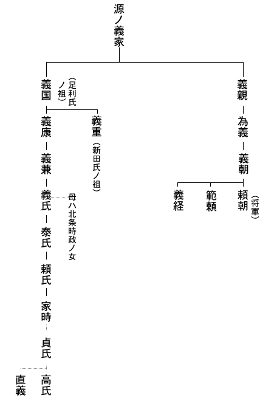

まだ除夜の鐘には、すこし間がある。
とまれ、ことしも
洛中の耳も、
洛内四十八ヵ所の
「さ、戻りましょうず。……若殿、又太郎さま。……はて、これは困った。いつのまにやら、邪気も無う、ようお
「これはちと、参らせすぎたな。やはりお年はお年」
右馬介は
かつて、自分は六波羅の大番役も勤め、都は何度も見ていたが、又太郎ぎみには、初めてのご見物だ。すべてが、もの珍しくてならないらしい。
ところで、こんどの上洛では、彼も驚目したことだが、なんと都には、酒屋が
なるほど、これは自分たちの国元、関東などでは見られない。
だが、この
主従しての、そんな話から浮いて、つい、
「何も土産ぞ。奈良酒とやら百済酒とやら、ひとつ、飲みくらべてみようではないか」
と、なったものだ。
これは、又太郎から、言い出したこととしても、こんなにまで飲ませてしまったのは、重々自分も悪かった、と思うしかない。
「若殿、若殿。もはや相客とて、たれ一人おりませぬ。さ、立ちましょう。除夜の鐘もそろそろ鳴る頃……」
又太郎は、やっと眼をさました。
「ああ、よいここちだった。右馬介、よほど長く眠ったのか、わしは」
又太郎は伸びをした。その手が、ついでに、曲がっていた烏帽子を直した。やっと
その眼もとには、人をひき込まずにいない何かがあった。
骨太なわりには、
けれど今、従者の一色右馬介にゆり起されて、無言でニッと見せた
とにかく、
「されば、お眠りはつかのまでしたが、昼、六波羅を出たばかり。さだめし、上杉殿のお内でも、この深夜まで、どこを何して歩いてぞと、お案じのことに相違ございませぬで」
右馬介の分別顔を、一方は屈託もなく笑い消した。
「ばかな、そんな心配をだれがするものかよ。こたびの上京こそは、せっかく、よい見学として、諸所、くまなく見て帰れとは、国元の父上のみならず、六波羅の伯父上も、くどいほど申されたことだ。まして、右馬介も付いておることと」
「その儀は、とく心得ておりまするが、程なく元旦にもなりますことゆえ」
「そうだ、除夜だなあ。ことしの除夜の鐘を、都で聞こうとは思わなんだぞ。明くれば、又太郎も十八歳。右馬介、おまえとは幾つちがいだっけな」
「ちょうど、十歳上に相成ります」
「十の違いか。わしがその年になるまでには、きっともう一度、都へ
「や。そのように、お過ごしなされては」
「なぜか今夜は、
分別は、こちら以上にあるお人である。きかないご気性である点も、日頃の練武修学、すべてにおいてなのだから、かくなってはお守役の右馬介も、黙って控えてしまうしかない。
と、そのとき、まるで木枯しでも吹きこんで来たように、この小酒屋の軒ばから、
「オオ。ここはまだ
と、凄まじい人々の吐く白い息が、どやどやと、土間いっぱいに込み入って来た。
たちどころに、土間は小酒屋らしい混雑と
十数名の武者は、みな
彼らには、片隅の先客など、眼の外だった。又太郎の方でも、思わぬ光景を
「右馬介。……どうやら鎌倉者らしいな」
「さようで。話ぶりでは、鎌倉から紀州熊野へ、何かの御用で行った帰路の者かと察しられますが」
「む。うなずかれることがある。先ごろ、熊野新宮へ御寄進の
「さてこそです。どうも最前から、犬を連れているのは妙だなと、見ておりましたが」
「なに犬を。どこに」
――犬の一語が、ふと彼らの耳を刺したとみえる。大勢の眼が初めて、ぎょろと、二人を見た。
だが、又太郎の視線とは、ぶつかり合うよしもない。
なるほど、立派な犬が人々の蔭にいたのだ。紀州犬としても
「ははあ、御献上物だな、この犬殿も」
酒板に
高時が、鎌倉御所のうちで、そうであるように、この犬も、武者足軽の群臣をしたがえ、旅路にも持ち歩かせているらしい
首輪は
「…………」
滑稽である。じつにおかしい。おそらく又太郎には、犬好きな執権の有名なる
現執権高時の
「……ふ、ふふふふ」
つい、又太郎は、独り笑いを杯に
人間どもに仕えられて、近ごろ
けんっ――
と、するどく悲鳴して、四肢を退くと、怒りを眸に示して、ひくく
犬以上にも驚いたのは、飲みはしゃいでいた人間どもの方である。場所はせまい小酒屋の土間。「――すわ」といっても、小早い身うごきは出来ッこない。どっと、壁を背にした空間を前に作って、さて、あらためて一せいに相手の在る所を
「やいっ。――蹴ったな、蹴りおったな。神宮の
太刀のつかを叩いて、犬の代りに、吠えている。
「は、は、は、は。……おん犬とは」
またしても、又太郎が嘲笑するので、右馬介は気が気でなく、酒板の下で、その袖を、引っ張った。そして、自分が
「右馬介、おまえは黙っておれ。わしのしたことだ、わしが物申す」
すると、返辞は、足軽頭が奪い取って。
「なに、物申すだと。御献上のおん犬に、土足をくれて、なんの言い条がある」
「ある」
又太郎は、残りの一杯を、ゆっくり飲みほした。
「犬に訊け。蹴ったのではない。足で頭をなでてやったまでのことだ」
「ば、ばかな言い抜けを。蹴られもせぬおん犬が、なんであんな声を立てるものか」
「いや、
「こいつめが、人を小馬鹿にするもほどがある。酔うての上の
「まあ、待て、わしの言が、うそかほんとか、見た上にしても遅くあるまい。これこれ、そこな犬殿の家来。もいちどわしの前へそれを曳いて来い」
「どうする」
言ったのは、大勢の端で、犬を
「――おれが抑えていればこそだが、押ッ放したら、
「おおよいとも。もいちど足であやしてやる。放せ」
放されたが、犬は一気にバッとは来ない。要心ぶかく、のそのそと近づいた。そして、底知れぬ
犬は疑った。ちょっと、姿勢を低くした。が、それは支度か、いきなり桃色の口をかっと裂き、相手の足首へ
いや、それも見ず、又太郎は小酒屋を飛び出していた。幾人かを
「右馬介、右馬介っ。早く来い。逃げるが一手だぞ」
わざと五条橋を避け、主従とも、七条河原へまぎれたのは、相手の
「いやどうも、若殿のお
「やはり酒のなせる
「そんなお悪いご
「はははは。犬も悪かった。あの
「ここは闇の河原、ご放言も、まず大事ございませぬが、そんなお胸の底のものは、他所では、ゆめ、おつつしみなされませ。先刻の小酒屋でのお振舞なども、
「右馬介は、いつまでわしを子供と思うてぞ。知っている。心得ておるよ。……ところで、除夜の鐘はまだか」
「はて。除夜はとうに過ぎておりまする。やがて東山の空も白みましょうず」
「では、はや元日か。さても、おもしろい年を越えたな。今年は
やがて二人の姿が帰って行った先は、北ノ六波羅の一
むかしは平家一門の
夜はしらむ。
年輪をかさねた六波羅松の松の
近くの
明けて、ことしは
ただしく過去をかぞえれば、武家幕府の創始者、頼朝の没後から百二十二年目にあたる
又太郎は一室で、清楚な
彼の伯父なる人とは、六波羅評定衆の一員、上杉
「アア都は早いな」
井筒のつるべへ手をかけながら、又太郎はゆうべの酔の
「――国元のわが家の梅は、まだ雪深い中だろうに。……右馬介、ここのはもうチラホラ咲いているの」
「お国元のご両親にも、今朝は旅のお子のために、朝日へ向って、ご祈念でございましょうず」
又太郎に、返辞はなかった。彼も若水の第一をささげて、まず東方の人に、
彼にとれば、ここは旅先の仮の宿所だ。ひまで、のんきで、身をもてあますほどである。
が、伯父の上杉憲房には寸暇も見えない。元日の朝、大書院から
次々の賀客を迎え、客がとぎれると、彼自身、
「いや、六波羅勤めも忙しいものだな。伯父上が口ぐせに、帰国の日を待つお気持ちもわかる」
二日の昼。
彼は一ト
元来、母系は
折よく、在宅していた為定は、
「おう、めずらしいお文」
と、手にした
「ほ。
「いえ……」と又太郎は、うすらあばたの頬を、どぎまぎ紅くして、さらに居ずまいを改めた。
「――
「が、まあ、兄君がおわさねば、其許がお世継じゃろうが。して御官位は」
「申しおくれました。――
「
為定は、うちけして。
「下野足利ノ庄といえば、天皇領の御住人」
「はい。足利ノ庄の内には、世々、八条院の御旧領があり、それが
「それ
「とかく、故なき上洛は、鎌倉の幕府の
「なるほど、
やはり世事にはうとそうな老歌人の言である。為定は抜け歯の多い口をあいて笑った。
老歌人の為定から「……お供も召されずお一人でか」と、いぶかられたのもむりはない。
いつもの右馬介さえ今日は連れていなかったのだ。都は知らず東国では源氏の名流、武門の雄と見なされている足利氏の
彼にもそれが分っていよう。やがて為定の門を辞して、あてどなく町を行くうち、ふと、石の地蔵尊を路傍に見かけると、何やら袂の物を供物にささげてそれへ
――が、又太郎には快かった。いつからか、母は地蔵尊を信仰していて。「そなたを生んだ難産の折もお救いであったし、そなたの
でも、これまでは、そんな心にもなれなかったものが、ふと旅の路傍で、こだわりもなく、今のような姿を神妙に彼が見せたのは、これも母と離れて、かえって、子の中に、母がほんとに分っていたからであろう。――で、彼は途々、母がよく夜語りにした地蔵尊の仏説などを、独り想いつづけながら歩いた。
「……そうか。地蔵の両面とは、つまりは、そのままこの又太郎高氏のことだった。わが子の両面をよう知っている母上が、それで、たびたびこのわしに」
彼はその日、心にきめた。母のことばに従って、地蔵菩薩を以て終身の守護にしようと思ったのである。
六波羅はもう
「若殿。ついにここのご宿所を
「嗅ぎつけて。……誰がだ」
「
「あ。あの犬家来どもか。それが」
「探題殿へ訴え出たため、検断所から何やら御当家へきついお沙汰のようです」
「足利又太郎と知ったのか」
「そこのほどは分りませぬが、上杉殿には、
「伯父上は、奥か。――いや旅支度など急がずともよい。ちょうどおいでなれば、ほかにお願いもある。さは案じるな、右馬介」言いすてて、彼はすぐ奥へ入った。
「
「はい。ここをわが家のように、わがままばかりして」
「なんの、他人行儀」
上杉憲房は以前からこの甥が好きらしい。短所もよく知っているのである。又太郎の方でもあまたな一族中でもほかならぬ人と、甘えた
「――その上にもです。右馬介から聞けば、私のつまらぬ
「御献上の犬へ、和殿が足を食らわせたとかいうあの事よな。よいではないか。わしはおもしろいと思うておる。ただし鎌倉の執権殿と、そなたの
まるで、おだてるような語調だが、すぐ声を落して。
「ま、先刻。右馬介へも申しておいたが、とにかく、こたびの和殿の旅は
「はい」
「で。犬の沙汰などは
「されば、もとより仰せには従いますが、ただもう一事、心残しがございますので」
「まだ、なんぞ？」
「うけたまわれば明三日、
「そりゃ、相違ないが。して」
「いずれは御警固として、六波羅衆も、お立ち迎えいたすことでございましょうず。又太郎とて
憲房は黙ってしまった。甥の熱意に、聞き惚れていたわけではない。当惑顔というものだった。また、若さというものは、分別者には出ない奇想を抱くものだと半ばあきれ顔にも見える。
しかし憲房にも、その願望をかなえてやりたい気は多分にあった。こんどの旅にしても、単なる都見物が当人の目的でもなし、また肉親のすすめでもない。いまの当主
どう説いたか、または憲房が、すすんで一策を案じたのか。ついに彼の望みはきかれ、よそながらでも、明日の行幸を拝してからの帰国と話はきまった。くれぐれ、その直後にはすばやく離京するようにと、憲房は念を押した。伯父甥、それらの相談で夜をおそくした。又太郎はすぐには枕になずめなかった。
あいにく、正月三日の空は、薄曇りだった。そして折々は
――天皇の
まことに、
子が父を訪い母と会うにすら、こんな儀式が必要事とされるのも、天皇なればこその、おわずらいよと、たくさんな庶民の中には、その不自然な御環境に「――なんたる、御不自由さか」と、お気のどくを感じた者もいたかもしれない。が、おそらくは万人が万人、それとは逆に、
「おなじ人間と生れながら」
と、
といっても、
いや、みかどとしては、むしろ今日の朝覲の御儀も「時を得たしるしぞ」として、満足以上なおここち栄えのうちに、未来のおん夢も、さまざまだったのではあるまいか。
今上の後醍醐は、じつに前例のないほどおそい御即位だった。皇太子たるまま十年も臣下の吉田大納言
やがて。
先駆が通って、しばらくすると、彼方からおん輿の屋根にきらめく金色の
それにせよ、列の流れははなはだおそい。
せまい四ツ辻などにさしかかると、まるで林みたいに立てた両側の民家の門松の枝が、おん輿の
道に白砂をしき、軒に門松を立て渡す風は、その頃には、正月だけの景色でなく、
いずれはこれも、唐風俗の移入からであろうが、要は、民家の貧しさをおおうためにあったのだから、帝室では、由来、門松は立てなかった。
ほどなく、おん輿は、京極おもての院の
みかどの父ぎみ、
が、ひとつには。
二ノ
どれも当っていなくはない。
けれど、父皇の老いの影や、過去半生の真の御苦労さなどをよく知る者は、やはり
明け暮れ、北条氏という
――もし世に、幕府というものがなかりせば。
今も今とて、父子対面の賀の
いきさつは、かんたんでなく、また朝幕の間にわだかまる禍根も古い。
「…………」
つねには、なかなかお会いの折とてないので、後宇多法皇にも、とつ、おことばも、すぐにはなかった。
親ごころ、推し
――さすが違うものかな。吉田定房の家にあった皇太子の頃とはずんと違って、ああ、ゆゆしい
と、頼もしげに、
こう御対顔の間は、奏楽も止み、関白ノ内経、諸大臣らは、
すると、その中にいた吉田ノ大納言定房が、とつぜん
ここで“御拝ノ礼”がすむ。
みかどは、一たん
そして再び、楽部の伶人の奏楽につれ、次の御宴では、法皇もお
おくつろぎの宴となってからは、みかども法皇も、時をおわすれ顔で、まことに御父子のおん仲でこそと見えた。
「
法皇は、後醍醐の御酒量のほども知っておられる。み手ずから酌してあげぬばかりなおすすめの仕方であった。
酒間には、法皇のお覚えよき寿王とかいう冠者の“
――頃をみて。
「あまりお酔も深からぬうちに」
と、
これは朝覲の式の古例とか。後醍醐は、父皇のための御笛を、み手に取って吹いた。
そとの濃い闇には、雪が音もなく降り出していた。聞きいる人たちの幻想には、白々と戯れる雪の
お年ばえといい、おからだの
わけて、
で、思い合わされるのは。
いまは九重の上、お噂とて、なかなか洩れ難いが、かつて吉田定房の邸におられた皇太子時代には、そうした豪気による放埒の御片鱗が、しばしば世上に聞えぬでもなかった。
たとえば、その当時。
ある年の秋の一夜だったが、
姫はまだ十七、深窓の
それだけに、西園寺家では「――いかなる悪党の仕わざか。もしや
おひとりでは出来ない芸で、これには日頃の御学友なども加担していたにちがいない。が、さすが乳父吉田定房の家には連れず、よそに隠しおかれて、こよなき恋の巣と、潜んでおいでだったものである。相手が相手、西園寺家の方でも、やがて、鳴りをひそめてしまったのはいうまでもない。
皇太子の姫盗みに会われた西園寺家の末むすめは、
しばらくは、皇太子との浮名沙汰など
「なにが御運かしれぬものよ」
と、ひとは羨み、皇后の父実兼なども、
「――この齢になって」
と一家の栄えをほくほく顔とも聞えたが、しかし、皇后には、いくほどもなくお淋しげな影が深まっていた。
皇后の
もっとも歴世、後宮の
それと、三十一という遅い御即位だったせいもあろう。
当時の人の筆に成る“
――この大納言（藤原為世）の女 、為子の君とて、坊（東宮）のおん時、かぎりなく思 されたりし御腹に、一ノ御子 （尊良 ）女 三 ノ御子（瓊子 ）、法親王（尊澄 ）など、あまたものし給ふ
と、見える。すでに女性の御経験もこれほどでおわしたのである。思うに、天皇御自身は、後宮制度という百花の園においてのみ、その人間性を
――近頃ですら、こんな話が洩れている。
やはり天皇の
そしてさて、この憎い女をと、かの源氏物語にある
「……
……………………………………
みかどの笛に、京極殿の灯は
みかどは、古例の曲を吹き終って、
「ふつつかなお聞え上げを」
と、御父の法皇に一礼して御座へ返った。
ほっと夢幻から醒めたような息の白さが灯を霞める。女房たちの座からは、ふと、みかどの方へ笑みを流した花の顔が多い。今を時めく寵妃とたれ知らぬはない阿野
女房の座には、その廉子のほか、さきの
御笛の間、笛の歌口におん眼をふさいで吹きすましていたみかどを仰ぎ見ながら、胸それぞれな彼女たちが、どんな恋情や
さて、ここでまた御酒一興。
次いで、くだけた“お遊び”が始まる。つまり公卿たちの
中宮ノ
――かくて、つきぬ
還御は雪の中。
やがて、夜どおし陣ノ内（警固区域）に立武者していた滝口や六波羅の人数がくずれ去って散るころは、陽もギラギラと淡雪の道は泥に
「いかがでした、若殿」
「昨夜か」
「されば、お望みのことは」
「む。院の
「では、
「いや、雪さえ降るに、
「それは、よいお国みやげ。さようにお望みもかのうた上は」
「オ。伯父上との約束。いちど六波羅のやしきに戻って、支度をあらため、すぐにも都を立ち去ろうよ」
夜来の警固武者のなかに立ち交じっていた足利又太郎と右馬介の主従であった。
暇乞いは、先の夜にすんでいる。それに伯父の憲房も、探題の正月行事でいなかった。ふたりは一睡の後、湯漬など食べ、旅支度にかかっていた。
すると、侍部屋の廊のかべを、サラ、サラ、と撫でつつ人の近づいてくる気配がした。そこの
「おじ様、お名残り惜しゅうございます。もう御帰国なされますか」
と、それへ坐り込んだ小法師がある。
まだ十一、二歳でしかあるまいに、いたましいことに、
この盲少年は、母方の人の子なので、又太郎とは従弟にあたる者だが、父は地方の乱で早くに戦場で最期をとげ、子はこんな不具だったので、いかなる宿業ぞと、母なるひとも、足利ノ庄の一尼寺に入ってしまった。と、いう身の上なので、憲房が都へ伴い、さる公卿の許へ、琵琶の習得に通わせていたのである。
「……オ、覚一か。もそっと、こちらへお入り。して、なんぞ国の母者へ、ことづてでもして欲しいのか」
又太郎は六波羅に滞留中、この覚一から、友達のように、また、兄のようにも慕われていた。
覚一は、あまえ顔に、
「はい」
と、相手の声をたよりに膝をすすめる。
ちょこねんと置いた姿の坐り癖も、小首をかしげる
「ほんに又太郎さまは、よく私の胸をおわかり下さいます。仰せのとおり、旅のお邪魔ではございましょうが、
「手紙か」
「手紙やら何やらでございまして、中には都で求めた
「琵琶の切れ糸」
「ええ。母がそれを見れば、覚一が、琵琶の師についてこんなにも勉強しているかということが、まざとお分り下さるにちがいございません」
「おう、いとやすいこと。かならず母者へ渡してあげる」
覚一の手から一封の物をあずかって、
「ほかには」
と又太郎は、この小さい
「ありません……」と、覚一は首を振り「こまごま
と、言い澄ました。
そしてまた、自分のことばを追っかけるように。
「でも、又太郎さま。あなたのお眼で見た私の姿をそのまま、どうぞ母へおつたえ下さいまし。覚一は、このように
「倖せとな」
「はい」
「不倖せとは思わぬのか」
「思いもいたしません。ここの上杉殿では、御一家みなで可愛がって下さいますし、琵琶の道に入っては、都で
しげしげと見れば、針のような筋しかない
又太郎は、彼の肩においていた手で、そこを一つ叩いて、
「よし、きっと上手になれよ」
「なります」
「足利ノ庄へ帰ったら、
「そんなことはございません。揃うておいでなのが無上のお倖せです。どうかあなたも、足利家の御息子としてお立派なお方になってください。私も負けずに励みますから」
「つらいぞや、お
「まことに、
「右馬介さまも、はやお支度ずみでございますか。もう一夜でもあることなら、いま私の習うている平家の曲の屋島でも、ぜひ聞いていただきますものを」
「いや、そうしてはおられぬ。いざ若殿」
右馬介は先に立って、又太郎をうながした。
二人は、六波羅並木、車大路の辻まで来て、ふと立ちどまった。
「あれを見い、右馬介」
「おあとに、何か」
「いや、覚一の姿が、まだわしたちを見送っておる」
「はて。見えもせぬ眼で」
「そうでない。見える眼も同じだ。わしたちを振向かせているではないか」
――この日、都を離れた主従は、当然、数日後には、東海道なり東山道の人となっているべきはずなのに、やがて正月十日の頃、二人の姿は、方角もまるで逆な
渡辺党の
「若殿、どうしても、思い止まりはできませぬか」
「まだいうのか」
「でも、今日の便船にお乗りになってしもうては」
「そのため幾日も船宿で日を暮して来たのに、この
「――が、難波の諸所も、はからず見ましたこと。このたびは、ぜひこの辺でお引っ返し願いまする。お国元のお案じも、ただ事ではございますまい。右馬介も腹切らねばなりませぬ」
「切れよ、腹の一つや二つ」
「二つとは持ち合せもございませぬで」
「はははは。冗談はやめよう」
「おやめ下さい、無謀なご遍歴も」
「無謀にみゆるか。又太郎にはしかとした算用もあっての旅路を。元々、足利ノ庄を立ち出たときから、こたびこそは、いッその旅、都だけかは、四国中国までもと、期していたのだ」
「では、初めからご両親やら上杉殿をも、お
「仕方がない。出立前から長途の遍歴などと願っても、おゆるしのあるはずもなければ」
ここ数日、主従喧嘩づらの論もしたが、又太郎高氏の初志は、変ろうともしなかった。
機会はふたたびないと彼はいうのである。東国と西国との距離は、当時、若人の心にすら、一
だが、伊勢路から都を限ってと、日数までもあらかじめ、主家の両親とは約してあること。そして「そちも、ついて行くからには」と命じられて来たものだ。これ以上、若殿の気随気ままに
「や。あの船着小屋の人立ちは」
不承不承な彼にひきかえ、一方は急に大股となった。見ていると、又太郎はもう人中に
「やよ、右馬介。帰ろう。帰ろうっ。どうやら北の国で戦乱が起ったらしいぞ。遍歴などはしておられぬ。すぐ東国
右馬介は耳を疑った。
何か、ありえぬ
「えっ、北方の戦乱ですッて。戦乱が起ッたと取沙汰しているのでございますか」
武家の
もとの船宿の方へ、引っ返してゆく又太郎を追って、もいちど、念を押してみた。
「北方の乱とは、もしや九州沿海のお聞き違いではございませぬか。北にはあらで、南なら、うなずけますが」
「なんで」
「
「それとの、誤聞だろうと申すのか」
「おそらくは」
「ばかな」
「ちがいましょうか」
「ちがう。大違いだわ」
又太郎は、一歩も待つなく――
「ともあれ、異変の
時乱に敏感なのは、いつのときでも、官辺よりは民衆だった。彼らのつたえる風聞には、公な
つい今。――又太郎が小耳にはさんだのも、それなのだ。
奥州北津軽から、四国へ帰るという一僧侶が、長柄の船待ちで、しゃべっていたものである。
津軽の豪族、
 、伝来
、伝来いや、一僧の言だけでなく、べつな旅商人らしい男も、
「なんのなんの。もう諸所では合戦の最中だ。槍、刀、馬の鞍など、白河ノ関からこっちでさえ、去年の三倍にも値が
と、ひとり
「ほう。……では、蝦夷の空は
群集、多くの顔は、うららかに聞いていた。
もう源平争覇の社会を眼に見た人間は地上にいない。蒙古襲来の国難なども、老人の炉辺話でしかなかったのである。四十年の無事泰平は、誰からも、全く過去の悪夢を忘れさせていた。
やがて主従は、ゆうべの船宿の一室にいた。又太郎は風聞の仔細を語った上で。
「……が
ここまで言いかけると、彼はその地蔵あばたの頬を、笑み割れそうにほころばせた。
「知らぬか。――“一雲を見て凶天を知る”という言葉もあるのを」
「いい川だなあ、淀川は」
舟べりに肱をもたせて、又太郎はうつつなげな詠嘆を独り洩らしていた。
「――わしの性分か。わしは大河のこの悠久な
「まことに」
右馬介は、すぐ相槌を打った。
「私としても、今日はヤレヤレという心地です。天の助けか、一路ご帰国と、俄に、ご翻意くださいましたので」
「はははは。右馬介のやれやれと、わしの暢々とを一つにされては迷惑だぞ。“相似テ相似ズ”と申すものだ」
「はて、昨夜もめずらしい一語を伺いましたな。“一雲ヲ見テ凶天ヲ知ル”とか」
「ウム」
「いま仰っしゃった語も、何かの詩句にでもございますので」
「宋の人、文天祥の詩とやら聞いた。ちょっと、おもしろい詩ではある」
「どうせ、すぐ忘れましょうが、舟の
「こういうのだ」
又太郎は低い声で詩を
閑中、我、山ヲ看ル
相似テ、
忙ハ
「わかる」
「わかりませんな」
「では、山を見るがいい」
「されば、左には摂津の六甲、龍王岳。右には、生駒、金剛山のはるかまでが霞の中に」
「右馬介は、今、山を見ている」
「確かに」
「だが、あたふたと、忙裏に暮れている日には、山と人間の位置は逆になる」
「すると、どうなります」
「山が人間を眺めていよう」
「つまり、
「ま、そうだな。すべての忙は、閑には敵わぬとでもいっておこうか」
「さてさて。若殿にはご幼少から、よく足利学校の
「いや、この一詩は、先年、那須の
ふと、
舟は、老幼男女、いっぱいな客を盛っている。尼、
後ろには、
「…………」
じっと、こちらを射たのも一瞬、公卿の眼はすぐ書物の上に他念もない。紙面の宋版の木活字が時にひらひら風にうごくのを、又太郎はなお凝視していた。
――山、我を看るか。我、山を看るか。
公卿の注視も、じつは又太郎の方にあるのかも分らない。
降りる者も見えたのに、
その手練やら軽妙な
「右馬介、思い出すなあ。あの連中を見ておると」
「何をですか」
「それ。いつぞや七条河原の田楽舞の掛け小屋へ入った折、人気者の花夜叉とかいう田楽役者が唄った唄の一と節を……」
「ははあ、花夜叉のあれですか」
右馬介も思いうかべた。その
わが子は二十 に成りぬらん
博奕してこそ歩 くなれ
国々の博徒 に。
さすが子なれば
憎からじ
見捨て給ふな
王子ノ住吉、西ノ宮
「……ても、博奕してこそ
国々の
さすが子なれば
憎からじ
見捨て給ふな
王子ノ住吉、西ノ宮
すると。――よくよくそれまでは、
「止めろッ、若雑ども」
と、舟脚もぎくとするような声で呶鳴った人がある。
「なにっ」
無頼な眼つきが一せいに後ろを向いた。
ちょっとの間、その一喝は、どの顔が発したものかわからなかった。しかし、さっきから漢書に親しんでいた野駈け姿の若公卿が、ふと、書物から顔を離して、うしろの小冠者へ物をいう風なので、さてはと、舟中の視線はそこへそそがれた。
「これッ、菊王、
きっと、眉にも怒りをみせて叱りつけると、その人はまた、宋版の漢書へ眼を落して、何もなかったような姿である。
「はいっ」
菊王なる侍童には、怖らく不満なのだろう。大きく口を結び、
無頼だけに眼先もはやい。
なんとなく、相手に気押されたのも事実だが、とたんに沸いた乗客のざわめき声は、すべて自分らに不利だと見ると、
「……こいつはいけねえ」
たちまちの
俄に、銭や、博奕道具なども、どこかへやって、
「オイ、オイ。そこの小母さんたちよ。こっちへ来て坐んな。やい、その年よりの荷物を、誰か取ってやらねえか」
などと、人並な人情味をみせ、すぐ車座を詰めあった。
こう機嫌を直すと、彼らは衆の中では最も衆を明るくする特性を持っていた。――一時はどうなることかと恐れ、また彼らの体臭に近づきかねていた男女も、みるみるうちに、彼らのとぼけや冗談に巻きこまれて、舟は和気
「なアみんな、俺たちも悪かったが、日がな一日、舟の中じゃ、何ぼ何でも
すっかり乗客と仲よくなったつもりの彼らは、あたりの人にまでやたらに酒をすすめたりなどしながら、ここは大河の中とばかり、言いたい
「ええおい。世間の奴らは、よく俺たちを鼻つまみにしやがるが、いったい、俺たちを
そこらから始まって。
「上役人は、
口吻の裏には、いくぶん、さっきの相手だった公卿主従への面当てもあるような調子だった。
さすが、これは
「これこれ、そこな
「へえ、面白いとお聞きでございましたか」
「むむ。いったい誰が、そちの申したように、賄賂を
「へへへへ。誰がって、数えきれたもンじゃございません。小物大物、まああなたさまがたの方が、よくご存じでございましょう」
「さよう。では、わしの方から話してつかわそうか」
「ぜひ、ひとつ」
「よろしい。舟にも書物にも、わしも折ふし飽いたところだ。談義してつかわす程に、その酒を一碗、これへ持ってまいれ」
「えっ、仲間どものこの酒を、召上がって下さると仰っしゃいますか？ ……」
公卿もさまざま。さても風変りな公卿を見るものかな。
――こなたの足利又太郎は、舟べりに
「……うまい」
と、一碗の酒を、見事、息をつかずに飲みほした当の若公卿は、気を呑まれている無頼の若雑たちへ向って、さらに、
「もう一献酌いで欲しいぞ。なみなみと酌いでおくりゃれ」
と、ほほ笑んでいう。
それをも、ぐっと干すと、さすが頭巾笠のうちの眼もともほんのり桜色に染まった。さて、約束の談義とは、それからの気概りんりんたるものだった。
「――いま汝らの
彼の演舌は、若雑輩のみが目標ではなさそうな眸だった。
「それなん鎌倉の執権高時の内管領、長崎
又太郎は、きき耳すました。
はからずも、彼が
――北方禍乱の原因を、なお、若公卿はこう説明する。
津軽の安藤季長や
その果てが、もつれに一そう、もつれを深め、相互、「かくては
又太郎は、うなずいた。
「さてこそ、いよいよ北方の乱は確実」
彼の帰心は矢のごときものがある。
だが、
「――かつはまた執権北条の底ぬけな
新帝後醍醐の徳を、彼は、
前年の飢饉には、
また、天皇親政このかた、おちこちの
――すると、大事なところで。
「お客人、山崎でお降りのお客人。船が着く、立たっしゃらぬか」
船頭の声に、又太郎は、われに返った。惜しくはあったが、かねてから
ここは淀川の北岸、山崎ノ郷。古くは、
しかし、いまは遊歴でもあるまい又太郎主従に、何の目的があって、こんな古駅の人となったのか。しかもあの、鷹野姿の若公卿には、多分な好奇心も残しながら、なぜ、せっかくな舟を途中で降りてしまったものか。
「いつか暮れたな、春の日も」
「オ。……晩鐘が鳴っておりまする」
「光明寺か、海印寺の鐘か」
「どこぞ里の
「いや歩こうよ。まだ
「いや、
西国街道を横ぎッて、夕けむりの暗い軒端の並ぶ石ころ坂を登りぬけると、辻には“是より北、
「さても、あのあと、どうなったかな？」
「最前の舟の出来事で」
「さればよ。あの若公卿の演舌など、もすこし聞いていたかった。惜しいことを」
「まことに、
「ああいう公卿も居る時世かと、わしもまた初めて知った。ひそかに、
「その資治通鑑とか申しますのは」
「近年、堂上を
「ははあ、では舟で見かけたあの
「いや、そんな
道は登るばかりであった。丹波境の
「……ただ、かえすがえす惜しかったのは、堂上ではいかなる人か、または今、官職なき町公卿か、その名も訊かれぬことだった。が、いつかはまた」
急に、ぷつんと黙ったのは、そのとき、山蔭の出会いがしらに、数名の人影と松明の光が、彼の瞼を射たためであった。
なにか高声で通りかけたが、ふと道をよけて
「……旅人か？」
と馬上で言ったようである。
不慮な山中の遭難者はめずらしくない。武士でさえも小勢だと、しばしば裸にされたり、みなごろしに遭ったりする。こんな物騒さは又太郎も、道中耳に飽いたほどだが、洛中ですら群盗の出没は、都名物の一つと聞かされたには、唖然とした記憶がある。
「……旅人でおざる。お通りください」
右馬介が、親切に言った。道は谷添いなので、馬を交わすのがせいぜいなのだ。
しかし、馬上の顔も若党たちも、じっとこっちを確かめている風で、たやすくは前をよぎりもしない。
「やっ、もしや？」
とつぜん、馬上の者が、土にぽんと音をさせて降り立ったので、それには主従も、何事かと、
「おう、間違いはない」と、武士は又太郎の前へひざまずいた。そしてもいちど、松明の下から、しげしげと仰ぎ見て――
「おそれながらあなた様は、
「なに。わしを又太郎高氏と知ってか」
「知らいでどう仕りましょう。多年、足利表のお
「では、篠村に来ておるわが家の郎党よな」
「はっ。御一族の松永殿に従って、足利ノ庄よりこの丹波篠村の御領所へ移ってまいった一名にござりまする。……がしかし、若殿には、いかなるわけで、かかる遠くまで」
「さてはそうか。じつはその篠村の領所を訪ねんと、これまで参った途中よ。篠村まで、あと道のりはどれほどか」
「なんの御案内仕りまする。
「が、そちは」
「京へ
武士はみずから馬の口輪を取り、連れの若党を叱咤して、元の道へ走らせた。彼らの在所篠村の領家（領主の代務所）へ先触れさせたものだろう。
丹波篠村ほか数ヵ村は、
で、そうした離れ領土には、本国から一族の確かな者をやって、そこに土着させておく。年貢取立ての代務やら主家との連絡など、つまり国司の目代と似たようなものだった。
「おう、お見えらしい」
領家の門前には、先ぶれをうけた代官の松永経家、書記の引田妙源などが、驚き顔を並べて出迎えていた。
――頃はもう夜半をすぎた時刻だった。
「経家、昨夜は
むさぼり眠って、さて醒めて、湯浴み食事などもすました翌る日。
一室には、又太郎のための上座が
「どう仕りまして。御本国におわせば、かけ替えもない大事なお体。その君が、どうしてと、一時は胆を冷やしましたが、やがて御仔細を伺って」
「はははは、胸をなでたか。……ところで経家、さっそくだが、脚のよい駒二頭に鞍をおかせ、
「はや、今日にも」
「馬を借ろうがため立寄ったまで。蝦夷の乱とも聞いたので帰国をいそぐ」
「お引止めはいたしますまい。北方の変はおろか、当地にて観ておりましても、世上、ただならぬものを、特に近年は覚えまする」
「そちもな……、そう
「あらたに即位あらせられしお若きみかどの、比類のない
「オ。思いあたるわ」と、又太郎はここで、淀川舟で乗り合わせたた異色な若公卿の言動をつぶさに告げて――「そも、ああいう公卿振りが、今様な近時の禁中なのであろうか。またその人は、いかなる身分のものやらと、いまだに謎としておるが」
と、聞くうちにも、首かしげている経家にただしてみた。
「……さ。いま伺えば、その若公卿が召連れていた侍童の名は、菊王とか」
「たしか菊王と呼んだと思う」
「ならばそれも、天皇に近う仕えまつる近習の御一名、
「どうしてわかる」
「菊王は、後宇多の院の侍者、寿王冠者の弟とやら。――そして、とくより日野殿の内に
「そうか。そう分って、何やら胸のつかえが下がった気がする。みかど後醍醐のおそばには、なおまだ、ああした公卿振りの
「は。世上、つたえるだけでも、蔵人殿のほか、日野参議
「もっぱら宋学の新説を学びとり、儒仏の究理なども
「されば、天皇おみずからも」
「では、異国の学を
「あ。めッたなお口走りは」
たれか坪の渡りをこなたへ来るらしい
妙源は手造りの草餅を盆にのせて、うやうやしく又太郎の前にすすめた。
「何かお慰みにと、
この引田妙源は、以前、又太郎高氏の父、貞氏の祐筆を勤めていたこともあり、ここでもその文書上の才能は代官経家に次ぐ地位の者だった。
「お、山里にも、もう
又太郎がその一つ二つを喰べるのを、妙源はうれし気に見て。
「そうしておいで遊ばすと、御幼時のお姿も偲ばれてまいりまする。
「そうそう、祖先の
「特に、若殿御元服の日、その報告を御先祖にささげられた後で、重臣どもの意見の相違から、ついに“
「はて、置文とは」
「足利家七代の君、若殿には御祖父にあたる家時公の御遺書のことでござりまする」
肺腑を突くとは、こんな言を擬して、一
――およそ足利家の者にとっては、先々代の主君家時の話というのは禁句だった。なぜならば、絶対に公表できない原因で、しかもまだ三十代に、あえなく自殺した君だからである。
ところが。――その家時の血書の“置文”（遺書）というものが、菩提寺鑁阿寺のふかくに、家時の霊牌とひとつに封ぜられているということを、重なる家臣は知っている。
――で、又太郎高氏が元服報告の日にも。「――もはや御元服なされた上は、お見せすべきだ」という臣と。「――いやまだ時節でない。もっと若殿が御成人の後ならでは」という臣と、両者二説にわかれたため、その折にも、それはついに開かれずにしまったほど、足利家にとっては、なにしても重大な意味をもつ秘封でもあるらしかった。
「……そうだ、わしとしたことが、うかと、あの日のことは忘れておった」
つぶやいて、面をふかく沈めていた又太郎は、やがてのこと、その顔と共に、全身も上げて突っ立った。
「出立するぞ。経家、駒の支度をいそがせろ」
「はっ」
「不覚よ、今日まで見ずに過ぎていたのは。……帰国の上は、すぐにも、鑁阿寺の置文をこの眼で拝見せねばならぬ」
経家も立ちかけたが、妙源と顔見あわせると、共に姿を揃えて、又太郎の足もとに、もいちど平伏して言った。
「自然、御披見の日が来たものと存ぜられます。怖らくはこれも、御先代の霊のあるところ、今日となったことも、決して遅くはございますまい」
丹波を去ったのは、先おととい。ゆうべは
「おううい、おおいっ」
呼ぶ者があった。たれなのか、まだ遠い声である。
又太郎と右馬介とは、
「はて？」
手綱を休めて、きき耳すます。
たしかに、二度めの声も、
「高氏どの。高氏どの」
そう呼んだように思われる。
ところが、近づいたのを見れば、まったく見も知らぬ人間だった。
――それはそれとして、相見るやいな、この男、
「わああああ。こりゃ
と、独りでおかしがッている顔を斜めに振向けながら、駒もゆるめず、連呼して、駈け抜けてしまった。
むッとしたに違いない。右馬介が色をなして。「――うぬ、待てっ」とでも叫びそうに、あぶみ立ちして、先を睨んだので、又太郎はあわてて制した。
「やれ待て。おかしいぞ、いまの武者は」
「言語道断。いずれ近くの受領か
「だが、高氏ちがいと申したのは
「いかさま、それは」
「
道々には、ひとつの懸念がなくもなかった。
例の献上犬の事件である。
あの後始末は、伯父憲房がのみこんでくれてはいたが、六波羅から鎌倉通牒となり、その結果、さらに又太郎の無断上洛までが発覚となれば、幕府は怒ッているにちがいない。
わるくすれば、又太郎の帰国を海道の途上で
が、今日の旅路を
「や。……さっきの武者が」
「なに。あの群れの中に」
「見えまする。しかも、何やら
犬上郡の野路をすぎ、
どうします？
二の足をふむ右馬介のたじろぎも、又太郎には眼の隅のものでもなかった。駒脚はまっすぐにそのまま不知哉川の河原へ近づいている。
先はこっちを待っていたに違いない。さいぜんの黒鹿毛に乗った侍は、そこの群れを一人離れて、すぐこなたへ寄って来た。
が、前とは異なって、ていねいに。
「あいや高氏どの。つい今ほどの失礼は、平におゆるしあれよ。連れの御方に追いつかんと、上わの空なるぶざまでおざった。ははははは、それにさぞ、御不審でもおわせしならん」
歯ぐきを見せて意味もなくよく笑う男である。装いなど、ひとかどの者とも見えるに、又太郎にはその人柄に何かいやしさを覚えずにいられない。
「なんの、いらぬ御会釈。それよりはまず伺いたい。わしを高氏とは、よう
「いや、それしきなことぐらいは。ハハハハ」と、またぞろ哄笑して、
「――
さてはいけない。運の
又太郎の後ろにあって、右馬介は、キシキシと体が
けれど、安手によく笑う侍は、なお、
「オオそれよ。また数日前には、そこな郎従とおふたりで、淀川舟を山崎辺で降りられたことがおありであろ。これは放免の報らせでのうて、さる貴人の座にてお話に出たことだが」
「……いかにも。そして」
「その御方の言では、六波羅の内にも、かつて見たことのない薄あばたの一曹司と、終日、ひとつ舟に乗り合せたが、そも、いずこの曹司ならんか。……どこやら
意外な彼のことばに。
「では、そのお人は、前ノ大内記日野俊基朝臣でおわそうが」
「や、御存知か」
「わしも、あとにて知った」
「いよいよ、御縁がある」
「ところで御辺は何者」
「申しおくれた」
彼は、急にあわてて。
「――
「では、わしも告げよう。察しのとおり、自分は足利又太郎高氏にちがいないが、先刻、高氏ちがいと申されたのは、いかなるわけか」
「さ、それが奇遇。お年頃もお名も、まったく同じ高氏殿が、もひとりあれにおらるるのじゃ。ハハハハ、世間はせまい。高氏殿と高氏殿とが、かかる道にて行き会うとは」
この世間に、自分と同じ高氏という“名のり”を持つ人間が、もひとりいたとは初耳だった。さして、ふしぎとはなしえないまでも、土岐左近の言のごとく、人生途上、まこと行路の一奇遇にはちがいない。
が、その同名の高氏とは、いったい、何処のいかなる
――左近が語るところを次に
この近江路の
だが、鎌倉初期において、佐々木系は二つに分れ、一は江南の六角家、一は江北の京極家となっている。
ところで“名のり”を高氏と称する当の人物というのは、その江北京極家の当主であった。つまりこの地方の守護大名、佐々木佐渡ノ
「足利家も源氏の御嫡流、佐々木殿も頼朝公以来の名族。申さばおなじ流れのお
舌にまかせてここまで述べた。しかし自分の小細工を疑われてもと、考えたらしく。
「じつは最前、あなた様を佐々木殿と見違えたのは、供の列を先にやって、野路の茶店で
そんなことはどうでもいいように、又太郎は彼方の群れをチラと見やって。
「会う会わぬは、わしの所存でない。佐々木殿の望みか、それとも御辺の一存か」
「いやいや、
又太郎は、後ろへ言った。
「右馬介。どう答えよう」
「……せっかくなれば」
「そうだなあ、こちらは
「まず、大事ございますまい」
右馬介もやや警戒心をほぐした容子だ。眼に言外のものをいわせて頷き返す。
はやくも土岐左近は、佐々木高氏のそばへ駒を廻して行った。そして何か

「佐々木殿には、なにぶん、ここは路傍のこと。ごあいさつもなりかぬれば、自身はお
――なるほど、見てあれば、河原立ちしていた供人の同勢は、弓、
なぜか案内の土岐左近はやたらにしッしッと駒を追う。――ために磨針峠の上、番場の茶屋についたのも思いのほか早く、琵琶湖の夕照がまだ後ろにはよく見えた。
「どうぞ、お息休めに」
茶屋の床几には先発した佐々木家の臣十名ほどが待ちうけていた。青磁の馬上杯に銚子を添え持ち「……お水がわりに」と、鞍わきから馬上へすすめる。
「お。これは甘露」
八献、十献、又太郎はたてつづけに飲む。
同様に右馬介もすすめられたが、彼は飲まない。むしろ又太郎の余りに人を疑わぬ態度も心もとなく、
「土岐どの。当のお屋形はあと何里ほど」
「柏原はすぐでござるが、なお伊吹へかけて少々登るので」
「では、伊吹山の中腹か」
「されば、ちと急がぬことには」
さてこそ、ここの“待ち家来”は
柏原から北へ、やがてまた、伊吹の裾をやや登ってゆく。もちろん宵はとッくに過ぎていた。やがて
先に帰館した高氏の命か、総門内では、衆臣が立ち迎える。ただちに、又太郎主従は客殿へ、また湯殿へ、そして、膳部まで出てしまった。夜はすでに
「さすが
「おなじ守護大名ながら、下野国の御家風と、ここの佐々木屋形では」
「まさに、月とすっぽん」
――翌朝、起き出てみると、

それにつけ、又太郎は、
「当主高氏とは、そも、どんな？」
と、今日の会見が変に待たれた。
やがて。夜前に約した時刻になると、土岐左近が迎えにみえ、ふたりを誘ってべつな広間へみちびいた。
右馬介は、もちろん末座。
そして又太郎だけが、ずっと進んで、その一つに着こうとしたとき、廊の杉戸口からつかつかと入って来た佐々木高氏が、もひとつの茵を前に、
「やあ」
とだけいって、ひと呼吸ほどな
「御着座を」
すすめながら、自身も共にどっかと坐った。当時の作法、いうまでもなくあぐらである。
「ご迷惑とは存じたが、下野と近江とでは、またのお会いもいつの日かと、土岐が申すままお引留め申した。お見知りおきください。身どもが佐々木佐渡ノ判官高氏でおざる」
「御同様に。……足利又太郎高氏におざりまする」
「はははは。高氏と高氏、これがまことの名のり合いよの」
せつなの印象では、この初対面も、又太郎には何か心にそぐわない“他人”を感じただけだった。
足利高氏と佐々木高氏。
――名のりは同じであっても、どこひとつ、自分とは似ても似つかない。
「これはあかの他人だ」と、すぐ夜来の期待も他愛なく
が今、佐々木高氏が胸をそらして笑った朗らかな顔と、その
きのう、途々での土岐左近の話だと「――お年もあなたと同じくらい」と聞かされたが、いま会ってみれば、ちと違う。二ツ三ツは上であろう。いや風采といい大人びた態度など十も年上に覚えられる。が、やはりほんとのところは二十を少し出たぐらいか。
そんな若さなのに、である。
見れば佐々木は、みごとに頭を青々と剃りまろめた“入道高氏”なのだった。
といってべつに、
身なりはむしろ女装にも勝るけんらんさで、
かつまた、隠し化粧もしているのであるまいか。頬うるわしく唇紅く、小鼻のわきの
――ははあ。かかる態の人物の生き方やら嗜好をさしていうものか。
又太郎はふと思いついた。
ちかごろ“
おそらくは、田楽役者の軽口などから
むかし山門の法師間には“
――婆娑羅に生きる人。
といったりする。
だから今の世には、鎌倉のばさら執権の下に、ばさら御家人、ばさら
「……読めたわ。ここの佐々木も、つまりはその、ばさら大名という者であったるか」
又太郎の心のうちにも、やっと談笑に
すぐ
「
と、佐々木高氏。
「なかなか。まだ自分ごときは曹司（部屋住み）の身でござれば」
と足利高氏。
「ご遊歴とは、よい御身分。お羨ましい」
「いや、それもわびしい
「鎌倉政所をお
そこでふと、
「はははは。おん許も高氏、それがしも高氏。気をつけぬと、こりゃ、ややこしい」
と、打笑った。
城内の大庭には、紅梅白梅が妍をきそい、ここには杯交のうちに気をうかがい合う両高氏の笑いがつきない。はからずも、これこそ“婆娑羅”な
「ときに……」と、又太郎からたずねた。「ぶしつけなれど、御出家にしては余りに早すぎるお
「ヤ、これですか」
佐々木は、酒照りも加えて、一そう青々とかがやいている頭へちょっと手をやって。
「もとより出家ではおざらん。いうならば、おつきあいの
「はて、異なおつきあいを」
「
――少年時、彼は、執権高時のそばで小姓役をつとめ、元服祝いなども、鎌倉御所でなされたほどに寵をうけた。
ところが高時にはまま“おん物狂い”と人もいう得たいのしれぬ奇病がある。
そのため先年、病後の床あげを
「それは、御奇特千万」
「執権どのは、常日頃、そうした事のみが、およろこびのお方なのだ。なべて眼に見えぬことは、
きらと、その眸を又太郎高氏の額に射澄まし、ことばをかえていい出した。
「そうだ、天下の守護大名中に、高氏が二人おるのもまぎらわしい。以後、それがしは道誉を名のろう。高氏という名のりは、足利どの御一人にて持ち給え」
なんによれ、興を主として興に生きるのが、ばさら者の、ばさら精神というものか。
彼も少々酔い気味だが、
「今後はおん身一人で“高氏”を名のり給え。自分の名は“道誉”でとおす」
などの言辞は、まったく即興的である。
いやその佐々木が、執権高時の剃髪に殉じて、共に頭をまろめたなども、半ば即興の機智かもしれない。
これでは、高時に仕えた小姓の頃、無二の者と愛されたのも道理である。犬好き、遊宴好き、田楽狂の執権が、彼を愛した
「……が、しかし一種の人物」
と自然に同調もされてしまう。
こうした小半日のすえ。
「いささか酔うた」
道誉は顔を撫で、
「高氏どの、ちと醒ましに庭へ出ようか。――
と、みずから先に席を離れた。
高氏も大庭へ降りて立つ。
右馬介、土岐左近、家臣小姓たちも、ふたりの逍遥につづいて行った。山城の曲輪は、四山の
「おつかれかな、高氏どの」
「いや、ひどく
「ほ。御賞美にあずかったか。自慢に似たれど、これも自分の造庭でおざる。……おうここらで、茶など一碗献じようか。茶亭のしたくはよかろうな。土岐どのは、先へ行け」
左近の姿が、木立の中の小道に消えると、道誉は右馬介と家臣らを見て、
「何せい、茶堂は手ぜま。そちたちは、戻って休息せい」
と、しりぞけた。
この時代にはまだ後世のいわゆる茶道などは生れてない。けれど喫茶の風は、ぼつぼつ、拡まりかけていたのである。禅僧の手で漢土から渡来した始めのころは、禅堂や貴人のあいだに、養生薬のように、そっと愛飲されていたにすぎなかったが、近ごろでは“
けれどいま、道誉が彼をみちびいた離れは、田舎びた無仏の一堂で、一幅の壁画と、棚には錫の
「……ここなれば人けもなし、なんでも話せる。さ、高氏どの、くつろごうよ」
道誉は、釜のかけてある一
「じつは」
錫の茶壺から、碗のうちへ、茶の葉をサラサラとこぼし入れて、釜の湯を
「……胸をひらいて、いちど、山ほどなお話がしてみたかった。与えられたこのよい機会に」
高氏はすぐさとった。ここへ自分を誘ったには何かべつな底意があってにちがいないと。――が、さりげなく、天目台の碗を、
「おお
あらぬ問いには、道誉の方でも、それを高氏の独り言にさせて、答えもしない。
黙々と、次の茶を、土岐左近に与え、自分の
「鎌倉はよくご存知でしょうな」
「たしか、足利殿の鎌倉の別邸は、
「いや、その鎌倉の家には、幼少数年はいたが、以後、多くは足利の地でした」
「では、府内のさま、執権どのの左右、また御所内のことなどは」
「くわしく存じもよらぬ。いずれいつかは幕命を拝して、鎌倉勤めの日もあるでおざろうが」
「その日には、おそらく、おん許のような純なお人は、あきれ返るに違いない。これが天下の首府かと、鎌倉の
世の危うさが人の
「この道誉とて、鎌倉の恩寵をうけた一人、なにも
道誉の眸は、高氏の眸をとらえて、離さない。
横にはまた、息をつめて、彼の顔いろを見すましている土岐左近の毛あなから立ちのぼる殺気があった。
あわてまい、身じろぎも危険である。と考えてか、高氏は乾きを覚えた唇もしめさずに
すると、道誉の頬の
「はははは、ご迷惑かな。かかる心をゆるしたおはなしは」
「いや、ご
「かもうまいか」
「おたがい地方の守護たる身。など無関心には」
「さもこそ。お互いは若い」
「……いちいち挙げては、きりもないが」
道誉は、さらに、鎌倉の
いまさらなんの。驚くほどなこともない。
北条幕府の
「土岐どの、ここらで御辺の胸も」
と道誉は、言を横へ譲ッた。
待っていた唇である。土岐左近頼兼は、あたりを見まわした。眼も充血している。
「事、洩れては一大事。かつはおそれ多い。高氏どの、誓ッて御他言なきように」
のどの辺を出きれぬ小声や、そのわななきざまを見ると、高氏はかえって、冷静になった。
「御念までもない。しかし御不安なれば、聞かずとも」
「いや、申さいでは天意にそむく。足利殿も天皇領の御住人。……そこはかとなく、待てる時節が来ているとは
「どういう時節が」
「これはまた、あっぱれな、おとぼけ顔ではある」
打ッちゃられたように、左近はツギ穂を失って、どぎまぎしたが、その反動をこめて、また。
「由来、名門足利家の御血統が、北条氏より高く、へたをすれば、北条家の門地を超ゆるものあるを恐れて、わざとお家を不遇な地方におき、それが代々御家運の
「ぞんじておる」
「ならば」
「でも、どうにもならぬ」
「ははあ？」
左近は、意気ごみを引いて、急に考えをかえたらしい。
「ムム、さすが御警戒とみゆるわ。では、ここの御滞在中を幸いに、直々のさる朝臣と、とっくり御密談していただけますまいか。拙者がなにを申そうよりは」
「
「すぐる日の淀川舟にて、すでに姿だけは、お見知り合いの」
「日野蔵人どのか」
「その俊基朝臣でおざるが」
「会うてなんの密談を」
「さ、それも拙者の言と軽んぜられ、二の足も三の足もお踏みでは何もならぬ。が、もうここまでお打明けしたこと。……じつは」
左の手が、小刀のある脇腹にかくされたのは、
「――げに、おそれ多いが、すでに、やごとなき辺りより、内々の
彼の小声はつづいている。
その密語のうちには、日野蔵人のほか――花山院
「ここで足利家の総領の君を仰ぐとは、まことに天の配剤。ぜひ一つお会い下さるまいか、その蔵人どのと」
彼の熱ッぽい語気が、と切れたときである。
遠くだったが、とつぜん、田楽楽器の合奏が、いつか
――
と昼間、道誉が言った。
いかにもばさらないい方で彼らしい言と思われたが、約束のごとくその晩、城内の的場から武者廂までを容れた俄舞台と桟敷で、新座の花夜叉一座の、田楽見物が行われた。
もちろん、高氏を主賓に。
そしてその晩は、家中一同にも陪観をゆるされ、人影は桟敷の外まであふれたが、とりわけ、道誉のそばには、盛装した一と群れの女房たちが華やいで
また、高氏の後ろにも、数名の女性が
が、それは、道誉の侍女たちか、遊女の種類なのか、高氏には判じもつかない。
彼女らはこもごもに、主賓の彼へ杯をすすめたり、台盤のさかな箸をおき直したり、またその嬌笑を、時々の笑いどよめきの波と、ひとつにしていた。
だが、高氏だけは、そんなせつなも、笑い遅れて、うつろな
むりもなかった。
――先刻、
「応か
「いざ、御真意をもらし給え」
と、その二人に、にじり寄られた時の
だが、彼の生れつきな妙につかみどころのない風貌は、そんな二人の眼光を無反応なものにして、自己を
「……さ、なにぶんにも、自分はまだ曹司（部屋住み）の身」
というを口実に。
「父貞氏と意見が割れては、家中もまとまらず、わるくすれば鎌倉へ洩れる
ふしぎにも、すらすらと口に出たのである。言い抜けらしい
「もし、足利さまの
みなが笑うときでも彼の顔だけが笑っていない。
――その主賓に気づいたのか、後ろの女性のひとりが銚子に白い手を持ち添えて高氏のわきへすりよっていた。
「小殿のおん眉には、まだ御酒も足らぬそうな。それとも、
「藤夜叉」
「あれ、お目はどこに。ホホホホ、いま舞台で舞っている
城仕えの者なら、馴々しく自分を“小殿”というような呼び方はしまい。さてはこの女たちは湖畔の遊女だろうか。高氏はすこし気がらくになった。
女は、高氏の曲もない飲みぶりに、その杯を
「小殿、おながれを」
と
そして、彼の浮かない横顔と舞台の方とを等分に見つつ。
「小殿も田楽はお好きなのでございましょう」
「む。きらいでもない」
「さして、お好きでも？」
「ま、半々か」
「ホホホホ。お気むずかしそうな。今宵は、そんな御不興顔はせぬものでございますよ」
「なぜ」
「わたくしたちの召されたのも、花夜叉のお城興行も、みな、小殿への御馳走とか」
「そうだったな。もすこし、笑うてでもいなければ悪かったか」
「おとりもちの至らぬせいと、後でわたくしたちが、お叱りをうけまする」
「それでは
「お門違い。それは舞台の方へおねだりなされませ」
高氏はあやされている子供に似ていた。
が、まもなく、彼もすべてをわすれ顔に、心から今夜の田楽饗応に溶け入った風である。頬には少し酔いものぼってくる。
右馬介は桟敷に見えない。家中一同の中なのだろう。折々、高氏の姿へ、くばられて来る注視は、やや離れた座席にある佐々木道誉と土岐左近の眼であった。
演技の
いまも、喝采の波につれ、どっと笑いのしぶきが立つ。
弓の的場を変えた俄舞台は、よしず囲いに、よしず廂。
夜空には、たくさんな星。
またここにも、無数の吊り
――東 より
きのふ来たれば
女 も持たず
この着たる紺の狩襖 と
娘、換へ給 べ
――楽器には絃楽器はなく、きのふ来たれば
この着たる紺の
娘、換へ
 子
子おどけを主とした舞踊である。
遠いむかし。
地方の民が、大蔵省へ馬で
「……
興にそそられた高氏が、ふと、膝がしらを鼓として、指と小声で、踊りの曲を真似てると、となりの遊女も、その流し眼に媚びを凝らして、おなじ節で。
「……着たる紺の……
「ほほほほ。小殿も決しておきらいではございませんのね」
「酒か」
「いいえ、田楽」
「酔うにつれて、いつか舞台も面白う見えてきた。先頃、七条河原の掛小屋で見たのも、この花夜叉の新座であったが、何で人々が、さまで
「いずれは、小殿のお国でも、鎌倉にも負けぬほどな田楽
「いや、いかに好んでも、執権どののようにはなりたくないものだ。あのような
はっと、自分の酔に驚いて。
「なにをいったかな、わしは、今」
「ホホホホ。べつに御仔細は」
「オ、それよ。いま舞台から消えた役者が花夜叉か」
「いえ、
「新座はみな“
「ええ。さいぜん小殿が
「あれは、藤夜叉とか」
「藤夜叉だけは、すぐお覚えなされましたのう」
「可憐だった。振り鼓を両の手にして舞った姿の」
「まだ十六とか聞きますが」
「よう知っておる」
「京、大和に次いでは、近江田楽。……ですから、ここの御領下には、田楽衆が一と村なしておりまする。親の花夜叉も、むすめの藤夜叉も、近江の衆でございますし」
「そなたもか。そなたの遊女名は」
「
「鳰ノ君か」
口にした杯を、彼は彼女の唇へ持ってゆきかけた。が、あなたの道誉と左近の眼が、チラとこっちを見た気がしたので、あわててそれは思いとまった。
舞台ではそのとき、老練な田楽法師が現れて、
それは堀河院のみ世の事。御神楽の夜の酒もりに、職事の公卿行綱が、袴を高くたくしあげ、細ズネを現して、
――やがて。もう終りに近いか、次は藤夜叉の一人舞で、唄は繰返しこう聞えた。
さかづきと
鵜の食ふ魚と
くろかみは
法 なきものぞ
いざ二人ねん
「…………」鵜の食ふ魚と
くろかみは
いざ二人ねん
高氏の眸の中で、強烈な一輪の花が、渦となり虹となって燃えた。そしてすぐその花へ、他の田楽役者が大勢踊りからんで――“このごろ都に流行るもの”という輪踊りになっていたが、なお彼の網膜には、藤夜叉の舞しか残っていなかった。
「……小殿。お迎えが」
鳰に袖をひかれて、はっと気づいた。見ると、土岐左近が後ろで立座をうながしていたし、彼方では、道誉が自分を待っている風だった。
たぶんもう夜なか過ぎか。
田楽狂言も終って、あれからべつの墨絵の広間で宴となり、やがて役者たちをも座に加えてばさらな
「……むりもない」
と高氏は自分へつぶやく。
その足もとは、まんさんとして、彼の意のままには運ばれて行かない。ただ誰かに体をささえられていることだけはわかっていた。
宴でも、始めの間は。
……これは気をつけよう。佐々木道誉や左近らが、わしの性根を見てやろうと、寄ってたかって杯を
と、杯も
が、そのうちに、花夜叉、鷺夜叉、桐夜叉などの田楽輩が「……ごあいさつに」と罷り出て、道誉のごきげんも斜めならずと見えた頃からが、いけなかった。いや酒景のみだれや、彼らの道化軽口などは、なにも高氏の心理にかかわりはない。彼の密かな
「ア。……小殿、お気をつけて」
どこまでつづく奥曲輪か、長い長い深夜の廊を、
「ま。おあぶない」
彼をささえている影は、共に、よろとして、もてあますような抱えざまも懸命に。
「そちらではございませぬ。……御寝所へ。……小殿、御寝所の内へ」
そこのほのかな明りと、ふたつの枕に焚きこめてある
「そちは誰だ」
「オオ、恐いお顔」
「たれだっ」
「ま、おはかまでも解いて、
「なに」
かすみの中のような眸を、じっと凝らして、その白い顔へ。
「なアンだ……
「わたくしではいけません？」
「遊女の鳰か」
「よくおわかりのくせに」
「あっちへ行け」
「そんな……、つれない」
「何がつれない」
「小殿はさびしかろ。ようご介抱してあげよと、
「もういい。さがれ」
「さがりませぬ」
「うるさいやつ」
酔いの力は加減できない。つき飛ばされたのは鳰だけでなかった。大きな駄々っ子に似た彼の身なりも仰向けにぶっ仆れた。
「憎い小殿」
鳰はすぐ身をくねらせた。そして、男の胸へ体を投げた。こんな仕儀は遊女の名折れと、腕にヨリをかける気でもあろうか。
「ええ、憎い。いッそもう可愛いいほど」
と、その黒髪は、下の顔を、藻のようにおおい隠したまま、離さじと一そう身を
こんなことは遊女の鳰にはたくさんな覚えがある。初めのうちの男の
「……ベッ」
執拗なその紅唇を交わすたび、下の高氏はくるしげに唾を鳴らした。力の争いでも鳰にかなわない気がどこかでしている。が、ほんとは鳰の力を
「は、離せ」
「……いや、いや」
窒息を迫ってやまぬような黒髪の粘さであった。……高氏は負けかかる。
高氏もこれまでに女性の体を知らないのではなかった。多分に未開な
けれど高氏の身分ではそういう面にはしごく不便であった。だから彼の早熟な性の穂に奇縁の蝶々がとまったのもわずか二度ほどな前例しかない。
いちどは歌垣のやみまつりを見物にゆき、どこのたれとも得しれぬ年上の山家妻に引かれて宮の
父貞氏もだが、母は父以上に潔癖なひとである。家臣をして牧長の父娘にどういう処置をとらせたものか、高氏も知らないうちに、いつか、父娘は牧に見えなくなってしまった。
――なまじ彼にこういう前歴もあるため、今は、鳰のせいばかりでないもがきを一そうにしたのであった。しかしその鳰の唇寄せにも、なお歯がみで耐えていられたのは、これほどな酔いも、まだ、佐々木道誉の笑い
「こ、小殿っ。おひどいっ」
と
城の大庭は夜がすみだった。すぐ真上の伊吹山すら影もない。
どこかには月がある。
――追われてでもいるように高氏は
ふと、つまずいた木の根か切株を知ると、彼はそれ幸いのように腰かけて、ふウっと腹いっぱいの酒気を天へ吐いた。すると、吸う息には
昼、道誉とともに逍遥した梅林が思い出された。彼は顔をうごかした。その顔の上に花があった。近くにも遠くの枝にも――紅梅は黒く、白梅は青く、夜がすみに

「……？」
彼のひとみは、そればかりでないものを見た。
ここには、彼以前に、もひとり人影がたたずんでいた。いや、その者も木の根か何かにこしかけていたのらしいが、すぐその辺まで来た高氏の影がふいに崩れるような恰好でうずくまってしまったのを見ると、それに驚いてか、つと起って、こっちを振向いていたものだった。
いちどは小鳥の起つような
「もし。……どうかなすったのでございますか。どこぞおかげんでもお悪いのですか」
「…………」
高氏には、じぶんの眸がまだ信じきれない。彼に見えていたのは
「べつに、どこも」
それから、また……
「病気などではない」
つぶやいて、指でこめかみの辺りを抑えた。顔が青いナ、とひとりで思う。
すると彼女は、もうひとつ近づいて来て。
「どなたかと思うたら、あなた様は、こよいの御主賓の……」
そう訊かれたときは、すでに高氏の酔眼にも正しい対象がつかまれていた。というよりも宵から彼の心にあった映像が
「あっ。……藤夜叉か」
「え。藤夜叉でございます」
「あれから……そなたはわしの後にでもついて来たのか」
「いいえ」
「では待ったのか。ここで」
「なんの、そのようなお約そくはしてもおりませぬ。小殿こそ、どうなされたのでございます？」
「……わしか」
漠と眼をふさいだ。
たったいま
小むすめの本能は敏感である。あいての眼の裏に潜むものをすぐ読んでギクとふるえに襲われたらしい。
「藤夜叉」
高氏は跳びついた。
酒がなせる業とはいえるが、彼女の方にも、高氏の何かに惹かれているたゆたいがあったのは是非もない。逃げもせずただ
「恐いのか、この身が」
「い、いいえ」
「なぜ逃げる」
「逃げはいたしませぬ」
「でも、おののいている」
「……あなた様だって、まっ青なお顔をしていらっしゃいます。まるで
「酒のせいだ。いや酒だけでもない」高氏はじぶんを
「あら、なぜでございますか」
「いえない」
胸を
「仰ッしゃってくださいませ。どうして、わたしが。……イヤ、イヤ。仰っしゃって下さらなければ」
「わからぬか」
「きっと、道誉さまの御酒宴で、わたしまでが、余りにお杯をすすめたからと」
「ちがう」
つよく顔を振って。
「そなたは、もしや……」
黒髪ぐるみ彼女の顔を両腕の中に
しかも素顔は、なおどこか大人びてもいた。
「……そなた、下野国の御厨にいたことはないか」
「いいえ」
「御厨ノ牧にいたことも」
「ありません」
「では、生国は」
「越前とだけ聞かされておりますが」
「越前」
と、息をひいて。
「じゃあ違っていたか。余りにも、そなたが牧長の娘とよう似ていたゆえに。……いや、それが悪いっ。藤夜叉、それも、おまえのせいだ」
いきなり彼は藤夜叉を仆して下におし伏せた。悲鳴にちかい驚きと本能的な手むかいが高氏をなお火にさせたことは争えない。しかし彼女の爪が、彼の頬を血に染まさせたとは見えなかった。ただ朧な中の本能の狂いを、
虚脱したものみたいである。
――たとえば、下も見ずに絶壁をよじ上って、いただきの岩角にとりすがると同時に、満身の精気も
いや、それも当らない。高氏のいまは、われから火山の火口にとび入ってのた打ち廻る気力もない地底の亡者の影に似ていた。もちろん酔いもどこかへ費消され尽している。そして理性の帰った心の谷に、罪の意識めいた悔いだけが、硫黄の煙るみたいにもうもうと
しまった、と思わずにいられなかった。
ここは領下の牧とは違う。あいても、領主の子息とただ畏怖している牧長の小娘でもない。
さらには、場所が場所だ。
もし知れたら。
あの皮肉な佐々木道誉が、どんな
のみならず、かかる私行の
「……なんたる、おれか。なんたる過失を」
彼は頭をかかえたまま、いつまでも、梅の根がたに、うずくまっていた。かつての日、疎石禅師の
地にはもう一人、藤夜叉の姿が、まだ自分が見つからぬような身なりで俯っ伏していた。といっても、男によって体に与えられた“うつつの
責められているかの如く、
――なにを泣く。
高氏は
あッちへ行け。
消えてなくなれ。
しかし、それはじぶんの
「藤夜叉」
「もうよせ、泣くのは」
そばへ寄って、かかえ起した。どこもかも触れるところが濡れている重さだった。
「わしがわるかった。……たのむ、このことはたれにもいうなよ」
「……し、しりません」
「告げる気か」
「い、いいえ」
「では早く寝屋へ戻れ。人が来るといけない」
「いやです」
藤夜叉は盲目的に彼の袖と襟とを、双手でつかんだ。指には女の爪があった。
当惑と、満足と、ふたつの相違した感情の
「なぜ
「でも……」と、藤夜叉はその眸に、小むすめの必死を燃やした。
「――ここでこそ、こうしてお話もできまする。お別れしたらさいご、またいつお目にかかれるやら知れません。まして、いやしい田楽女の身分では」
「いや、そなたさえ人に洩らさねば」
「仰せなら、ゆめ、洩らしはしませんけれど、そしたら？」
「いつかは会おう。かならずいつかは、そちたちの仲間ぐるみ、足利の屋形へ招いてやる」
「え。ほんとでございますか。それを愉しみに、
「おう待つがいい」
高氏は本気でいった。
やがては自身も一個の領主、それくらいなことはと、当然口へ出たのであろう。という常識もだが、彼自体その“いつの日か”を望んだことの方がもっと大きく心を
「さいぜん生国は越前とか申したが」
「それも、敦賀ノ津とやら聞いているばかりなのです」
「では花夜叉は、親ではないのか」
「育ての親でございまする。じぶんの
「とはまた、不運なやつ」
宵の舞台姿を連想して、彼はひとしお
「小殿。……もし小殿。急にわたしは心配になってきました」
「なにが」
「いま申したような身の上とお知りになって、藤夜叉がお
「なんの、あわれとこそ思え……」言いかけて、ふと。「おっ、たれか来た」
と、突っ立った。
藤夜叉も共に。――だが、なお取りすがって。
「小殿、何がなお形見の物でも給わりませ。いつの日かの、よすがに」
「これを持て」
もう高氏は慌てていた。
彼女の手へ渡したのは、旅に立つ日、母から賜わった地蔵菩薩の守り袋だった。藤夜叉はそれを持つと、梅をくぐッて、梅ばやしの向うへ走った。白いものが、そのあとを片々として舞い、どこかで夜の鶯が物驚きをして啼いた。
高氏は、ゆうべの寝所をさがし当てて深々と眠った。かつてない幸福そうな寝顔にみえる。その気配を
旅の風はまたふたたび、馬上の高氏の
その朝、彼は伊吹を立っていた。
別れぎわには、佐々木道誉以下、土岐左近らも、とにかく表面ねんごろに別辞をつくした。わけて、道誉は、
「きっと、御再会の日をお待ちする。その日はさらに、
ふくみのある言い方と、他日の誓いを、くりかえした。
高氏の胸には「……また、いつかは」と呼ぶその声が、
その藤夜叉は、今朝は見えない。――どこかで今朝はその眸を、人しれず、
が、口にも出せず、ただ胸のうちだった。
そして不破ノ関をこえ、関ヶ原もすぎると、去る者うとしとか、おのずから、高氏の眉も、日頃の彼に返っていた。
「なんと右馬介、とこうして、国へ帰ると、はや二月だな」
「はい。春の遅い足利ノ庄も、みな梢につぼみを持って、若殿のご帰国を、お待ちしておりましょうず」
「だが、伊吹の泊りは、ちと道草をくい過ぎたような」
「いや、わずか二た夜、さしたる遅れでもございますまい」
「それがなぜか、長い
「これで二度めのお誓いでございますな。どうか三度めのないように」
「帰国の後は、ゆめ、人には申すなよ」
「申しますまい」
「何事もぞ」
「はっ、何事も」
返辞は素直だが、右馬介は、にやりと笑ってみせる。
……さては、こやつ。
と、高氏も苦笑を催す。
昨夜の田楽見物からあとの仔細を、この男、うすうす承知なのではないか。と思えば、すこし後ろめたかった。けれど、藤夜叉との
ところで。
と高氏はまた、馬上の春風に
――あなたは井の中の
これは常々、母からいわれつけていたことだった。その母はまた門出の日こうもいった。
よく世間を見ていらっしゃい。あなたは八幡殿からの正しいお
そして、手ずから縫った守り袋の地蔵菩薩を
「……はて、母にはすまぬことを」
彼はふと、悔いに噛まれた。
与えるにせよ、物にもよる。なんで藤夜叉へ、あれを与えてしまったろうか。――母は、女に与えよとて、地蔵菩薩の守り袋を、旅の子の門出にくれたわけではなかった。
母にすまないことをしたと思う。が高氏は、気どがめを、しいて心のすみへ押しやった。そして自分勝手な考え方をいつかしていた。母の願いは、わが子が多少とも世間を知って帰ることにあったのだから、その点では決して母を裏切ってはいないのだ、と。
「母の仰せどおり、わしは
彼は自負する。
この旅が無為でなく、大いに学び得た旅だったとは、信じているのだ。
が、さて。
時勢のうごきとか、世相の表裏とかいった対象になると、彼の思考にはちと大きすぎた。茫漠、つかみどころのない気もする。
淀川舟で見かけた一朝臣の姿も、伊吹のばさら大名の言なども、顧みれば、なにか偶然めいた感である。それが一世の指向とは俄にも信じ難い。
さればとて、現朝廷が、これまでのごとき無気力な朝廷でないことだけは、確かだった。――またいま、堂上に流行の学風や新思想が、その目標とするところは、幕府なき天皇一元の復古にあるのだという機微な
「……さもあらんか」
と、うなずかれる。
だが、都のちまたは、酒屋繁昌やら田楽流行である。この正月風景にしろ、そんな
「さても、分らぬことだらけぞ」
一日ごとに、駒は、東国へ近づいていたが、都の空へ遠ざかるほど、彼が学びえた見聞の判断にも、視野をかえた懐疑の雲が生じていた。
旅も早や、すでに
右馬介が駒をとめて。
「若殿、吉良へお立寄りなされますか」
「いや寄るまい。他日他日」
そこもよそに、通りすぎる。
三河
かくて、二月の初め。
足利ノ庄の曹司又太郎高氏は、およそ九十日ぶりで、忍び遍歴の旅を了え、わが領国の土をふんだ。
そして、父母のいる屋形の地、一族郎党のむらがり住む足利の町へ、もう一歩で入ろうとする
「あしかが
とも、また略して、
「お堀ノ内」
とも呼んでいる。
冷え冷えと青い
が、貞氏はついぞここには見えなかった。久しく鎌倉の
夫人の清子が留守をまもっていた。――同族の上杉家から嫁いできてもう二十年以上になる彼女だが、
「……家の浮沈とは、今のことか。ついぞこのような痩せを、身に知った日はなかったのに」
と、今朝もまた、屋形の北ノ丸から庭つづきの鑁阿寺へ、朝詣でに通っていた。
朝々のそうした姿は、かつて彼女が、わが子の又太郎高氏を都の空へ旅立たせた当時から今日まで、どんな風雨の朝といえ、ここに見られぬ日はただの
そして。「……やれ、つつがなく帰って来るか」と、子の無事をよろこんだのも、いま思えば、つかのまのこと。
その高氏は、一昨年ついそこの、渡良瀬川の対岸まで帰り着いた日、執権の命をたずさえた一群の武者に待たれて、
“――鎌倉問注所ノ査問ノ儀、仰セ受ケテ、申シ開キ相スム迄、国元ニ蟄居 シ、慎ミ在ルベキコト”
という厳しい命をしかも、である。――高氏拘禁の役目をおびてきたその武士どもは、鎌倉派遣のものではなく、足利ノ庄とは、つい隣国の、
これも皮肉な処置である。
足利、新田、宇都宮など、境を接する国々の守護には、なるべく、つねに反目を持たせようと努めている幕府の底意地わるい政策にほかならないものだった。――足利党の家中みなが、無念としたのも当然である。みすみす、主と仰ぐ若殿が、日ごろ下風に見ている新田党の手にかかって、その自由も
「たとえ、高氏殿のおん母たりとも、鎌倉どののみゆるしなくば、お会わせ申すことはならぬ」
とまで、へだてられて来たのだった。
――
年号すらも変って。
その今年も早や、四月に近い遅桜が、裏の峰にもここの
清子は、
すると、木蔭を走って、
「母上。吉報です」
と、
「よい知らせとな。では鎌倉どののお
清子はすぐ、わが子の
が、直義は首をふった。
「いえ母上、この御飛脚です。――都におわす六波羅の伯父上（上杉憲房）から、この直義へ、いつになく、
母はやや失望したらしいのに、直義の方はひとりで
「ごらんなされませ。六波羅の任を解かれて、近く御帰国と見えましょうが。……なお、その上にも、鎌倉表に
「そうか。そりゃ、あの御方のこと。お力にはなろうがの？」
直義が単純によろこぶようには、彼女にはまだ俄にもよろこべなかった。
これまでとて、幕府への詫びや釈明には、八方、策を尽して来たのはいうまでもない。だが、ふしぎなのは、この二年余、問注所から高氏への喚問すら一度も行われていないのだった。
「母上、母上。もうそんな身も世もなげなご心配はなされますな。……あの思慮ふかい伯父上が、かならずと、こう書いておられる以上、よほどなお見通しがなくては
「……直義どの」
「はい」
「そなた、兄を思う余り、めったなことを、考えているのではありますまいね」
「悪いでしょうか。兄者人へ近づいては」
「鎌倉どのの御直命で、蟄居の門は、わが家の家来ならぬ新田殿の手の者が、かたく見張っているのですよ」
「わかっています。その新田殿へすがって、頭を下げるのが、おいやなのでございましょう。お案じなされますな、直義にも意地はありますから」
しかし彼は、母を北ノ丸へ見送ってからまもなく、
従来も、あわよくばと、兄高氏の幽居へ近づきかけたことは再々だった。が、どうしてもそこの警固はくぐれなかった。
もちろん、家臣中にも血気は多い。直義とおなじ
「いや待て。へたをすれば、若殿御幽閉の
と、暴挙は厳に戒めあって来たのだった。
「……が、こよいこそは、いかにもして」
と、直義ひとりは、ついに思いとまれなかったものらしい。その
日ごろの水の
ここから上流地方を眺めやれば、赤城、榛名、碓氷など、名だたる山波ばかりである。だからいったん豪雨となれば、
そんな日の激流に
今日も、夜となると。
千手院の
蟄居の人、高氏は、仰向けに寝ころんでいる。――脚を組み、書物を枕に。――そして眼は何を見るともない
いましがた、廊の口でカタコトと物音がしたのを彼は知っている。いつものように、警固番の者が、夜食の膳を下げ、次の小部屋に寝具を
「ばかげたことだ」
と、不逞に
新田家としては。「これは幕命である、たとえ両家の
だがそれは公式の弁。本心はべつだろう。
由来、新田足利二家の関係は、ただ隣国だけのよしみではない。血においても親類といえる。事は古すぎるが、八幡太郎義家から祖を同じゅうしてきた同根の家すじなのだ。この地方での領土の開発や勢望でも、ほぼ互角の豪族として並び栄えてきたのである。
ところが、頼朝旗上げのさい、新田党の祖は不首尾をやっている。それがたたッて北条幕府代々の後までも、新田家は浮かばれなかった。いまの当主、新田小太郎義貞の代となっても、その格式は、足利家の下風におかれ勝ちだった。
いわばよくいう“遠くの親類、近くの他人”だ。さらには、幕府の方針も、両家の反目をもって、つねに両勢力を
「それには、この身は
彼は
押し籠められてからの自暴ではない。本来の横着さだった。
一身の運命も、そう片づけていたし、この室の有様をみても、彼の物ぐさと整頓には不得手な性質をよくあらわしていた。
晩春の夜の生ぬるさは、いとど
若い肉塊は、なにか、
「いまにみろ」
誰へともなく、呟いて、
「……いまに」
また言って、眉をとじた。
思えば、癪な。
元服の折、天皇領の住人というので賜わった“
いつか、新田の老臣という者が、義貞の代りに、見舞と称して、ここを覗いた折も、
「もし足利家の御安泰をのぞむなら、ここはお目をふさいで、御出家あるのが、唯一の良策ではおざるまいか。御出家とも聞けば、きっと執権どののお怒りも解けようにと、主君義貞もお案じの余りに申しおりまいたが」
と、すすめおった。
ふざけたことを。
おれは佐々木道誉とは違う。道誉のようなお上手もできないし、本心からの出家など、なお真ッ平だ。この青春の黒髪を
……ふ、ふウん。
いらざるおせッかいといわぬばかりに、
が、そんなことは、今の高氏には、腹の虫がおさまる何の足しにもなりそうもない。
――さても、知りたいのは、その後の世上のうごきである。
「もしおれが、堂上公卿の一人だったら、やはりじっとはしていまい。何かやるな。いまのような幕府を見ては」
それにしても、右馬介はどうしたろうか。以来、右馬介とは引き裂かれて、彼のうけた処分も消息も、ここには皆目知れていなかった。
「……お。
彼はむッくり起き直った。毎晩、この
――と、それからすぐだった。裏手の方で木でも裂けるような響きがした。つづいて
「やっ？」
身を
「そこらだ。その辺」
「いや、もういない」
「上へは、越せぬはず」
「逃げたか」
「それ、向う河原の方へも、手分けをしろ」
――高氏は水を浴びたように立ちすくんだ。誰か自分へ近づこうとこころみた者があるにちがいない。南無三、逃げてくれ、逃げ
根気よく、宵の頃から
彼方の警固小屋の辺で、
「だれだッ」
と、とがめた声が、
「ち。ざんねんな」
直義は、あきらめた。
ぜひなく、そこの切岸をすべり降りた。そして下の流れを、ザ、ザ、ザと脛で切って渡り、向うの河原地へ、跳び上がった。
夕方、小舟を隠しておいた芦のしげみまで、鵜の飛ぶような低さで走った。けれど
「まずいが」
とは、思慮されたが、ゆとりはない。彼は陸へ逃げ上がった。
すでに、見つけたらしい新田方の番武者どもは、執拗に、彼の姿を眼の線から放さなかった。また一方の直義は、わざと岩井村の東を迂廻して、町屋へまぎれ入ろうとしたが、しかし曲輪口には、
直義とは、気がつくはずもなく、足利家の夜詰の士は、
「待てっ」
と、大喝をくらわせ、
「何者か」
とばかり、あやうく長柄のみねで、宙を飛んできた彼の足もとを払うところだった。
「わしだ。わからぬか、屋形の直義ぞ」
気もせいているので、彼は言いすてたまま、
「……はてな。御舎弟さまには違いなかったが？」
組頭の佐野十郎が、小首をかしげているまもなかった。
もうそこへ追跡して来た二、三十名の新田方の番士と、城戸守りに詰めていた足利方の武士との間に、烈しい口争いが起っていた。
「いや、たしかに、曲者はこの
「どっちも相ならん。また、そのような人間は見てもおらぬ」
「そう
「なんと言いがかりをつけようが、一歩も通せぬ。帰れ、帰れ」
「いや
「な、なに。囚人とは、たれのことを」
「いうまでもないわさ。おのれらが若殿と仕えているお人よ」
「しゃッ、ほざいたな」
「言ったが、どうした。そこ
「やわ
「それっ、踏みつぶせ」
どっち側の手が早かったともいえない。青白い一
喧嘩は本ものになった。
「やったな」
血をみたのである。
坂東者の中に眠っていたものが、
「うぬっ」
「通すな、一匹も」
「ここ通しては、足利党の名折れだぞ。まして大殿のお留守」
「思い上がッた
城戸に
「くそっ、小癪な」
新田方のうちにも、敢然、指揮をとって、もう本格な合戦腰の吠えをあげる
「
だが、そんな叱咤を待つまでのこともない。
すでに組ンずほぐれつの格闘は始まっている。太刀やら長柄やらの刃まぜのひびきも物凄い。逃げ腰の尻を槍で突きあげられて、奇妙な恰好で宙をつかむ者などもあった。そして一場の黒いつむじの下に、幾人かの死者はもう大地に見すてられている。
これは極端な盲目沙汰だ。
火いたずらも、時により危険極まる。
さなきだに、この辺は、
古い荘園制度がくずれ、半農半武士の武族たちが武家
だから、それも武士と武士との対立だけでなく、領下の雑人や百姓までが、ひと口に、
「――新田いなご」
と、彼を下風に呼べば、また一方の住民も、
「なんの、足利とんぼが」
と報いて、野性の歯を
いわば相互に、悪気流の支度は充分にできており、
さきに、鑁阿寺の堀橋の内へ逃げこんでいた直義も、城戸の変を知ると、いまは潜んでもいられなくなった。われをわすれて、屋形の方へ。
「おういっ、夜詰ども。――東の
そして、彼方の闇が、おうっと、
日頃は、よく、
「ご総領よりは思慮ふかいご舎弟」
と、いわれたり、
「おちついていらっしゃる。何事によれ、ご冷静な」
と見られている直義だった。
が、その直義とて、やはり土の子、一片の
「あっ……」
宙を駈けて行った彼の影は、途中で物に
すると、空を打ッた武者は、振り向きざま、横なぐりの太刀を彼の
「新田の者か」
と驚いて言った。
いや、叫んだときは、とっさに抜合せていたのである。さしたる敵でなかったのは、彼にとって倖せといえよう、斬ッて捨てるに、時は措かなかった。そして一と跳びに、城戸まで来て、
「や、どうしたのか？」
ここかしこ、死者は地に見える。だがここでの乱闘は終っていた。城戸の
「不覚っ」
自分がひきおこしたことである。直義は狂ッたような眼いろになった。
だが、新田の者の
「口ほどもない
「新田蝗の逃げ足、見たぞ」
「くやしくば、返してみよ」
「これで少しは、日ごろの胸のつかえが下がったわい」
悪酒を
――そこの北ノ丸へは、騒ぎがしずまるやいな、すぐ直義が呼ばれていた。
彼は、母の姿がいつになく恐いものに見えて、遠くにペタとひれ伏したままだった。
当主貞氏がいない屋形は、彼女が当然な留守の重荷を負っている。――兄高氏とちがって、弟は、年に似げない分別者、賢い
「……何をお言やる。あなたが腹を切ッたからとて、それで、すむほどなことと思うているのですか。おろかしい血迷い言を。――もう
「……でも、母上」
直義は泣きじゃくッた。
嬰児でもあるまいに、といわれると、逆に彼は、自分が嬰児みたいに思われ出した。
「――腹を切る、それしか、直義にはお詫びのしかたも見つかりませぬ。死にたい、死なせてください」
「まだ、血迷いを仰っしゃるのか」
清子は、それきり黙って。
「見下げた
あとは、直義の身もだえにまかせたまま、彼女は彼女自身がとるべき道を、じっと、眉に思い沈める風だった。
「……なりませぬか。母上」
「なりませぬ」
「どうあっても」
「鎌倉におわす父君におききなさい」
「父上にあわせる顔などありません。ああ、どうしたらいいか、このお詫びは」
「直義どの」
「はい」
「すこしは落着きましたか」
「落着いているつもりです」
「ならば、お寝みなされたがよい。明日ともなれば、あとの始末は母がつけまする」
「どう御思案を」
「子のしたこと」
「…………」
「高氏どのを旅へ出したのも、その兄を思うての、あなたの失慮も、みなわらわの至らぬところから起ったもの。……そうつつみなく打ち割って、この母が、新田殿の
「えっ、恥をしのんで」
「恥などはいうていられぬ」
「が、足利家の北の御方が、ついに意地をすてて、世良田の義貞殿の前に詫びを入れに行ったわ、と人々にいわれては」
「なんの。なんのいのう。……
「む、無念です」
「いかなる
「わ、わたくしが、まいりましょうず、母上、私をつかわして下さいませ」
「あなたが、何しに」
「義貞殿に、頭を下げて謝しまする。かつは、こよいの下手人こそ、この直義と、彼の怒りでも仕置でも、この身に耐えて」
「それこそ、ただ笑われ草。兄一人の蟄居で足らず、弟までが来つるわと、そのまま、鎌倉表のお下知あるまで待てと留めおかれても是非なかろ」
すると、廊の外から、ことばの途切れを
「北の方さま。世良田のお使いには、私がまいりましょう。この尼をおやりくださいませ」
ふと。気づかずにいた二人は、びくとしたように振向いた。
「お。……たれかと思うたら、覚一の
田の牛の背も、ぬかるみ道も、花ふぶきが持ってくる白い
あらましは世良田の屋形から青空へ吹き上げられて、やがてゆっくり降ってくる花であった。総門道の並木もだが、花御所と里人のよぶ
ゆうべ、義貞はわが屋形で、
都の公卿ほどな風流でも
すると、暁ぢかく。
ここから東北四、五里の距離でしかない足利から、警固番の一士が早馬で、昨夜の変事をつげて来た。
それに起されたが、義貞は、
「……明日聞こう」
とばかりまた眠ってしまったのだ。彼にはその時刻がまだ夜半と思われていたほど、酔いもしたたかだったらしい。
で、彼の起床は、今日にかぎって、陽も高々な頃だった。居室の脇息に
「……さようか。むむ、わかった。そんなことだったのか」
眼を、
「なお、怖れいりますが」
「なんだ、まだ何かあったのか」
「じつは、その昨夜の儀について。……足利から
「尼が」
ちょっと、迷惑顔して、
「あの、鑁阿寺のかたわらに一庵をむすんでおるとか聞くお若い後家尼だの」
「さればで」
「尼は上杉憲房の義妹。……その姉はまたこの義貞の
「思いまするに、足利殿の北の御方も、上杉殿の実のお妹。これやお察しに難いことではございますまい」
「縁をたよって、尼御前などを詫びにさし向けて来たものか。会わでも泣き言はしれているが、姉の乳人にすがられるよりはまだ始末がよい。……会うだけなら」
「会うておやりなされますか」
「
義貞は、待った。
ふとうごいた彼の心理を、たぶんな好色家心理とするのは当るまい。彼はまだ二十四、五。はち切れそうな肉体である。それに、遠祖八幡太郎の若き日も、かくやと思われる
「めずらしいお訪ねだの、尼御前には」
「はい……火急なお願いごとで」
「足利から今ごろ着くには、よほど暁早くにお立ち出でか」
「もう、見得もわすれて、牛の背でまいりました」
「はははは。それや見たかったな。牛の背の美しい尼御前は、さぞや、墨染の
「…………」
草心尼は、口をつぐんだ。
美しい、とよく人にいわれるのが、この女性には、いちばんいやなことらしい。
が、義貞は思ったままを、その通りに口にいったまでだった。のみならず何か、もてなしたい気もちすらわいて。
「さだめし、朝のおとき（食事）もまだでおわそう。じつは義貞もすんでおらぬ。ちょうどよい折、共に
「いえ、もう」
尼はいそいで白い手を膝の上で振った。
義貞は、
「たしか、そもじには、よい和子が一人おありだったの。和子はいかが召されてか」
「その覚一は、
「ほ、幼いのに」
「琵琶の修行に、縁者の上杉殿をたのみまいらせて」
「そうか。だが上杉殿は、先ごろ六波羅
「ただ愉しみはそれのみでございまする」
「さもこそ」
義貞はふと、とろんとした眼に物を忘れて、
「うれしかろ」
と、かさねて言った。
しかし彼女は「……いいえ、なんで私だけが、子に会えるのを、よろこんでいられましょうぞ」と、叫びたげに、顔を振った、その頬にこぼれる露を、義貞は、
「……むむ、足利家では、高氏が二年ごしの蟄居。その上、またも昨夜は、弟の直義が公儀をおそれぬ乱暴沙汰……。そうした中で、縁につながる尼御前が、わが身ばかり、愛し子との対面を、よろこんでもおられぬと申すのじゃな。……なるほど」
尼は、ぺたりと、その白桔梗さながらの姿を折り伏せて。
「こ、小太郎さま。お助けくださいませ」
「助けよとは、たれを」
「足利の御舎弟さまを」
「それや鎌倉のおさしずにあること」
「そう仰っしゃらずに」
「昨夜のてんまつ。まだ逐一は
「さ、なお今なら、お胸ですむこと。お願いでござりまする。一生、御恩にきて忘れませぬ」
「
尼は、薄い肩にギクとしたふるえを見せた。まだ黒髪をおろさぬ以前の、俗の名をふいに呼ばれたからである。
すうと血をひいて、尼の面が驚きに冴えたので、義貞の方がむしろあわてた。尼自身は忘れている尼の乳房へ、心ない触れかたでもしたような罪をおぼえたのだった。
「いやなに草心尼。……つい、
尼はやっと、納得していた。むりもないと、考えられて来たのである。わが姉が、むかしこの屋形に起居していた頃は、じぶんも常に姉の局へ遊びに来ていた。そして小太郎
また、それほどな過去の親しみに甘える気もあればこそ、今日の至難な役を、われからひきうけて来たのではなかったか。……まもなく、彼女は彼女自身の内に、なお恥かしい血のゆらぎがつねにあるのを自覚して、そっと耳の色を紅くしていた。
「ところで」
と義貞は、眼をとじた。わざとらしい振りもなく。
「ほかならぬ尼御前のおすがり、いま申された一事は、よう考えておく」
「ですが、足利家では、北の方さま、直義さま、家臣輩まで、命もちぢむ思いで、尼の返辞を待ちおりまする。どうぞ、お胸のところをたった今」
「すぐ聞かせよというのも無理な。わしにも舎弟や老臣もおる。わけて弟、脇屋義助はきかぬやつでのう。めったに、うんとはいうまいと思われる」
「とは申せ、おん兄君の御意とあれば」
「そこが難しい。さかのぼれば、両家の確執は、きのう今日のことでもなし」
「御不幸な」
「どっちが」
「御両家ともにでございまする。……この上野下野の両国に、一つ根から咲き分れた
「血は薄いものだ。同族たりとも、ひとたび憎みあえば他人以上憎しみあう。いや、いっそ他人なら笑いあえるが、根ッから新田足利の仲は、あっさりできぬ」
「よろこぶのは、近国の守護や鎌倉の府でございましょう。さもなければ、新田家とて、数代、このような御不遇ではおりますまいに」
「それよ。
「足利どのとて、おなじでございまする」
「が、まだ足利は、うまくやっている。祖先のうちには、北条殿と姻戚をむすび、官職なども、わが新田家を超えて来た。……それが落ち目になりだしたのは、先代足利家時が、自殺となったあの秘事からだが」
彼も尼も、急に壁でも見たように、押し黙った。家時自殺のはなしが不用意に出たからだった。が、義貞はすぐ語を変えて。
「尼御前。……まあ見ていやい。新田家とていつまで不遇ではおらぬ。義貞もまだ若うおざれば。はははは。……いや、そもじの願いはなるべくきいて上げよう。ただ、一族どもとの談合もあれば、明日まで待て。明日の朝まで」
おそい朝餉が供された。
しいられる歓待の辛さに耐えつつ、草心尼は心ならずも義貞と共に膳へ向った。――義貞はその間も、お互いの幼時の記憶を持ち出しては、頻りに無口な尼へ話しかける。その隔意のなさに、彼女もふと、
「このような御機嫌ならば」
と、はや義貞の胸に、願いは、ききとどけられていたような錯覚もつい抱いた。
「あの
と、かさねがさねの手をつかえた。
すると、義貞は、
「評議の末、どうなるかは、計られぬが、まあお待ちやれ」
と、また俄に口を濁して、奥へかくれた。
ああそうだった……と、草心尼は後では思う。まだ、ひきうけたと、義貞がちかってくれたわけではなかった。ただ返辞は明朝に、といったまでのこと。わるくとれば一片の世辞だったかも分らない。
「もし、このことが、調わずに終ったら」
思えば重すぎる使命。そら恐ろしい心地に打たれる。あらしの中に一夜を待つような不安だった。
さなきだに、そこの、
が、彼女は耐えた。すこし座に耐えていると、常に返る。
ひとは草心尼を見るに、冷ややかな花の孤独と、憐れみを感ずるらしいが、彼女はじぶんを孤独と思ったことはない。
それも、
一方。――
近郷の新田一族が、次々に館の外や中門に駒をつなぎ、また足利表からは、昨夜の死者のかばねや怪我人などもやがて運び込まれて来たらしい。
さらに、たそがれ迫る頃の評議では、何か激昂していう者の声が、草心尼のいる小机まで聞えて来た。
「おお、あの声は、死者の縁類か。無残な
彼女は死者のために、口のうちの経をくり返していた。そのうちに、誰が運んできたのか、彼女の墨染の袖のわきに、ポチと夜の灯がともっている。
さすが疲れて、彼女は小机に横顔を伏せたまま、いつか、うとうと居眠った。そのままの姿で夜明けを待つ覚悟なのである。
しかし四
義貞は、そばへ来て坐った。
「……おう。ついに寝もやらずいやったか」
「御評議のよい落着きを、ひたすら念じておりましたので」
「む。評議は二た
「して、どうなりましたか」
「舎弟の次郎義助をはじめ、一族老臣どもまで、いッかな、この義貞のなだめに耳をかそうとはせぬ」
「……では、御主君のあなた様のおことばでも」
「足利の城戸では、わが家の郎党五名が斬られ、六名は
「いえいえ、これを見ていては、御両家の間に、なおどんな血を見るやら知れませぬ。小太郎さま。なぜ御主君の重さを以ても、お
「
「口ぐせではあろうが、そもじは、わしの幼名を呼ぶ。だから、わしもそもじの俗名を呼ぶにふしぎはないな」
「そのようなことは、もうどうなと……。それよりは、なにとぞ、もいちど、殿の御威光をもちまして」
「いや、まにあわん」
「どうしてですか」
「はや、事つぶさに
「げっ、上訴の早馬を」
義貞の宣告に似た言い方もだが、一縷の望みを、とっさに失って、彼女は暗い目まいのうちに、手足の先まで、冷たくなってゆくのを覚えた。
すり寄って、義貞は、その手をとった。
「小夜野、どうしやった。……両家の間はどうなとなれ、そもじの身は、わしが悪いようにはせぬ。わしを頼れ。義貞を力と思え」
「お、お離し下さいませ。……わが身を嘆いているのではございませぬ」
「よも、
「…………」
「子の覚一のことか。ならばその子も、義貞が手にひきとって、たとえ
「あっ、な、なにをなされます」
かたわらの灯が仆れた。
「はははは。ははは……」
と、幼い頃の悪戯遊びでも思い出したように哄笑していた。
相互の城地は、五里ほどな距離しかない。
だから渡良瀬川に小手をかざせば、世良田の動静は、およそ手にとる如きものだった。いちいち足利方を刺戟する風声とならずにいない。きのう以来、足利屋形の内外が、まるで“砦がため”の観を呈したのも、
「新田はすでに、合戦腰だぞ」
と、つたえられ、
「鎌倉へ早馬して、あわよくば、足利断絶の下状を握り、これへ
などと険悪な声も流れたからであろう。――聞きつたえた足利
「たれが、そのような令をば
夫人の清子は、老臣、
――とはいえ、これは彼らの命令でもない。いわば自然の発火現象で、彼らもその鎮撫にはほとんど眼いろを変えている。
こうした中で、ただ一
――が、やがてその日帰ってきた尼は、疲れた姿を、
「お、お使いの儀は、やぶれました。さし出がましゅう、われから世良田へまいりながら、この不首尾、おわびのしようもございませぬ。くちおしゅうございまする」
と、泣き沈んだ。
「そうかや。ああ、ぜひもない」
清子は、予期していた風でもある。かえって、身も心も一そうひきしめたように、きっとなって。
「おそらく、わらわが世良田へまいっても、やぶれは同じだったであろ。……この上はもう、さいごの心をきめました。そなたは元々、
しいて、尼を退がらせ、すぐ老臣をよんで、
「――従者は多勢いらぬ。
と、いいつけた。
そして、また。
「わらわはこれより鎌倉へまいる。わが
と、いい渡した。
そしてその翌日、彼女の旅輿は渡良瀬川を越え、南の方へ旅立った。
担う小者は、一里二里ごとに、肩を代えて行くが、すぐ汗もしとどに
しかし、事態の非常は、緩々たる日頃の悠長さをゆるさなかった。“足利殿の北ノ御方”という威力やら供人の馬蹄の音も、それにムチ打つごとく、
早馬でさえ、鎌倉までは三日路あまりといわれている。その三日目、輿の列はまだやっと、
「あと、幾夜を」
疲れも思わず、輿の遅さに、清子は途々さいなまれていた。――そしてまた、
「……このような国もとの大事を、良人の耳に知らせたものか、聞かせぬがよいか」
それもなお、途々、心に迷うところだった。
そのことは、彼女の胸だけにとどめ、家中でも老臣以外には、告げていないが、久しく鎌倉表にある良人貞氏は、もう長いこと病中だった。
これは子の高氏、直義すらも、知っていない。
世間もまた、それを貞氏の単なる公儀への“慎み”と見ているふうだが、事実は、寒い足利にも帰れぬほどな病態であり、鎌倉の気候が彼の療養にとって、別れえないものだったのが、いちばんの理由であった。
それゆえ、清子も、
「もし、このために、ご病気を重らせでもしてはならぬ。万一のときは、上杉殿を相談あいてに」
と、
しかし、当面の難問題、良人の病弱、二児の行く末など、彼女の今は、
「おっ、彼方から三騎、無法者らしいのが、砂けむりを立てて飛ばして来る。道をよけろ」
旅を行けば、いずこの領下にも、大太刀と荒駒を持つ若い無法の群れがやたらに目につく。
輿の従者たちは、
――たちまち。
バ、バ、バ、バッと三騎の武士が一瞬に前を過ぎた。そこでまた、輿は道に出て、南の空を見つつ歩いた。今日あたり、ようやく、やがてさしかかる武蔵野の彼方に、富士の姿も大きかった。
すると、後ろで、
「あいや、しばらく」
呼ぶ声に、振返ると、やりすごした先の三騎が、取って返し、
「もしや、お輿の上の
と、訊ねた。
はて、やっかいな。怖れるのではないが、大事な旅先と、生返辞をにごすと、すでに武士たちは、駒を下りて、
「おう、やはり足利殿の御家中だったな。われらは上杉殿の郎党、主命にて、これより足利表へ急ぐ早馬の者でおざるが」
と、これは意外なことばだった。
「
清子は、降ろさせた輿の内から、三名の姿へ。
「いま聞けば、上杉殿より足利表へ急ぐ使いの者とか。……？」
「
一人が頸にかけていた
「鎌倉を立つ折、お
「オ、こなたは知らず、つい、駈け
「以来、一日のお
「ああ、さまでに」
「折も折、そこへ新田ノ庄より幕府の内へ、早馬の上訴でした。――で、御処断によっては、足利家はお取潰しだろうとか。イヤそれには服すまいとか。さらには、新田足利領の国もとでは、すでに合戦が起っているとか、いやもう、
「では、新田殿の上訴が、そのように大きく聞えて、あらぬ噂までを、鎌倉の上下につたえていたのですか」
「当夜も、おあるじ上杉殿には、鎌倉
「…………」
みだれた幕政と権力の百鬼を相手に、いかに兄憲房が、孤軍奮闘したことかと、その
使いの武士は、書状をささげて。
「では、途上なれど、
「おお大儀であったの」
輿の内で、すぐ
いや、その見馴れた兄の薄墨の筆ぐせを眼にたどるまでは、拝むような心地と、さてはまた、凶か吉かと、痛いほど胸はときめいた。
いそぎ参らすまま、委細はいま告げ申すまじ。一刻も早く、そもじに安堵 させんが為の、兄の凡情とのみ、御覧候へ。
高氏どのの身柄 。
近日、鎌倉表へ召 ある可 。
新田へも同様、沙汰下さる可候ふ。
両飛脚とも、今明中に、御加判賜はり次第、府を立ち、
不日 おん眉を開き候はん。
雪山春不遠
唯々、解くるをお待ち候へかし。
おん許
「忘れはおきませぬ」高氏どのの
近日、鎌倉表へ
新田へも同様、沙汰下さる可候ふ。
両飛脚とも、今明中に、御加判賜はり次第、府を立ち、
唯々、解くるをお待ち候へかし。
のりふさ
足利御内室おん許
憲房の手紙を涙にして、清子は鎌倉の方をふし拝んだ。
――近日、
とまでは書いてない。が、高氏へ鎌倉の
「いやいや、まだ、疲れを思うのは早かった。まことの安堵をみるのは、これからのこと。そうじゃ、ここまでは来たなれど」
そこで憲房の使いは返した。同時に彼女もまた、この日途中から足利表へ引っ返して行ったのはいうまでもない。
それと前後して、執権加判の鎌倉下状が、新田ノ庄へも足利へも、早馬で着いた。
いずれも召状である。「――幾日迄ニ着府ノ事」と、期日も明示されていた。
即日。
高氏のいる千手院の警固は解かれて、番屋の新田衆は、当然、新田ノ庄へ引き払った。そしてその後へ、幕府の使臣が臨み、
「上府は、お身ままでよいとの仰せ下しでおざる。ただし、お示しの日までに、相違なく御着府あるよう」
と、高氏召状の
つつしんで、命はうけたが、高氏はこの沙汰に、べつだん驚喜の態でもなかった。当り前ともしていないが、やがて、どやどやとそれへ来て、一様に平伏して泣く家臣輩を見ても、また、その者どもの無念がることばにも、よろこびの
そこへ、母の清子も来た。
「みなは、退がっていやい。ずっと遠くにいて給も」
彼女は、人を払って、
「……久しやな、高氏どの」
と、子の前に坐った。
さすが、胸の色も出て。
「母上でござりましたか」
「思いのほか、変りものう……」
「母上には、いたくお
「そうかや。母はあなたを信じている。それゆえ、さまでは老いぬつもりでいたが」
「先ごろは、直義めがここへ近づいて、ばかな真似をした由でござりますな。あの律義な弟めが」
「いえ、それも、一時はきつう胸をいためたが、かえって、あなたの身を解くに、今となれば、倖せとなったようなもの。委細は、お聞きか」
「ただ今、家来どもの口々から、聞かされていたところでござりました。……が、高氏は、新田との喧嘩はどうも好きませぬ。家来どもの言い条は、ややもすれば、新田への意趣遺恨とか、外聞とか、それに尽きているようで、困ったものと思いまする」
「よういわれた。あなたが屋形へ坐られたら、第一にその儀を、家中一同へ言い渡して給もいの。そして、早々に鎌倉表へ出向かねばなりませぬぞえ」
「行ってまいります。――が、その前に、折入って、お願いの儀がございますが」
「願いとは」
「
「えっ、置文を」
……母は血をひいた面を凝らして子を見すます。
……子の高氏は恐い眉をしてその母を正視する。
母子の血はたたかった。
日ごろ、一家中の誰もが“魔の言葉”のように怖れ、足利家の禁句として、口にもせぬものを、母子はいま、母子の仲でつい口にもらした。
いや、なにか異常な決意でもあるかのように高氏の方から母へ迫ったのだ。ぴいんと氷を閉ざした池みたいに、清子が
「……見たいのですか。高氏どの」
「ぜひに」
「どうして、俄にそんなお望みをば」
「いえ。決して俄な出来心などではございませぬ」
「では、いつから」
「過ぐる年の、忍び上洛のみぎり、わが家の知行所、丹波篠村の領家へ立ちよりましたさい、書記の引田妙源より、その“置文”の秘を、聞き及びました」
「おう、妙源がのう」
「薄々には、高氏も前から、存ぜぬことではありません。が、一見の欲止み難く抱き初めたのは、まさにその折からです。……すでに高氏元服の過去にも、見すべしとなす者、また、いや幼年ゆえ、まだ早しとなす者、二た派に別れて、ついに沙汰止みとなったまま、今日に至ったものとか」
「…………」
「母上。高氏とて早や二十歳です。もう幼年でもございますまい」
「……が
「な、なぜいけないのです」
「まあ、恐いお子やの。そう食ってかからいでもよかろう。鎌倉へ出府したら、お父上に伺うてごらんなさい」
「いやですっ」
と、高氏は駄々っ子のようにかぶりを振った。
「そんなことなら、ここで母上におすがりはしません。さいぜん母上は何と仰せられましたか」
「……この母が」
「ええ。――母はあなたを信じている、と仰っしゃった。そのただ御一言こそ、どんなに、高氏にはありがたかったかしれません。いや、母上もこの子を、やっと一人前の大人に見て下すったかと、うれしかったのです。……しかるになぜその子を信じては下さいませぬか」
「…………」
「第一、私には、わが足利家の内に、そんな魔の
「ま。憎ていな」
「おゆるし下さい……」と、急に身を小さく、子の姿にして。
「じつの所、高氏は
「……わかりました」
「お分り下さいますか」
「高氏どの。あすの暁、
「では、その時に」
「おお、母はもいちど、あなたを産む気で、
母の清子と共に、高氏はやがて、千手院から、屋形の方へ引移った。
輿を降りた彼の姿を見ると、城戸から中門、さらに杉木立の奥まった辺りまで、歓呼ともいえるどよめきが流れた。何年ぶりかの
同日中には、領下各地の
――それからのこと。眠る間はなかったろう。いや、眠れなかったという方が彼の心のすがたに近い。
「……おお。……
高氏はもう起き出している。
山時鳥は、毎年聞く。
が、この朝の時鳥ほど、はっきり初時鳥と意識して耳を
まだ、暁もまっ暗だが、彼は寝所の廊を出て、大股にどこかへ消えた。――ほどなく遠い湯殿の辺りで、ザッザと何十杯となく水を浴びているらしい響きがしていた。
それに眼ざめた小侍が、
「あっ、御起床か」
あわてふためいて、
「そこへ置け。そして退がっていい」
高氏は赤裸な背を向けたまま、
髪をなで、やがてまた、衣服を着こむ。
肌着から小袖、袴まで、みな白地だった。狩衣は薄色かもしれないが、燭の光では、それも白い。
ゆうべ、北ノ丸から、
「……明朝は、これを召してお渡りあれ」
と、母がわざわざ侍女に持たせてよこしたことから推しても、今暁、母が自分に見せると約した鑁阿寺の“置文”には、どんな
その厳粛な意味を、子へ、どう受けとらせるかに、思いを千々とくだいている母の無言なものが、日ごろ
ほどなく、彼の白い姿は、新しい
すると、物蔭で待っていた弟の直義が、つと、
「
「……私も参ってはいけないでしょうか。置文を拝見に」
「や。直義か」
「兄者人がゆるされるなら、弟の私にだって」
「母上に伺ってみたか」
「いえ、おゆるしはえておりませんが」
「じゃあ、よせ」
「なぜです」
「なにも、四つの眼で見るには及ばんさ。なあ直義、おれが一見しておけば、おぬしも見たのと同じじゃないか」
「は」
「しかし、それは同じでないというならば、
「……兄者人。……行ってらっしゃい。直義は参りますまい」
「そうか。よくききわけた。まだ夜明けにはだいぶまがある。家来どもが眼ざめるとまたうるさい。戻って、寝ておれ、寝ておれ」
「……まだか」
今暁。
母の清子は、自分より先に、北ノ丸を出ていたらしい。
母はゆうべ言った――
「わらわが、置文を取出したら、やがて御霊屋の鈴縄を引きましょう。それを聞いたら、あなたも、廊の橋を渡ってよい。そのとき、母はおらぬが、
ここは足利家の
そのうちに、遠くで、
――腹をすえて。
と昨夜言った母のことばを、さまざまに解してみる。「腹をすえて」。そも何を、置文のうちから見るのか？
やがて、誦経がやんだ。
と、まもなく、闇の一隅で。
り、り、り、りん……
と秋の虫でも
廻廊から廊の橋を、キシ、キシとしずかに踏み渡ってゆく。御霊屋の一
「…………」
高氏は、
――これ見給え、といわぬばかりに、手燭と共に、
「……あ。これか」
いちど手にはとったが、高氏は、またすぐ下においた。
そして、御壇ノ
それは、彼自身の血を単位に、過去の繁茂を仰ぎ見させる“系図の大樹”そのものだった。

このほか女子や母系の人々、分家の支族など、かぞえきれない葉や枝がある。置文（遺書）の筆者家時などは、つい近年の故人にすぎない。が、その祖父の自殺の原因も、今は解けよう。高氏の手はわなないた。
祖父の家時を、高氏は、顔すらも知ってない。
ただ、幼時のうろ覚えには、その足利
そしてそのさいの遺言状“置文”は、以後、厳秘となって、世継のもの以外は、見せしめない家憲となった。――がただ、高氏の父貞氏のみは、かつて、見た日があったにちがいない。
「……あわれ、なにをば、切腹の日に、書きおかれしか」
高氏は、黙礼した。
そして、
「おっ……」
燭を切る。
下に繰り
弘安十年二月二十一日
ゆゑあればこそ、ここに書きおくなれ。さあれ、世には告げてよ。
われ、狂ひ死にせりと。
ゆゑあればこそ、ここに書きおくなれ。さあれ、世には告げてよ。
われ、狂ひ死にせりと。
そもそも
すでに、家の遠祖の人、置文して、後代のわれに言へり。「七代の
すなはち、家時はその七代の孫にあたれり。しかも、家門は世々衰微をたどるのみか、北条が悪政は、いよいよ民をくるしめ、
家時、
ひそかに、青雲を思ふや多年。
死するに当つて、われより三代の後の子に嘱す。わが意を次げよかし。ゆめ、
そして忘れていた呼吸が、つよい衝動の底から、ほッと一つ大きく吐かれた。
「……三代の後とある。……祖父家時どのから三代めの子といえば、おれではないか。たれでもない。この高氏」
彼は、そそけ立ッた。
自分もまた、この置文の主のように、いつかは、腹を切るような宿命の生まれなのか。
「いや。ば、ばかな……」
誰へともなく、つよく首をふッて、
「この高氏なら、そんな下手はやらぬ。もし、やるからには」
何か、総毛立つばかりな大覚悟を感じながらも「……もし、やるなら？」と、心はどこかで踏み迷っていた。「やる！」とは踏みきれない理性か臆病かが、彼にはある。
とはいえ、彼のせまい眼界で現実を見ても、人は北条氏に飽いている。世はその悪政に
だが今。
家時の血書の置文を見るにおよんでは、その猛気も、かえって、水を浴びたような
「おれは、腹切りはいやだ。……祖父家時どのみたいな愚は真似とうない」
そして、また、
「おん祖父は、よほど正直正道なお人。それにひきかえ、この高氏は横着者よ」
そもそも、奇なる家柄ではあると、思う。――わが足利氏は、北条氏の主筋ともいえる名門、いつかは北条を仆して天下をとれ、などと遺言した一番最初の遠祖とは、誰人なのか。
そんなせいで、由来、足利家には、言わずかたらず、叛逆の気もちが、代々の血に流れて来たのであろう。――また、時の幕府も、警戒をもち、気長に足利弱小化を、計ってきたに相違ない。
「この身が、最後だ」
高氏は、しかと、そう考える。
「もしこの身まで、祖父の二の舞をしたら、もう終りだ。置文の書き継ぎなどは再び
彼は、置文をつかんで、ぎりぎりと
「……おや、高氏さま、何をなされたのでございます？」
思わぬ人が、思わぬ所から、声をかけた。
空は、チチチチと
「おっ、尼御前か」
高氏は、ちょっと、びっくりしたが、すぐ、さり気なく。
「いやなに、無用な
草心尼は、あらたまって。
「……高氏さま、おめでとうございまする。昨夜はこの尼までほっとして、よう眠りました。……今朝はそのことを御霊屋へ、御報告にでも」
「されば、蟄居の身も、ひとまず解かれましたゆえ」
「さだめし、御先祖のみたまも、これで御安堵なされたことでございましょう」
「いや、なかなかまだ、仏たちも、安心はしておりますまいよ。はははは」
「私の住む草庵はすぐ彼方の木蔭、
「それは、願うてもない。……じつは先年帰国のさい、あんな不慮の事件がなければ、すぐにもおん許を訪うて、言伝てせねばならぬ用もあったのです」
「もし覚一のことなれば、その後、都の便りにも見ておりまする。どうぞ、お忘れ下さいませ」
「いや、ほかに頼まれた一と品もあって」
「あの子から」
「いかにも」
「ま。何でございましょうなあ」
「そうだ。いちどもどって、すぐ御草庵へ伺い直す。……高氏、あとから参りまする」
彼は、御霊屋の内へかくれた。そして置文の
自室へ入って、白い小袖や袴を解きすて、色の
尼は、
庵はもちろん
この人は、母の
「……余りに、時過ぎましたが、おうけ取りくださいまし」
彼はさっそく、小さい包みを、差し出した。
「ほ。これが覚一の」
「そうです。私が都から帰国の日に、母御へ手渡して給えと、覚一がよこした一と品です」
「ま。しおらしや……」
彼女はもう、頬ずりでもしたいように、すぐ手に取って、開き始めた。
都ならではの
「これは……？」
「覚一が申すには。……これ御覧あれば、このように覚一は、琵琶の
「オオ。あの子が、そう言いましたか。……
尼は、糸の屑を、胸に当て、頬に当てて、子の面影を瞼にしつつ、その親心を、もつれ糸のようにした。
ところへ、外から、屋形の家臣が、こう告げていた。
「若殿、若殿。――鎌倉へ御出府の用意も早やととのいました。北ノ方様にも、お門出の
雨後、久しぶりな快晴だった。海も山も、
鎌倉の浜には、銀びかりの
「ああ、夏も近づく」
上杉
彼の胸に、こんな季節感がふと映じたのも、何十日ぶりか。
無二の知己とたのむ
「……思えば、この一と月、われながら、ようたたかって来たものだわえ。花も見ず、
しかし、その足利家受難の問題も、赤橋殿の力添えで、ほぼ公辺の疑いも拭われていた。身は疲れていたが、眉は久しぶり明るいのだった。
で、その尽力に、万々の礼をのべるため、あらためて今朝、赤橋殿へ伺ったところ、かえって、
「……ありがたい。これで甥の高氏どのの身も晴れ、足利家にも
もいちど、彼はいま辞して来た大屋根を振向いた。――そこの門前近くには、八幡宮の
赤橋殿
と、みな呼んでいる。が、正しくは、北条殿といわねばならぬ。執権北条氏の一族なのだ。
当主、
その父、
「何かのとき何を打明けてもよい人物。
として、いまだに、厚く交わっていたのであった。
途々、それらを思い出して、
「わからぬものよ」と、憲房は痛感した。「……亡き久時殿から、遺した子らをたのむぞといわれた身が、逆に、お子の赤橋殿から、こんどのようなお助けに会うとは」
駒は、扇ヶ谷に近づいていた。
もう屋敷は遠くない。その門は、見えだしていた。
――すると、どこかで見たようなよその侍が、その門側にたたずんでいたが、憲房の姿を遠くに見ると、彼の方から、飛ぶように駈け出して来た。
そして、憲房の馬の前に、べたと、ひざまずき、
「おなつかしゅうござります」
と、両手をついた。
憲房は、駒のたてがみ越しに、しげしげと覗きおろして。
「や。たれぞと思えば」
「
「こりゃ久しい。まことや、高氏どのの若党、右馬介よの」
「若殿御上洛のみぎり、六波羅のおやしきにて、お目にかかりまして以来なれば、足かけ三年に相なりまする」
「そちもたしか、主と共に罪を問われて、
右馬介が、陽の目を見たのも、ごく近頃のことである。
かつて、高氏が幽閉の厄に会った日、当然彼も、忍び上洛の供人というかどで、その場から鎌倉表へ逆送され、以来、きびしい取調べをうけたのだった。
が、彼の頑固な
「そうか、そちの身は、いずこに牢舎されたかと案じていたが、郷党預けに付されておったか」
上杉憲房は、彼を自邸に伴って、委細を聞き終り、
「しからば、そちに対しても、
「御意の如くで」
と、右馬介は語りつづけた。
「何はおいても、若殿のご無事を見ねばと、三河を立って、足利ノ庄へいそぐ途中、又太郎高氏様には、はや鎌倉の府においであるやの噂も聞き、さてはと、この地へまいりましたなれど」
「いや、高氏どのは、召によって、すでに国もとを出ておるが、まだ鎌倉表には着いておらぬ。……察するに、ここ幾日もの大雨に会い、旅路に手まどっているのであろうよ」
「では、ここ数日はまだ、鎌倉入りの旅の途中におわせられまするか」
右馬介は、考えていたが、矢もたてもなく。
「先年、渡良瀬河原にて、主従、西と東に裂かれて以来、一片の音信だに
「なんの、いまは晴れて閉居を解かれた両名。いっこうその儀は、さしつかえはあるまい」
「さらば、
「まあ、さは急ぐな。――そちの見えたことこそ幸いじゃ。途上、高氏どのに出会うたら、鎌倉入りの前に、
憲房は、そういうと、自室の周囲から召使をみな遠ざけた。そして、それから一
やがて右馬介は、いとまを告げて扇ヶ谷を立って行った。そして翌日はもう、
しかし、両三日の大雨の後とて、
「これでは、お旅路も遅れているはず」
高氏の道中も察しられた。身軽な彼すら、行き悩むこと再々だった。――が、同日の夕方ちかい頃には、高氏の同勢らしい一行を彼方に見かけた。
武蔵の府中から、多摩川をこえて来たかと思われる一群の人馬がある。主従四、五十騎みな
「やあ。それへおいであるお人々は、もしや」
右馬介は、駈け寄って行った。
そして、あぶなく。――高氏さまの御人数ではないか。と次の大声で、呼びかけてしまうところだった。
「あっ、違った？」
彼は急に足をすくめた。戸惑ッたのはいうまでもない。慌てて並木の木蔭へ身を交わした。
足利家の紋は、丸の中に二
ところが、眼の前へかかって来た人馬の
「や。新田殿だ」
両家の紋は、世間でも往々によく間違えられやすい。で、要領のいい庶民たちは、こういって見分けている。
新田殿の鍋のふた。
足利殿の釜のふた。
木蔭から右馬介は今、息をつめて、鍋のふたを見送った。足利殿の釜のふた。
幸いに、怪しみもされず、泥まみれな馬群の列や蓑笠の郎従は、たちまち通りすぎるかと思われたが、とたんに、彼方で、
「待て待て」
という声と共に、列が止まった。右馬介の姿を、列は一せいに振返っている。
「はて。見たような？」
「一色らしいが」
「えっ、一色右馬介か」
そんな
「そこな男。そちは足利殿の内か」
「はっ。
「そんなこと、咎めるのではない。高氏どのは、まだ彼方の川を越えておらぬぞ。……義貞は他に急ぎもあるゆえ、
「ありがとう存じまする」
「先頃の大雨は、鎌倉表も変りないはず。万一、召の御期日に遅るるとも、義貞が先に着いて、公儀向きへは、よしなに旅途の困難を披露しおけば、お気づかいあるなとも申せ……」
「は。御好意のほど、よくおつたえ申しあげまする」
「むむ。いずれ鎌倉の府にて、お目にはかかるが」
言いすてて、義貞は列に
別れて小一里、右馬介が、やがて多摩川の大丸河原へ出たときは、はや宵月が冴えていた。
「なるほど」
夜目にすら濁流の色がわかる。日ごろの鎌倉街道も人影一つなく、ただ、大丸渡しの渡し小屋には、にぶい灯の色が一つあった。
小屋を覗いて。
「足利殿の御人数は渡ったか」
すると、小屋の男がいう。
――新田殿は、今日の
「そうか。向う岸まで手繰り綱があるとは倖せ。ひとつ
高氏は、武蔵府中の
街の灯はごった返している。
街道の要衝だし、また家々は、大昔の武蔵の
「おや、釜のふたの方は、今夜もまだ、でんとご逗留らしいぜ」
「ほんに、鍋のふたは、あれしきの
「はははは。宇治川の先陣というわけか」
「所は
旅舎の前を通る雑人輩のたわ言だった。
往来を行く彼らにすれば、聞えぬつもりの放言だろうが、つい足利党の耳にもはいる。
でなくとも、二日の川止めに、いら立っていた供人たちなので、皆、外をにらんで、いまいましがった。
「……ちいッ。あんなことを言って通りゃがる」
そのままが、高氏の耳にもとどいた。――夜食の酒の座で、供頭の佐野十郎やその他の近習が口々に告げたのである。
すると高氏は、不快がるどころか、
「うまいことを申すものじゃな。鍋のふたと、釜のふたとは」
庶民の機智に、すっかり感心したていで。
「おもしろい。まさしゅう、ここでは釜は鍋に先を越されたわ。だが、
「はて。ありがたいとは、いかなる御意で」
「わからぬか」
「
「なんでもない。今のところはまあ世は泰平だ。鍋も釜も、申さば空っぽではないか。火にかけられた鍋釜ではない」
「なるほど」
「が。かりに、その尻を火にあぶられた場合は、鍋と釜と、いずれが重いか。もし一朝の事あらば、わが足利党は天下の飯を炊くであろうよ。そして新田党には、菜でも煮させておけばよい。……あはははは。どうだな、街の
「いや、さる御比喩とは、思いも及びませんでした。なにさま、鍋と釜では、生れながら位がちがう」
「これ、釜のふたども、分ったなら、そこで、もう一献
気のおけぬ若い
が、ここは旅舎、そろそろ枕につこうかと言い出していた時である。
「なに。
と、われから坪（中庭）の渡りの辺まで弾むように出て行った。
「やあ。無事でおったか、右馬介」
「おっ、これは若殿」
彼は、高氏を見るや、二年余の感慨に、どっと胸を占められた。不覚と思いながらも、ただ、涙のみ先立って、廊の下段に、へたっと両手をついてしまった。
高氏は、その手を
「さあ、入れ。そんな所で辞儀はいらぬ」
引きずり込むような、なつかしみだった。そしてふと、彼の濡れ鼠な姿に気づいて。
「や。いかがいたしたのだ、この身なりは」
「何、さしたる程ではございませぬ。
「では、多摩の濁流を渡って来たな。やれ、それでは腹も減っていよう。まず湯殿で衣服を着がえ、腹拵えもしたがよい。その上にて奥へまいれ」
左右の者もいうので、彼はすすめに従った。そして、あらたまった人心地で奥へ伺い直した。すでに高氏は、近習を遠ざけ、独りで待ちかね顔だった。
「……さて。何から申しあげましょうやら」
まことに、一別以来の主従であった。しかも、単なる一別ではない。高氏もさすが瞼を常ならぬものにした。
やや
「おお、じつは。……ただ今も申し上げたような次第で、その上杉殿から、若殿のお耳へという御伝言なども、この右馬介へ、お託しでござりました」
「そうか。伯父上からいかなる御注意をば」
「このたび、鎌倉へお入りあらば、従前とは事ちがい、ただちに問注所の控え屋敷に入って、一時、そこにて御起居あるものとか伺いまする」
「む。もとより大蔵の父上や、伯父上にも、すぐお会いできようなどと、虫のよいことは思うておらぬが」
「なお、仰せには、赤橋守時さまのお骨折りにて、執事、
「案じるな。腹はきめておる。が、対決とは、誰を相手に？」
「さ。まずは新田殿」
「新田とか」
「さらには」
「ほかにも、まだ、おるのか」
「その辺、
「ふウむ、それは初耳だ。奇特なやつもおるものだのう。伯父上にも見当はついていないのか」
「おくちうらでは、どうやら、近江の佐々木
「あの
「とは申せ、佐々木道誉といえば、執権どののお覚えめでたき
「わかった」
本質の彼は元来強情なたちだが、人の善言には素直に耳を傾ける風もあって、
「右馬介。心配すな」
と高氏は、いたわる。と、右馬介も、
「は。ご幼少からお側に仕え、若殿のご気質はよく存じ上げておりますゆえ、上杉殿ほどには」
「伯父上の老婆心はかたじけないが、問注所に坐った上は、出たとこ勝負と観念のほかあるまい。対決の相手が、道誉であれ、新田であれ」
「ところで今夕、その新田殿に、はからずも行き会いました。相模野を駈けて、鎌倉入りを急ぐ途中で」
「お、出会うたか」
「事面倒と、身を避けましたが、先は目ざとく見つけて、高氏殿へ告げよと、新田殿御自身、駒を返して、私へ申されまいた」
「新田が、なんと？」
「旅途の困難さは、我より公儀へ報じおくゆえ、高氏どのには、多摩の減水を見た上にて、ゆるりと、お渡りあるがよろしからん、と」
「はははは。それが新田の親切気か。高氏が遊女でもあることなら、これや、うれしがる
「察するところ、新田殿には、ひと足先に鎌倉へ入って、何ぞ、事前の策でもめぐらす下心ではありますまいか」
「……かも知れぬなあ」
「それを、何で若殿にはご悠長に」
「む。かく川止めの泊りをかさね、彼を見過ごすかと、いうのだろう。――今日の
「何か、ほかにご思案でも？」
「さればさ、まだ多摩の水かさは退かず、そちも難儀して来たとおりな濁流であろうがの。そんな危ない川は、この大勢で渡るのには難しい」
「でも、新田殿の列は」
「新田は勇ましい男だ。よくぞ、今日の多摩川を越えたものと、感心する。高氏には、とてもそんな勇気は出ぬわ。わしには、川が恐くて渡れぬのじゃ」
「ははあ？」
右馬介は、黙った。
たったいま、自分のいった言に、彼はひとりで低徊する。
――ご幼少からお側に仕えて来た身なので、若殿のご気性は万々存じ上げているつもりで――と、先にはいったが、だが、ちょっと高氏が分らなくなって来た。
こんな高氏をこれまでには彼も知らない。かつて、都の小酒屋で、足くびに噛みつこうとした献上犬の口へ、逆に、その足を猛犬の喉元まで突ッ込むような不敵さを備えたお人が、すなわち、わが高氏ぎみなり、とばかり思っていたのである。
「……いつから、こんな」
彼は、主人の変化に、小首をかしげずにいられなかった。――しかし、もしこの晩、高氏の口から、彼が祖父家時の置文を見てからの心情を打明けられたら、或いは、
が、高氏はこの右馬介にさえ、その内容はおろか、置文を見たことすらも、告げなかった。
――かくて、翌日は、多摩の水かさも減って、所々の洲や河原の肌も、見えだしていた。高氏以下が、やがて同日、多摩を南へ越え渡ったのもいうまではない。
さきに鎌倉へついた新田義貞は、かたのごとく
裁許橋とは、
無数の
問注所は、幕政下の“
幕府の初期には、これも
後々の語り草にもなったように、熊谷はその場でもとどりを切って
「こんな例があっては物騒千万。御座所ちかくに、白洲をおくのはよろしくない」
要路の声から、問注所を柳営外へ移したのは、それからだといわれている。――で、いまの所在地は、執権の亭館よりずっと遠く、北は源氏山から西は大町小路をへだて、橋ノ内には、万一、熊谷蓮生坊のごとき者が暴れ出しても慌てぬように、常備の詰武者もあるほどな広い一地域を劃されていた。
そして、どんな
もとより
やがて、翌日。
高氏は、義貞よりも、まる一日遅れて、ここへ着いた。
おなじ控えの装束屋敷へ入ったのだが、しかし義貞とは顔も合せなかった。建物そのものの棟が、顔を合せぬような布置にもなっていた。
「若殿。いよいよお執事（長官）の問注は、明日でございますな」
介添えの中に、右馬介もわれから望んで、来ていた。
「どうだ、あぶない川を越えなくても、召の御期日には、充分、まにあったであろうが」
「が、
高氏は、顔の薄らあばたを、みな
「眠るだけでたくさんだ。わしを訪ねてくる客もあるまい。久しぶり海の香にひたって、まずは深々と眠るまでよ」
問注所の朝は、森閑として、小鳥のさえずりの中だった。――庁内の法廷ともいえる拭き磨いたような板じきの広間にも、まだ
床には、召の者の円座だけがおいてあった。西の側に一つ、東側に二つ。そして一だん高い正面に、問注所衆の座席やら書記机などが見える。
また、その横に“
――ぴらっと、床に鳥影がひらめいた。
中庭の白砂に遊んでいた
中央の座に、金沢
その左右、
またまもなく、横の“御簾ノ廂”にも誰か着座したようであった。簾の内だが、
赤橋守時
その人の影によく似ていた。
すぐ、高氏が呼び出された。
彼は西の円座に坐る。
つづいて、新田義貞の名が、外の廊で呼ばれた。
義貞は、反対側の杉戸から大床へはいって来て、問注所衆と“御簾ノ廂”の方へ、礼をしたのち、ぴたと座にかまえた。
「…………」
高氏と相見て、こころもち黙礼する。高氏も礼を返す。――書記机で墨を
執事の金沢貞顕が、まず。
「申すまでもないが、問注の床は、上意の台下も同じとお心得あれよ」
「はっ」
義貞が指を床につかえ、
「そこで双方に訊ねるが、足利新田両家の確執とは、そも何に
「あいや、お訊ねなれど……」
義貞は、胸を起して。
「ひとの沙汰は知らず、義貞が身にとっては、足利家に宿意をいだくなどのことは、従来、全く覚えもおざらぬ」
「ないとか。ならば、足利は」
高氏もまた。
「新田にないもの、足利にあるべき
と答えた。が、貞顕はたたみかけて。
「いや、由謂なくはあるまい。――先ごろ、新田方より政所への早馬によれば、高氏の弟直義を先立て、足利の武士ども大勢、兄の幽所を破らんと押し襲せ、新田の警固番十数名を殺傷したとのことではないか」
「…………」
高氏は答えなかった。おもしろくなさそうである。そろそろ持ち前の不逞が頭を
「足利。返答は」
高氏が、むッそりと黙っているので、寄人の座の一名から、注意するような
執事金沢貞顕も、ここでは、やや声をはげまして。
「右の一条、申し開きが相立たねば、弟直義の罪科は恐らくまぬがれまいぞ。また新田方の、公命の警固にたいし、
「おそれながら」
と、やっと高氏は口をひらいた。声にはなんの感情のひびきもない。
「おただしの義、高氏の知るところとは、はなはだ違っておりまする」
「どう違う。そこを仔細に述べられい」
「身の受けた蟄居二年の門には、
「そりゃ、新田の上訴の状とは、大いに相違するが」
と、貞顕は、義貞の方へ、視線を転じて。
「――御辺としては、早馬にて上訴の箇条を、あくまで動かぬ事実と、固執あるにや」
「いや、義貞としては、先の具申の内容を、いささか改め申したく、お召なくとも、出府の心でおりました」
「では、先のは誤報か」
「なにぶん騒動直後の早馬、弟義助も、激昂のなかにて、上訴をしたためたものと思われまする。が、事しずまってみれば、郎党どもの報も、すべてが
「しからば、両家の間にて、和談のお腹よの」
「わが方にも、死者傷者十数名はあれど、足利方でも、同様、犠牲のあるものと思われる。かたがた、新田足利の間に、根ぶかい確執でもあるように沙汰されては、まことに迷惑、その上にも、公儀におわずらいをかくるなどは、御家人の道でない。わけて世事多端の時でもおざれば」
「むむ、げにも」
義貞の態度を、みな、好感して見たような風であった。事実、高氏と彼とをこう並べてみれば、容姿といい、弁舌といい、高氏のどこか横着げな田舎者臭さとは、比較にならぬほど、義貞の方は、水際立って見えた。
「新田はああ申す。足利にも、和談、異存はあるまいな」
「
高氏は、ぼそっと言って、頭をさげた。――と貞顕は、その機をすかさず、宣告をくだした。
「新田はお退がりなさい。……が、足利又太郎高氏には、なお、ゆゆしき訴えが、余人より政所へさし出されておる。足利はそのままに」
義貞が起って去ると、ほどなく、
道誉は坐った。装束の両袖を大きく開いて、問注所衆の列座へ、まずうやうやしく一礼する。
「……？」
高氏は喉の辺で、おおと、つい言いそうだった。が、道誉は
かつて、近江伊吹ノ
だが、
しかも、法廷はその道誉の扱い方にも、高氏への審問にも、よほど今度は慎重らしい。
執事の座では、貞顕を中心に、
「足利に
おごそかに、金沢貞顕が、審問の口をきり、
「――条々の御不審、一々即答せられよ。ただし、こは訴訟に非ず、上意同様のお訊ねならば、つつしんで答えませい」
と、言い渡した。
高氏は両手をつく。が、道誉にとっては、ひと事のようである。冷然と、ただ横耳に聞いていた。
尋問は、箇条わけに、次々、問いただされてゆき、
第一に。……忍び上洛の目的は何なりしか。
第二。……献上犬への無礼。
第三。……前ノ大内記日野俊基朝臣と洛中にて密会をとげたるは、そも、いかなる存意の下 にや。
と、たたみかけられた。第二。……献上犬への無礼。
第三。……前ノ大内記日野俊基朝臣と洛中にて密会をとげたるは、そも、いかなる存意の
その間、高氏は、目をとじていたがとじている眼にも、道誉の顔がちらつき、努める理性も
「お答え申す。まず、忍び上洛との、お極めつけには、高氏、不服にござりまする」
「なに、不服とな」
「されば、
「それや言い抜けぞ。伊勢より都へ廻るは、わざとにひとしい」
「いや、足利には、天皇領もおざる、それの
「では次の条。――京の小酒屋において、あろうことか、御献上の紀州犬に、土足を食らわせしという一事は」
「食いつく犬には、足を引くのが人情なれど、執権の君に奉る献上のおん犬と知ったれば、引くは畏れあり、足くびぐらいは、惜しからじと、おん犬の口中へ、われから、餌に奉ったまででおざる」
高氏はけろとして言った。この返答は、人を食ったものだが、またいかにも、当意即妙に聞えたらしい。道誉もニガ笑いし、問注所衆の面々から“御簾ノ廂”の内の人まで、クツと笑いを
厳粛なるべき法廷に滑稽感は禁物である。高氏の言で、今、問注所のそうした空気も、ふと妙に、
「よろしいっ」
と、叱咤に似た頷きの下に。
「――やよ足利。二箇条の返答は、それと聞き
高氏もまた、きびしく、あらたまって。
「それこそは、まったく、身の
「覚えなし、とか」
「かつての旅中、俊基朝臣にぜひ会い給えと、人の誘惑はうけたが、会うてはいない」
「誰よりさような手引きを」
「そこに、そら
「察するに、事を
「はははは」
道誉は正面を切って笑った。
「聞けよ、足利。――近江佐々木ノ庄の守護道誉は、執権の君より内々のおむねを受けて、京鎌倉の往来を、不断に目付しておる者ぞ。密訴とは、ばかなうろたえ言を」
「では、あの折の密語は」
「いまは告げてもよかろう。御辺の怪しき遍歴と、その本心を洗わんため、土岐左近を用いて
「ならばなおさら、この高氏に、なんら御不審を蒙るいわれなきは、明白であろうが」
「いや、道誉はそう合点しても、土岐は御辺に多くの疑いを抱き、放免ども（目明し）を用いて、なお詮議をつづけていたのじゃ。つい過日までも」
「しからば、この高氏が滞京中の行為に、何か他にも不審とみゆる証拠でもつかみえたか」
「ありがたく思われるがよい」
道誉は、相手の語気をスラと交わして、
「――幸いに、土岐の
とさらに、貞顕以下寄人たちの方へ向って言った。
「あいにく、土岐左近事は、国元にて病中のため、ここには立会えねど、あらましは、以上、御聴取の通りに相違ありませぬ。またもとより、この道誉とて、足利にたいし、日ごろ気の毒とこそ存ずれ、何ら意趣あるものではなし、かく一応の御審議も相すみたる上は、政所へも、疑惑一掃の由、御披露ありたく存じまする」
列座の顔は、みなうなずいた。簾の内の人影にも、ほっとした気配が見える。
依然、不服顔なのは高氏だった。やがて役方は、閉廷を宣して、一せいに起ち、道誉も起ったが、彼のみは、あらぬ方を見て、坐りこんでいた。
「さ。参ろうか」
道誉は彼に、退出を誘った。
そして、かつての伊吹の居城では、たしかに、こうだった人柄に返って、道誉は頬の黒子もニコやかに、
「――
と言いながら、その場を一と足先に、出て行った。
裁許橋の内の、時ノ太鼓が、正午を告げていた。
気を揉み揉み、控え屋敷で待っていた右馬介は、やっと退がって来た高氏をそこに迎えたが、彼の冴えない顔を見て、はっと胸を暗くした。
「如何でござりましたな。……若殿。対決のおもようは」
「いや、思いのほかだった」
と、高氏は口も重げに。
「問注衆の列座を前に、新田は良い子になりおった。また、道誉と来ては、箸にも棒にもかからぬ
「では事ごと、御不利な結果にでも」
「何、そうでもない」
「凶でなくば、吉でござりましたのか」
「ともいえようか。……赤橋殿や伯父上杉殿の、蔭にあってのお骨折りに相違あるまいが、とにかく、高氏が身には、御不審なしと申し渡された」
「えっ。晴れて、お咎めなしと」
「むむ、まずはな」
「すれや御祝着。……若殿おめでとうござりました」
「よせっ。道誉の口真似などは」
高氏は突如、不きげんな色をなして、右馬介を怪しませた、というよりもびっくりさせた。
彼にすれば、高氏のそんな激語の
いや高氏自身にすら、複雑な今の胸を、どう支えるべきか、持って行くべきか、冷静な処理もついてはいない。
では一体、何をそんな重荷に感じているのかといえば、いうまでもなく、かの“祖父家時の置文”にほかならなかった。
その置文は、あの朝、
だから、もし、置文を見ぬ前の高氏であったら、多摩川の場合にせよ、新田を先に渡してただ見てはいまい。――臆病な彼がよけい臆病に見え出したのは、置文を焼きすてた朝から、彼の内容において、生命の比重がちがって来たのである。何かにつけ、「……
また、今日の佐々木道誉との対決にしても、である。
ひとたび、彼が堪忍を破って、事実をたてに、言いたいことをいわんとしたら、どうなったことだろうか。
――それを、じっとこらえて、ただ被疑者の弁解ですまして来たのは、伯父憲房の忠言にもよるが、高氏の胸に、かの
なぜなのか。――右馬介は、叱られたという気もしない。それだけに、高氏の不機嫌に、なお、気をつかった。
「さぞ、お疲れにございましょう。ひとまず、上杉殿の内へ、おひきあげなされましては」
「お。そうするか」
じつは高氏も、不用意に見せた
「長居は無用。さっそく退出したくはあるが」
「何かまだ？」
「大蔵のお父上にも、さだめし高氏をお待ちかねかと思わるる。……だが右馬介、高氏はそんなに疲れ果てて見ゆるか」
「なにせい、過日来のご心労も積りおりましたこと。ごむりではございませぬ」
「いけないなあ……」と、高氏は自分の頬を両の手で撫でまわしながら。「久しく御病中にある父上へ、そんな顔は見せとうないのだ。ムム、こうせい右馬介」
「は」
「やはりわしは両三日、伯父上の屋敷にとどまる。が、そちは早速、大蔵へ伺って、今日までのことを、父の貞氏殿へ、ともあれ逐一、おはなし申しあげておけい」
「かしこまりました」
「でないと、この高氏、久々に父上の御病態を見ては、ものも得いわず、ただみだれてしまうかもしれぬからな。ところで、父上もお案じなのは、今日の問注の次第だろうが」
と、新田、佐々木との対決の模様を、ざっと語った。
その間にも、高氏はふと“置文”のまぼろしを胸のうちに持ち悩んだ。――自分の本心というものを、右馬介へ完全にわからせるには、どうしても、ついその秘をこの者だけには洩らしたくなるからだった。
が、高氏はなお。
「……打明けるべきではない」と、きめていた。「自然、
「では、退がろうか」
ほどなく、主従はそこを出た。
裁許橋を渡ると、あらためて、眼に、世間が
右馬介は、高氏を、扇ヶ谷の門へ送った上で、すぐ大蔵へ向った。国元から来た供人らも、当然、足利屋敷の内に落着く。
一方の高氏は、扇ヶ谷で、
「伯父上は」
と、上杉家の臣に、たずねていた。
「は。殿には今朝から、侍所へ御出仕でござりまする」
「何か、申しおかれたことはないか」
「されば、あらかじめ、奥の御一室を昨日から清めおかれ、若殿のためにと、お待ちうけらしゅうございましたが」
「そうか。ではそこで」
高氏は、奥へ通った。そして初めて、鎌倉山のしたたりや、
すると夕刻頃、また、べつな老臣が、顔を見せ、
「ただ今、主人よりお使いがあって、はからざる大事のため、夜半までは、営中から御退出は難しいかもしれぬとのことにござりまする」
と、いう。
――すると、夜に入ってまた、再度、同じような使いがあった。何が起ったのだろう。気のせいか、夜半の鎌倉中に、駒音が忙しげだった。そして憲房は、ついに明け方まで、帰邸しなかった。
昨夜のただならぬ駒音が何であったかは、小町大路ノ辻を劃す柳営の長い長い
が、一般の雑人たちも、昼間、腰越口から極楽寺坂を経て、町中を駈飛ばして行った早馬が、柳営の一門へ入ったことは眼に見ており、はやくもそれには、
「おや。なんだろう？」
と、怪しみを起し、その上、またも晩には、二度にわたる早馬が、同じ亭館の内へ消えこんだことを知っている。
「いやだなあ。昼のも夜のも、三度とも六波羅飛脚だったが」
「そうよ、六波羅飛脚が、こうぶッつづけに入るなんてときは、ろくなことがあった
――知ラシメズ、唯、
おそらくは、あれから
小町、若宮などの大路附近の邸はもちろん、遠くは
「そも何事の？」
と、わき眼もふらぬ顔を
かかる晩にはまた、きまって、鎌倉じゅうの犬が、いやにいんいんと啼き吠えた。
例の、執権高時のお犬好きから、武家やしきでは軒なみ闘犬を養っていたし、わけて八幡宮の東の
時により、そんな
それはともかく。――今日の六波羅飛脚は何をこのさいの幕庁へ報じて来たのか。
高時の執権御所にも、当夜ばかりは田楽ばやしの振り
その座に、高時はみえないが、すでに政所には、評定所衆とよばれる
内管領の長崎
なお、佐々木道誉だの上杉憲房などの姿も、ずっと席次の下の方には見えた。がしかし、憲房などはおそらく「長く六波羅にいて、朝廷や都の情勢に明るい者」として加えられていたに過ぎないものかもしれぬ。
――ところで。その夜の評定所会議だが、どうも、事は容易でなさそうだった。
舌の
「――天皇御謀反」
などという言葉すらも洩れている。
現在、都の探題職には、北ノ六波羅に北条
それによると。
すぐる四月初旬頃より、またまた、宮廷では、昼夜のわかちなく、中宮（みきさき）
が、これだけなら、皇室の一私事だ、何でもない。
問題は、またまた、というところにあるらしい。中宮懐妊おん祈りの大修法は、すでに、おととし
しかも、いっこうに、
中宮御産気
とは聞えて来ない。
いや御妊娠のもようだに
従来とて、諸山の高僧に仰せくだして、さまざまな秘法を修せられたことは明らかだが、過去の
すなわち、宮中深きところに、秘勅の壇を構え、昼夜、
小野ノ
法勝寺の
および、浄土寺の忠円。
以上の三名と思われる。
また、その必死な祈祷も一様でなく、
察するに、こは、
関東
たるに相違なく、事を、中宮御産にかこつけて、年々咒法の精を凝らし、かたがた、祈祷僧を通じて、叡山そのほかの僧団勢力と、密々の
幕府としても、今にして、善処なくば、北条氏百余年の治もついに危うからんか。――と、両探題からの報は、今にも、鎌倉の廂に、咒法の火が燃えつきでもしそうな急を文書に叫んでいたのであった。
やがて暁に近かった。
評議はまだつづけられている。しかし、いくら議しても、問題は原型のままだった。何の対策もえられぬらしい。
もっとも二、三の試案が出なくはなかった。その一試案をもっては、内管領の高資とほか一、二名がしばらく席を立って行く。そして、執権の御座所へ伺い、太守高時の意をきいてまた戻って来る。――そうしたお座所通いも幾度か、くり返されつつ、しかもなお、
「――飛脚のこと、かく対処あるべし」
と、六波羅へ指示すべき幕府方針の一案も見いだしえない有様だった。
――がようやく、その面にみな濃い疲労をたたえ初めてきた頃、誰からともなく、
「では、ひとまず……」
という声が出たのを
「ま、そのような所で」
と、すべての顔が
さきに、この集議へ下った執権の言では、「――朝廷が、わが北条氏に抗して、一切の政権を、
だが、この座ではたれ一人、執権の御意そのままを信奉しようとした者はいない。かかる事態が降ッて湧くと、まことに困ッたものになるが、誰もが執権高時の“君主的暗愚”は、わきまえていた。一応の伺立ても形式にすぎないのである。
そこで、とどのつまり、高時の上意も充分いれたような最後の一案をねッて終った。そして、
「しからば、これを以て、御裁可を仰ぐことといたせば、御一同は、各
のお支度部屋へ退がって、暫時、御休息をとられたがよろしからむ」と、人々に一応の退座をうながしてから、内管領ノ長崎高資と赤橋守時のふたりだけが、そこから執権御座所の方へ先に立って行った。
廊、また廊を曲がって“
――その中橋ノ廊を、二人の影が越えてゆくとき、ちょうど、暗い暁天のどこかを、時鳥が啼いてすぎた。けれど二人の耳には
高時は、女たちを侍らせて、酒宴していた。
いやその相手なき酒宴には、とうに飽いて、杯盤も遠くにやり、
「や、内管領。ようよういますんだのか」
と、さすが、片足をひっ込め、
「オオ赤橋も一しょよの。なんでまた今ごろまで、長々評議におよんでいたのかよ。これ見い、高時もついに寝所へ入らず仕舞いじゃ。……いや、卯の花どきのうたた寝はよいものだが、評議待ちでは面白うも何ともないわ」
「太守――」
内管領の高資は、執権のまえに平伏すると、おそるおそる、まず言った。
「しばらくの間、お人払い願わしゅう存じますが」
「ア。そう」
高時は、左右の女たちへ、柔和な眼をくばって。
「高資がああ言いおる。そもじらは暫時、遠くへ退がれ。また呼ぶからな」
言下に、
「昨夜来、まことに、お心をわずらわせましたが、評定衆一同、ほぼ意見もひとつに、まとまりましたので、御聴許を仰ぎたく、伺候いたしましてござりまする」
「お。それはよかった。して、どんなふうに」
「なにせい、事、朝廷へのお疑いにかかわりますれば、御諚のごとく、あくまで慎重にいたさねば相なりませぬ」
「いうまではない」
「かつは六波羅飛脚とて、
「なるほど。京へは誰を派すか」
「
「いいだろう。その議事はゆるす」
「次には」
「次とは、何を」
「南の六波羅ノ探題維貞どのを、急遽、お召返しあらせられますように」
「召還せいとか。それやなんのためにじゃ」
「もし宮中の御祈祷が、関東調伏の御心などにあるといたせば、かならずや、朝廷内外のおうごきには、それ一事にかぎらず、天皇御謀反の
「まあ、待て」
高時は、思案に時を費やしてから、やっとのこと、首を振った。
「それはよしたがいい」
「御意にかないませぬか」
「さまでには及ばん」
「が、万一にも」
「及ばん、及ばん。……思うてもみい、両六波羅には
これは高時として本当をいったものと思われる。地方の乱だの、重大な人事などに少し頭をつかうと、すぐ疲労を感じるらしく、今も女のような白い指でこめかみの辺を頻りにぐりぐりさせている彼であった。
彼が自分のこめかみに手をやって眉をひそめ出すときは、もう触らぬに限るのである。それは彼の思考力の限界と、次に起す小児病的な
執権相模守高時
といえば、威は朝廷をこえ、世を震わす権力の象徴だったが、実体の彼は、まだ二十三、四にすぎない。しいて周囲から作られた人工の
が、それを世の人は、
「暗愚な君」
と、ひそかに
ひとり執権幕下にその傾きがあるだけでなく、高時の行状は、いちいち京方にも響いてゆくので、
「うつつなき人」
と呼ばれている。
げに、うつつなき人、高時ではあった。しかし自身が求めてこうなったわけではない。
父は相模守貞時。執権職にあげられたのは、わずか十四のときだった。
だから国事は、妻の父秋田時顕、内管領長崎円喜（高資の父）などに任せきりで育ったのである。そのうえ多病で、病むといつも大熱を出した。あらぬ口走りや、ふるえを起して、
よく世上でいう日夜の
で、日常どこか、病影が
体は小柄で、顔はまろい。そのくせ肉が薄かった。
頭は青く剃っている。
これは先年、大患のとき、医師が「蓄髪はおよろしからず」と、すすめたことからの剃髪で、べつに
もっとも数年後には、本格に
「では、御諚のほど、再度評定衆へ申しわたし、いささかも、事、
上意ぜひなしと拝して、やがてのこと、高資は、赤橋守時へ眼くばせして退がりかけた。すると高時が、あわてて言った。
「赤橋はまだ残っておれ。表への達しは、内管領ひとりでよかろう。赤橋には、足利のせがれ、高氏のことについて、ちと聞きおきたいのじゃ」
いわるるまま、赤橋守時は、あとに残って。
「高氏について、おたずねとは、何事にございましょうか」
「ほかでもない」
高時は、どこか大人びのないその眼もとを、くるっと悪戯ッぽくかがやかして、
「……赤橋、もそっと近う。ま、近う寄ったがいい」
こう、くだけたのは、ただの守護大名や御家人とちがい、赤橋は最も近しい北条血縁の一人なので、内輪の親しみを特に示したものと思われる。
が、守時はどこまで、主従の一線を、慎みぶかくおいて、
「は。おん前に」
とのみ、少々はにじり出たが、この若き太守に
「な、赤橋。足利のせがれがよ、新田や道誉を前におき、問注所にて
「はて、なにか
「そうとも。彼が都で献上の紀州犬を足蹴にした
「は、は、は」と、守時は軽くうけて。
「いや、それが御不満でございましたのか。じつは余りに
「では、高氏が言った通りに、申して聞かせい。……食いつく犬には、足を引くが人情なれどとか、申したそうな」
「すでに御存知なので」
「まあいえ。何と高氏が答えおったか、そこのところを」
「されば。……食いつく犬には、足を引くが人情なれど、執権の君に奉る献上のおん犬と存じたれば、引くは畏れあり、足クビぐらいは惜しからじと、おん犬の口中へ、我から
「ひゃっ、おもしろい。何度聞いても、おもしろい答弁じゃな」
高時が
「はてさて、愉快な。こよいも評議待ちの
「この守時の御報告より前に、誰からそれをお聞き知りでございましたか」
「道誉が告げた」
「あ。佐々木が」
「道誉は、近頃また、高氏を賞めちぎッておる。初めは油断ならぬ者と思われたが、まったくは、よい人間じゃと。なにさま、高氏とは、おかしげな男とみゆるの」
「高氏が元服の折は、たしか父貞氏に伴われ、御拝謁をとげおりますゆえ、太守にも、御記憶のあるはずでございますが」
「いや、忘れた。どんな顔の男やら、覚えもない。……で、其許に申しつくるのじゃ。十日ほど後、いつもの鳥合ヶ原で、犬合せが催さるるのを知ってか。その折、高氏を伴うて、余の桟敷へ
その後も、六波羅飛脚は何度かあった。
だが、政所召集は、当夜の一回きりだった。――あの直後、“
「なんのこと、人騒がせな」
街の表情は、雨のない黒雲の一過を頭上に見送ったように、すぐ忘れた。
そして、鎌倉の五月は、まったく、べつな方へ人々の興味をかりたてている。
ここのところ、寄るとさわると、闘犬興行の噂であった。
月例の上覧闘犬のほか、五月の“犬合せ”は、鎌倉中のお犬祭りといってよい。鳥合ヶ原には大矢来が結いまわされ、一般人の見物がゆるされる。着かざッた男女は遊山気分で矢来にむらがり、飲んだり唄ったり、また大びらに銭や賭け物を賭け、競馬のような声援や
いよいよ、その日という朝。
高氏は、大蔵の自邸で、出仕支度していた。
扇ヶ谷から、ここへ移って来たのも、つい四、五日前である。病床の父貞氏には、
「……長々御心配をおかけ申しました」
と、不孝を詫びたのみで、あらましは、伯父憲房の報告にゆだね、父子らしい語らいは、まだ
――が、その朝、正装をすますと、高氏は父の病間へ、両手をついた。
「父上、今朝は御気ぶんは如何ですか。これより行ってまいりますが」
貞氏はめずらしく、白い病床の上に坐っていたが、
「お、出仕か」
顔だけを横に向けて、薄く笑い、そして自分の痩せた背を支えている家臣へ向って、
「
と、いいつけた。
家臣の手が、高氏の後ろへ廻って、
「よし、よし。……二年見ぬまに、また一ばい大きくなったものだ。こう見れば、そちもはや、たれにも劣らぬ一人前の男よ。それにひきかえ、口惜しいが、この貞氏は
「なんの、お父上とて、まだ
「は、は、は……。出先につまらんことをいって悪かったな。今日の御犬合せには、直々、鳥合ヶ原のお桟敷へ向うのか」
「いえ。御上意のほど、何かは存じませんが、その行きがけに、赤橋殿のお館へ立寄って欲しいとのこと。おそらく守時殿も御同道かと、ぞんじられます」
「そうか。鎌倉諸大名が集まる
「はははは。大丈夫ですよ、父上、もう高氏とて、昨日の高氏ではございません」
わけもなく彼は笑ってみせた。こんな折にも、ふと心のうちで“置文”が意識される。しかしその“置文”を見た件は、父からも問われていないし、自分からもまだ自白してはいなかった。
従者八名ほどを連れ、駒の口輪は、いつもの若党右馬介に取らせた。――そして高氏は今、しきりと
「若殿。鳥合ヶ原へお出向きの前に、途中、赤橋殿へお立寄りでございますな」
「む。先頃、上杉家へお使いがあって、今日は赤橋殿と御一しょに、太守のお桟敷まで
「ただのお目通りなら、御所へ召されそうなもの。
「はははは。そちは余程、苦労性よな。呼ばれたら罷るまでのこと。それしかあるまい」
街を行くには、人混みを縫うほどだった。まだ時刻も早かろうに、晴れ着の男女が、もう群れをなして、鳥合ヶ原へ急ぎあっていた。
また、その人出の中を、いちばい
「いや、たいへんな人間だの。この鎌倉も、頼朝公の開府から百五十年。それ以前は、わびしき漁村と、松の岡と、初夏は、山つつじの色ばかりだったそうだが、こうなるものかなあ、百五十年の年月には」
「あ。若殿、お下馬を」
「何で下馬せねばならぬ？」
「あれ。みな下馬したり、路傍へひざまずいておりまする。執権殿の御愛犬が今し辻を通るものとみえまして」
「さようか」
ばかなと、
「――御威勢だな」
一列の犬奉行の人数とその輿とを、高氏は妙な顔して、振向いていた。
かつて京の小酒屋で見たような逞しい闘犬が、
「急ごう。赤橋殿もお待ちかねぞ」
と、かろく馬の脇腹を、
放生池の水は、つつじの花と緑を
「お約束の、足利又太郎にござりますが」
と、内へ告げた。
すぐ通されて、客書院に坐す。――庭はすぐ裏の鶴ヶ岡を容れ、落つる水は、放生池の流れへそそぎ、風ともなく、自然の音楽が
ほど、あって。
「お待たせした」
と、あるじの赤橋守時が姿を見せた。かねて、高氏もこの人のことは伯父憲房から聞いている。蔭にあってのわが恩人であることを。――で、姿を見るや座を退がって、心からな両手をついた。
「これは、守時様でおわせられますか。足利の部屋住み、又太郎高氏にござりまする」
「おう、お待ちしていた。それになお、先ごろ御出府の件も、まずは無事に
「まったく以て、お力添えのおかげ。もし御当家のお助けなくば、高氏が身はもとより、国元の始末なども、いかに成り果てたやら知れませぬ」
「いやいや。何も別儀なことをしたわけではない。礼などいわれては、かえって迷惑」
「はっ。……ふかく御恩とぞんじて今朝のお訪ねを
「なんの、守時は北条家のひとり、また、政所の一臣として、なすべき勤めを、ただしたまでのことにすぎぬ。なにせい、太守のお若さに乗じ、柳営の内にも、さまざまな人物がおるのでな」
「…………」
「和殿なども、やがては、貞氏どののお跡目を継いで、鎌倉勤番のお身となろうが、君側の人々、北条一族、さらには地方の守護、御家人輩が、かくも狭い御府内に顔つき合せて、寵におもねり、権を争うていることじゃ。人との交わりなども、以後は、よくよく心せられよ」
「は。胸に銘じておきまする」
「よけいなことだが、父貞氏どのは、あの御病体。……和殿こそは、足利家の大事な
「ありがとうぞんじまする」
「つい見舞うても上げぬが、貞氏どの、どんな御容子かの」
「医師のことばでは、ただ、寒冷の邪気をさけて、養生のほかない由にござります。が、昨日今日は、この
「ムム、お
と、守時は、しん底、
先頃の問注所の対決では、“御簾ノ廂”にいて、蔭ながら高氏の挙止や態度を、つぶさに見聞きしていた守時である。――が、なんでこんなに好意をみせて、今朝の出がけにまで、こう細やかに話しこむのか。
高氏に、守時の心は読めない。だが彼も、北条氏歴代の過去には、こういう正義と愛情に富む為政者にして武人であった君も、かつては、まま世にあったことを知っている。
よく民になつかれて、民治と仁政に心した三代の名主北条泰時、武門のつつしみを知って、宗教や学問を振わせた五代の最明寺時頼、また、
ぼんやり、それらの過去の像を胸に描きながら、高氏はまたひそかに「……この赤橋殿のようなお人も」と、その数のうちに入れて、その人の顔を見ていた。
――すると、廊ノ間の
「兄ぎみ様、もうお出ましのお時刻ではございませんか。……おいいつけの湯もたぎらせ、茶堂のお支度もととのえましたが」
「
守時は振向いた。
そして遠い所の声のぬしへ。
「そうだな。
簾の蔭で、「……はい」と、きれいな
「じつは今朝、茶堂に用意させておいたのだが、かえって、それも迷惑であろ。いまこれへ運ばせる。さ。おくつろぎあって」
「かたじけのう存じまする。したが、鳥合ヶ原へ
「いや、犬合せの番組など、どう進もうが、かまいはせぬ。太守の仰せつけは、単に、和殿を連れまいれというだけのこと」
口ぶりでは、守時も闘犬にはまったく興味がないらしい。それだけでも、高氏はこの人を今の幕府主脳の人物並に、その同列とは見たくなかった。
話のあいだに、二人の侍女が、菓子を供えて退がり、やがてまた、天目台に茶をささげて来た姫と老女がある。
姫は十六、七か、まだ
「お待ち」
守時は、姫だけを、その座にとどめて。
「高氏どの。妹です。お見知りおきを」
「おう、お
「登子。なぜごあいさつをせぬ」
「はい。……」
「そなたも常によう話には伺うておる足利殿の御子息じゃ。存じておろうがの」
いわれないでも、初めから、姫はなにか
「や。申しおくれました。高氏です」
「わたくしこそ。……守時の妹、登子と申しまする」
「御当家へ参じたのは、今朝が初めてですのに、どうして、高氏を御存じなので」
「お
「え？ 従弟が」
高氏はハタとその考え顔へ、片手を当てた。頬が熱かったし、その辺の薄らあばたを、姫に見られたくない気もしたのである。
「いや。それだけではお分りあるまい」
守時が笑って助言する。
「――先頃の一夜、上杉どのが、ぜひ、この
「では、覚一小法師の身は、いま御当家のお世話に」
「いや、一日も早う、母の尼に会いたいと、それのみ申す
登子を入れて、しばらくは、覚一小法師の身の上ばなしに、守時も高氏も、つい時たつのを忘れていた。
「では、あの子の母者は、草心尼というのですか」
高氏の話に、登子は、その感じやすい年ごろの
それが、つよく彼を
自分のはなしに、この姫が感動したというだけで、高氏は甘美な心地と、満足に
「お。――鳥合ヶ原の遠太鼓がしきりに鳴る。高氏どの、そろそろ行こうか」
やっと、守時は腰を上げて、
「登子、行って来るぞ」
廊へ出た。
彼女は、廊の口までは見送ったが、その先へは来なかった。高氏が振向くと、まだ
守時の従者はさすが大勢である。彼は高氏と駒を並べて、なにかと、途々も話しかけた。だが高氏は、ぽつんと答えてはすぐ黙った。――高氏は、往来へ出てからやっと、登子の容姿や
――美人とは人はいうまい。
けれど好きな顔だ。自分には。
あの糸切歯の辺の一本だけが、歯並びからやや外れて、少し笑うと、珠を噛んでいるようにそれが見える。その唇もとが好ましいのか。
つぶらな眼、あれもよい。
また、愛くるしいうちにも、聡明さがある。ただの人形美ではない。そして、どちらかといえば面長な。
「や。……？」
ここまでを想い描いて、五月の陽の下を、うつろでいたとき、と或る街辻から、自分の方を、じっと見ていた女の眼に、どきっと、彼は一瞬の全部を奪われていたのだった。――もし守時と同列でなかったら、あやうく、
「藤夜叉」
と、声を発していたかもしれない。
いや、声はなくとも、それにひとしいほどな
たしかに藤夜叉だ。幻覚ではない。あの眼には、忘れえない責めがある。恨みをこめて、自分を刺してくるものがある。
彼女は一人でないらしかった。
そこらの町屋の棚（店）で何か買い漁りしている仲間を待ってでもいるものか。田楽役者らしい派手粧いの男女が、ほかにも、大勢見えた。
――と思うまもない。彼の駒は、他の駒脚と同歩調でそこはすぐ過ぎかけていた。が、彼は、反り身になるまで、振返らされた。なぜなら、ほとんど血の気のない彼方の白い顔も、眸の矢のとどくかぎり、馬上の彼の背を、追っている――。
なぜか、高氏は恐怖された。
伊吹の悪酔、あの夢中感。
そんな自責だけでもない。――似ぬところも多いが、どこか登子に似たところがあったからだった。彼は二つの顔を、二つにわけて、あたまに描くことが不可能なほど、みだれていた。
「若殿。御下馬を」
口取の右馬介にいわれて、気がつくと、身はいつか、
闘犬場はわき返っている。
矢来の外は、数千の見物だった。一勝負の終るごとに、
諸大名の
出場の犬はみな、それら諸侯の“持ち犬”であり、あらゆる日頃の飼育と訓練をこめて来たのだ。――勝てば、執権高時の賞辞や、莫大な“賭け物”を一挙につかむ。
熱狂ぶりは、むりもない。
だが、これを。
かりに、圏外の冷静な眼で見たならば、なんとも戯画的な“時代の縮図”と見えたであろう。
時の人が、春秋の筆法で、後に、評言したものがある。それは
――始メ、北条氏ノ世ニ臨ムヤ、民政ヲ旨トシ、民政ノ上ニ立ツ。
民政ノ要ハ、寡欲 公平ニアリ。――北条氏モ中興ノ主 ハ、自ラ質粗ト武朴 ヲ守リ、官ハ従四位ヨリ以上ヲ望マズ、領ハ武蔵、相模ノ二国ニ限リ、唯、努メテ北人固有ノ剛健ニ恃 ム。
然ルニ、高時ノ頃ニ至ツテ、政道ハ紊 レ、起居ハ王侯ヲ模 ス。カツテノ執権、最明寺時頼ノ母スラ、自ラ破レ障子ヲ繕 ウテ、勤倹ノ教ヘヲ垂レタリト聞クソノ松下ノ禅尼ノ子孫高時、今ハ数十人ノ妾 ヲ蓄へ、妾ニハ領地ヲ分カチ、白拍子、猿楽 、田楽俳優ナド、府内二千人ヲ超ユルニイタル。
特ニ、闘犬ノ鎌倉ニ集マルモノ数千匹。名犬ハ税トシテモ貴 マレ、一匹ノ価、百貫ヲ呼ブモアリ、武門悉 ク、犬ヲ繋ギ、犬ニ仕へ、日、暮ルレバ又、宴楽アルノミ。
カクテ、昨日ノ寡欲ナル武門ハ、驕奢 ニ変ジ、驕奢ノ門ハ賄賂 ヲヨロコビ、賄賂ハマタ、苛斂 ト誅求 ヲ諸地方ニ生ム。
茲 ニ至ツテ、北条天下ノ民土、全ク、旱天 ノ亀裂ニ似タル危殆 ヲ呈シ、民 、雨ヲ待ツノ声、今ヤ地ニ満チテ、シカモ声無シ……。
わああっと、またも、どよめきが揚がっていた。竹矢来は揺れうごき、一瞬は犬奉行の勝名のりも聞きとれない。民政ノ要ハ、
然ルニ、高時ノ頃ニ至ツテ、政道ハ
特ニ、闘犬ノ鎌倉ニ集マルモノ数千匹。名犬ハ税トシテモ
カクテ、昨日ノ寡欲ナル武門ハ、
正面の高時以下、その群臣から、女房桟敷の顔まで、すべて
「さても、えらい
高氏は立ち惑った。
茫として、先へ行く守時の姿もしばしば見失いかけた。もうここでは、藤夜叉のまぼろしも、登子の映像も、彼の頭には完全に掻き消されていた。
「高氏どの、高氏どの。こちらじゃ。そこを登ってまいられい」
高桟敷の一端で、守時が呼んでいる。あわてて彼はまたその人の姿について行った。
そして、いわゆる鎌倉山の星月夜にも
ぜひなく、高氏も共に、見物していた。すると、闘犬そのものに熱している者は少なく、多くは、何か“賭け物”を賭けているらしいことが分る。執権の高時すらも、
「負けたわっ」
と叫んで、女房桟敷の方へ、唐織物
いつまで、控えていては、果てしがないと思ったか、すきを見て、守時が、執権の横顔へ向って告げていた。
「太守。……先夜仰せつけの高氏を、これへ召しつれましてございますが」
「オ。来ておったのか」
「は。さきほどから」
「なぜ早く申さん。して、足利のせがれは、どこに」
高時がきょろきょろする眼の下へ、高氏は、ずっと背を
「――おん前に」
「ほう、いたか」
「はっ」
「そちが貞氏の子高氏か。のう赤橋。あまり似ておらんの。……母似か、そちは」
「かも知れませぬ」
「幼時、
「はい、母が地蔵菩薩を信仰しておりまするせいで、子が石地蔵に似たものかと思うております」
「ひゃっ、この男」
高時は仰山に笑い
「なるほど、おもしろいぞこの男。骨柄も逞しい。な、赤橋。取立てて得させよう。鎌倉大番とし、武者所出仕を命じおけ」
「ありがたく存じまする」
「が、ただ一つ、堪忍ならぬことがあるわえ。その腹いせに、も一つ命じる。高氏」
「は」
「余が自慢の犬、天下無敵の
「おやすいことでございます」
「なに、おやすいことじゃと。ムム、そちの脚くびを、餌にやるくらいなつもりなら難しくもあるまい。
呼ばれて来た犬奉行は、すでに前から、執権の意図をのみこんでいた者らしい。すぐ高氏を伴って、御犬寮へみちびき、たくさんな犬小屋のうちでも、特に牢の如き頑丈な小屋の一つを開いて。
「これが雷霆でござる」
「や。巨きな犬よの」
「
と、犬役人は言った。
気味の悪い注意の下に、彼の手には、首輪の
「……ははあ、さては都の意趣を、犬に代って晴らさんとする。執権殿のお
――むかし、若宮の庭で、九郎冠者義経が、兄頼朝の命で、やむなく
しかし、それは彼の
高氏は犬好きでない。犬も、犬嫌いな人間はすぐ
特に雷霆は狼に似て、
「ちッ、ちッ」
と高氏は、口を鳴らす。――しかし彼の鎖は、馬を曳くような所作で犬を曳いた。犬神はたちまち彼を小馬鹿にする。勝負庭へ入る“放ち門”までは不承不承歩いたが、もう、テコでも動く態ではない。
「こらっ、歩け、歩かぬか」
彼は自己が憐れになるほど、犬神のごきげんを取り、手くだをつくした。
が、人語は犬の知るところではない、と承知のような
事情を知らぬ犬同心や組子の輩は、高氏がこの
「えい、面倒な」
つい、持ち前の
――ぎゃんっ
と、犬神は大魚みたいに刎ね返ッた。とっさに、咬まれたのか、高氏の手くびがぱッと鮮血にそまった。が、高氏は一騎打する武者みたいに、
犬神は怒った。
下へおかれるやいな、高氏へ
こんな図は“犬合せ何十番”のうちにもない。群集はわけもなく笑いどよめいた。いや、女房桟敷や諸大名の顔は、みな笑い
「あれ見よ、あれを」
例の奇声で、きゃっきゃっと笑いこけながら、何か頻りに手を振って、
「もうよい、もうよい」
叫んでいる風でもある。
だが、高氏は止めることが出来ない。三度巡れとの君命は果したわけだが、犬神の牙が踵を
――とにかく、控えの仮屋まで退がって来て、右馬介を呼び、
「袖も袴も、この通りぞ。いそいで着がえを」
と、いいつけた。
右馬介は、
「よくなされたの。……御分別、御分別」
と、
すると、高氏の眼じりから、ぽろと、一すじ白く流れるものがあった。
その後、新田義貞は、いちど国もとへ帰ったらしい。だがまもなく、彼の身へは、
たるべし、という公命が下っていた。
同じ頃、高氏の方へも、
鎌倉御所大番
の任命があった。――要するにそれもこれも、問注所裁きの結果にちがいなかった。とかく発火しやすい因縁と接触をもつ、新田足利両者の国情も、この一処置によって、しばらくは冷却期間となすを得ようか、という
とにかく、政所主脳は、ここ常にあたまが痛い。
北方、津軽一帯の乱も、まだ、かたづいていなかった。
宇都宮や結城の軍が、去年から、しずめに赴いているが、遠いみちのく辺りでは、幕府の権威も、とんと、土軍を
もし、こんな状態が、諸州にひびいて、
「鎌倉の底力も知れたもの」
と、各地の守護、土豪などから、覇府の軍力を疑われだして来たら、それこそは、北条治下の一亀裂である。――というような
ために、新田と足利の間も、ここは極力、事なきを策したのだろう。かねがね新田は、大番上洛を望んでいたので、彼には彼の好む花を持たせ、そして、幕府方針としては、一に朝廷のおうごきに、その焦点をしぼっていたのはいうまでもない。
こういう折に。
も少しただしくいえば、鳥合ヶ原の日から、約一ヵ月ほど後のことだった。高氏の一身上に、思いがけぬ内輪話が起っていた。
彼の結婚についてであった。
「――一国の
伯父上杉憲房の、心からな説きすすめなのである。
「妻を、ですか」
意外そうなその表情は、無意識に出る青春の者の
が、国元の足利といい、鎌倉の屋敷といい、その家庭には、どっちを見ても、今のところでは、そんな気にもなれない冬があった。それは彼の胸にもあった。もっと重大な、そして春まだ遠き
「お気はすすみませぬか」
「待ってくれい。いちど父上にも問うてみる。もう迎えてよい頃か、まだ早いか」
「いや大殿には、はや、ご安堵の
「父もか」
「なお、お国元の母君からも、折返して、それはよい縁組、ぜひ、すすめて給もれとの、お文なのです」
「いったい、相手の家は」
「赤橋殿です」
「え。赤橋どの」
「
「あの妹君をか。……ふうむ、姫もそれは、承知のうえのことなのだろうか」
高氏は急に、本気になって、考えだした。
「御念までもありませぬ」
憲房には、
「――登子さまの方でも、わが
「……そうだろうか」
高氏は、なお「どうして？」と、それにつけ加えたいほどな気がしていた。彼女がこの高氏をひと目見て……とまでは、うぬ惚れきれない。
それに先方は、執権の近親だ。――家柄では劣らない足利家といえ、こちらは、不遇の底にある地方の一守護。
どうしてだろう？
彼の純情が、
わけて、鳥合ヶ原のこと以来、太守高時のお覚えはたいへんいいそうだが、諸大名の間では、よい笑いぐさになっているこの高氏にちがいない。その笑われ者へ、妹を
「若殿。たいそう、お考え込みでございまするな」
「はははは」
高氏は笑いだした。
ふと、固着していた自分を、自分から突っ放してみると、ほんとにおかしくなったらしい。
「なにせい、生涯のことだからなあ」
「ごもっともです」
「それに、登子どのが承知とは、ちと信じられなかったのだ。正直に申せば、わしはあの妹君が嫌いではないが」
「では、内々のご承諾を」
「まかせる、伯父上に」
「その由、赤橋殿へお答え申しあげておいても」
「むむ、いいだろう」
「憲房。これで、ほっといたしました」
だが、このことには、もちろん、執権高時の承認も第一に得なければならず、まだごく内々の下約束にすぎなかった。婚儀の時期、
さはいえ、大蔵の屋敷は、すぐ明るくなった。
足利ノ庄からは、母の便りが、ひんぱんに来る。病床の父貞氏も、この夏はだいぶお気色が
「秋になるか、
という風に変っていた。
しかし、内々の進めも、七月中は一頓挫していた。
後宇多法皇
が、初秋が来て。
おちこち、里祭りの多い八月ともなると、街の灯もさやかに、歌や鼓も、聞かれ出した。
「若殿、御書見ですか」
「オ、右馬介か。なあに、申すほどな勉学ではない。母上からお便りのたびに、稀れには、
「秋の
「いいなあ。だが、そちがそんな風流を誘うのはめずらしい。何かあるのか」
「は、ないこともございませぬ」
すぐ下は、
波音をたよりに、松ばかりな丘の暗い小道を、高氏は足さぐりで降りかけていた。
と。右馬介が後ろで言った。
「ここらは人も越えませぬ。……若殿、その辺で、ちとご休息なさりませぬか」
「ム。あれに見ゆる亭は？」
「
「右馬介」
「はっ」
「よりによって、今宵は妙な所ばかりを、連れ歩くの」
「かりそめのお
「さても、大名の子の
「されば、そこはお気のどくな御宿命と申すほかありませぬ。……
「な、なにっ」
高氏は、かっと、彼をにらんだ。それは右馬介でさえ、これまで、見たことのない
「これ。そちはいま、何といった。……御先祖の御遺命が何とか、聞き捨てならぬことを申しおったな」
「ま。それへお腰かけ下さりませ。いや亭の濡れ縁も、こう朽ちていては危ない。……こなたの石にでも」
チリを払って、ひざまずく姿へ、凝視をくれつつ、高氏は腰をおろして、すこしの
「……どうも、今夕の誘いといい、そちの口ぶり、
「お察しのとおりでござりまする。かねてから、いつかはと、折を
「降ッて湧いたとは」
「つい一昨日――八月十七日の夜――南の六波羅ノ探題
「……して？」
「仔細は、窺いえませんが、どうやら、宮廷の若公卿や一味の武者輩のうごきについて、六波羅にても、はや捨ておかれぬ謀反の
「ま、待て右馬介」
「はっ」
「わしすら知らぬ、いや鎌倉中の御家人たれ一人とてまだ知らぬ、そのような秘議をば、どうして、そちのみが知っておるか」
「もとより探らいでは分りませぬ。この耳で、探りとったのでござりまする」
「どうして」
「腰に
「ば、ばか者っ」
あたりの松に波音は高い。誰に聞かれる
高氏は、激昂して。
「やい右馬介、そちに
「一存です。まかりちがえば、その場で腹を切るまでと」
「あら、たわけよ。何でそんな愚かな思い立ちを」
「さほどな大事。陪臣ずれの右馬介が、われから
「何、身の胸に訊けと」
「されば、たれにもお洩らしできぬ大望が、まだ
「…………」
「むずかしい世の雲ゆき。しかも、登子さまとの御縁談もあるに、人にもいえぬ大望を負って、明日へのけわしい
「……な、なんじゃと」
高氏は、怪しみを、
「ううむ。察するに、そちは、この高氏が
「いや、いえませぬ。口を裂かれても、その人のお名だけは」
「そちの知るはずはなし、あの折、たれも
「天知る、地知る。人知るとか。……たとえ、置文は焼いて灰となされても」
「しゃッ、この下郎めが」
高氏は、突っ立つやいな、太刀の
「おのれ。主人の秘事を嗅ぎ知って、誇りおるか」
「いや。主家の大事、また若殿が御一生の
「だまれっ。世に洩れたら、即座にわが足利家の命脈にもかかわること。それを汝は、盗み知ッたな」
「いや、決して、世間に口外などはいたしません。この後とても」
「いうなッ。何といおうが、もう追いつかぬ」
将来の惧れと、当面の処置とに、高氏の若さは、当惑の極に立っていた。
「これっ、そちは、わしが
「いやでござりまする」
「いやだ？」
「この右馬介とて、今は死ねませぬ。――若殿に未来の御大望があるごとく、右馬介にも、したいこと、なさねばならぬ儀が、たくさんにある」
「よしっ、いやと申すなら」
「な、なんとなされます」
彼が、反射的な腰構えをしかけたせつな。
「成敗してやるっ」
太刀のつかへ、高氏の手がかかった。しかし、右馬介がその
「――おのれっ」
と、ばかり右馬介へ組みついた。右馬介もまた、起ち損じて、それを受けつつどうっと、
憎めぬ仲の人間でも、反する目的と、闘争の
「しゃッ、こやつが」
すぐ組みしかれて、その後頭部を大地にこづかれた高氏は、右馬介の
「小しゃくなっ」
と、足では、必死の蹴わざをこころみた。
だが今は、右馬介の方も、
「なにを」
とばかり、
下のもがきへ、窒息を思わす圧痛を加えつつ、膝の関節で、高氏の右の手くびを、抑えていた。
離せば、自分が殺される。
もうここには、主従もない。
生きたいためには、この人の意志を捻じ伏せずにはおかれないのだ。右馬介の眼はつり上がってきた。下の高氏は、なおさらである。赤ぐろい血相から飛び出しそうに出た二つの眼が、上の顔を睨まえている。
お互いのあらい呼吸は、しばし息と息だけで、
そのままのかたちで。
「さ、どうです。……これが戦場ならば、あなたのお首はもうないところですぞ」
「くッ。……く、そ」
間髪、下からの手が、右馬介の横面を、びしッと撲った。しかしそれだけのものだった。高氏の四肢は、またたちまち、彼の力に畳みこまれてしまった。
「およしなさい、そんな児戯は。――十年の余も、あなたの傅役をつとめて来たこの右馬介。お年も下だ。しかし今は、あなたに負けては上げられない」
「ちッ、
「若殿、いや、こう呼ぶのも、いまがさいごだ。いまを限りに、右馬介はおいとまを頂戴いたそう。……門地ばかりお高くても、田舎大名の若党勤めなど、先行き何の望みも持てぬ」
「かッ。こやつ、仮面を
「おう、これが本体かもしれぬ。右馬介も人間だ」
「下郎っ。正気か」
「あなたこそ、どうなんです。置文の秘を、この若党に知られたからといって、すぐ成敗するの、生かしておけんなどという主人に、一日たりと、仕えてなどいられるものか」
「よしっ、
「いや。その手はお古い。とかく、あなたはまだ乳臭うござる。そんな者が、人知れぬ大望を抱くかと思えばなお末おそろしい。……
あらためて、右馬介は、下の顔をじいっと見入った。
その深い眸が、ふと見せたものに、高氏は思わずあっといった。刎ね起きざま、自分を離れて走り去る影へ、
「待てっ、待ってくれい」
数十歩、夢中で追った。――しかしもう、右馬介の
「や。誰か？」
あたりを見まわす。――あたりは依然たる磯山の松と、夜の海鳴りのみである。
どこにも人は見えない。
「いてなろうか」
高氏は、まだ落着き切れない胸と荒い呼吸のうちで思う。
腹心の家来ですら、生かしておけぬと考えたほどな自分の秘密だ。もし、他人に聞かれていたら、それこそ破滅。
「――いるはずはない。南無三、たれもいるわけはない」
呟いたものの、それは些かも彼の不安をなだめるものにはならなかった。彼は気を研ぎすまして、後へもどった。そして、朽ち荒れた雪見ノ亭の
すると、その眼はすぐ、廃屋の濡れ縁に
しかし、女は逃げもしない。怖らくは、獣が小鳥に迫るような害意にみちた彼の眼光が、じわじわ彼女へ近づいていたろうが、魅せられてでもいるように、彼女はうっとり迎えていた。
「おうっ、そなたは」
高氏が仰天して言ったとき、彼女も初めて、ぶると、全身を戦慄につきぬかれた。
それは本能的に動作しかけたものを、一瞬、抑止したような姿に見えた。が、それに代る凝視の眼もとから、涙のすじが、さんぜんと、白い面を濡らし、微かにわななきを刻む唇を、今にも
「ふ、ふじ夜叉。……そなたは、藤夜叉ではないか」
「小殿」
彼女は、やっと、言いえたように。
「お忘れではございませんでしたか」
「何で忘れようぞ」
「伊吹の夜のことも」
「いうまではない」
彼女は、とたんに泣いた。うれしいっ、と叫んだのも、その面も、
「しっ、しずかに」
高氏は、人を
「――今、誰か、わしを呼んだ気がしたが、それは、そなたの声だったか」
「ええ。……藤夜叉でございました」
「すりゃ、不思議。何ともふしぎぞ。そなたは、どうしてここにいたか」
「みな、あの御家来の」
「えっ、右馬介が？」
「
「や、や。右馬介が、そういったか。……では、今宵、わしを誘うたのは、そなたと
高氏は、右馬介が去った遠くの闇へ、ふたたび、眸をさまよわせた。そして、その右馬介の本心も、藤夜叉も、自分もあわせて、すべてが分らなくなっていた。
藤夜叉は、すぐ黙った。
女にとって、恍惚の沈黙は、何にもまさる官能の言葉だった。
この至上な一
もう、みち足りているすべてのように、彼女は、高氏の肩の辺へ、濡れた片頬をのせたまま、
「……小殿」
なんども、唇をふるわせていた。
「逢いたかった。お逢いしたかった。……もう離れないで」
二人のうえに、
「藤夜叉」
「あい」
「いつからそなたは、この鎌倉へ来ていたのか」
「五月の頃でございました」
「鳥合ヶ原に、犬合せのあった日、辻に見えたの」
「小殿も、私の姿に、お気づきだったでございましょう」
「知っていた。……が何せい、人目の中」
「その人前でなかったら、私こそお馬の脇へ、すがりついたかもしれません。だのに小殿は
「恨んでいたと」
「だって、おなじ鎌倉にいるとご存知のくせに、あれきり何のお沙汰も下さいませぬ」
「したが、宿所は知れぬし」
「でも常々、道誉さまとは、御所の内でも、お会いなされておいででしょうに」
「なに。それでは、宿所は佐々木道誉の屋敷うちか」
「はい。新座の田楽衆の皆と一しょに」
「では、太守（高時）の上覧に供えんため、道誉が近江から連れ下って来たのだな」
「ええ。
「どうして」
「ひょっとしたら、鎌倉では小殿にお目にかかれよう。もし、また、鎌倉においでなかったら、仲間の一座を脱けて、足利ノ庄とやらまでも、お慕いして行こうと、心をきめておりましたから」
「えっ、足利までも来る気でいたのか」
無意識なものが、つい、彼女の重さを、邪けんに自分の肩から
「……小殿。……小殿にお見せしたかったのです。どうしても」
「わしに、見せたいとは」
「小殿のお子です」
「げえっ」
「お別れした後、藤夜叉が生んだ小殿のお子です。ひと目、
「そ……それは。どうして」
「どうしてとは」
「ふ、ふじ夜叉。わしは、わしは信じられない。父とよばれる自分だなどとは」
「でも、あの夜、形見ぞといって下された地蔵菩薩のお
いわれてから気がついたのである。藤夜叉のからだには、乳の香がある。産んだのは、本当にちがいない。
だが、たった一と夜のことが？
高氏は疑った。子の父だと、宣告されたことにもゾッとしたのである。無性に拒否の理由を探す
「……？」
男が、どんな反射を示すだろうか。父を肯定して、よろこぶだろうか、否か。女の瞬間の眸は、男のうろたえ顔から
男は、それに、
高氏は、首を垂れた。――思わず洩れる吐息とともに、天の授命を、受けとっていた。
「ね、小殿」
彼女はすぐ
「……まだ。ほんとには、お胸に落ちきれないんでしょう。ごむりはありません。けれど、今夜こそは、おはなしができまする。ああ、どんなに今日を待ったでしょう。やはり私は生きていてよかった。ねえ小殿、お聞きくださいませ。あれからのことを」
× ×
× ×
藤夜叉が生んだ一子は、男子であった。
伊吹ノ城から遠からぬ近江国犬上郡の
当然、義父の花夜叉は、たれの
で、義父の花夜叉は、彼女とはちがった意味で、不知哉丸を可愛がった。
一座の旅歩きにも、不知哉丸は、田楽仲間の手や背なかで、交わりばんこにあやされた。楽屋では、笛や太鼓も、のべつ聞える。――母の藤夜叉も、乳をやるときのほか、ほとんど、なんの世話もなしに、くりくり育ッた。
この秋で、二年七ヵ月、かぞえ年で、三つになる。
ところが、その後もよく召される伊吹ノ館で、或る夜、藤夜叉は、道誉の寝所から逃げ出した。彼の
だから、こんどの鎌倉下りには、べつな不安もあったのだが、和子の父高氏を尋ねるにはと、一座へ加わって来たのであった。夢は夢でなく、ある日、高氏の姿を辻で見た。
明日は。今日は。
と次の機会を待った。しかし男からは、
だが、幸か不幸か、彼女を捕えた屋敷の武士は、以前一度、彼女も伊吹で会っている一色右馬介だったのである。
「や。伊吹ノ館で見た、あの折の、田楽女ではないか」
彼女を引っ捕えてみたとたんには、右馬介も、単にこう、意外を感じたのみだった。
が。ふた
深いわけを訊くにも、大蔵の屋敷付近は、適当な場所でないと、とっさに考え、
「藤どの。こう来い」
彼女を
「若殿のお子を育てておるとか。すりゃ本当か。藤どの、委細を話せ、さあ聞こう」
と、夏草の背丈にかくれて坐りあった。
彼は、藤夜叉の語り出ることに、およそは、疑いをもたなかった。――すでに、過ぐる年の、伊吹の一夜の出来事から――あの
だから、驚きはしなかった。
大名の息子である。
一人や二人の
「……弱った」
と、今は当惑顔だった。
折ふし、まずい。
赤橋登子との縁談はすすんでいる。
いや、その方には
「道誉の耳へは、
その点、特に
「いいえ」
とは言いつつも、
「なにせい、一座の仲間も大勢ですから、どう隠しても」
と、そこは藤夜叉も口を濁す風なのである。
そもそも、右馬介は、初対面の初めから、あの婆娑羅大名の若入道を、あらゆる面で、警戒していた。
果たしてと、わが眼を誇りたい。
彼は、
かつて、高氏のうけた蟄居の難にしろ、思うに、鵺は無関係ではない。――土岐左近と共に、高氏の遊歴の帰途を
もし、高氏に
それを恐れて、道誉が先手を打ったものと、近頃では、やっと真相も読まれて来た。そして、その惧れも消えたので、近来はまたそろそろ、高氏へ
「その佐々木道誉が？」
あれこれ、思い合せると、主人思いな右馬介の心には、鵺の住む一
「ここは一番、大覚悟のときか」
彼は、生涯の思案を一ときに凝らした。
右馬介の苦悩にひきかえ、藤夜叉の
「どうぞ、小殿に会わせて」
とのみ、ただただ、単純だった。
「……この鎌倉へ来たのも、和子の不知哉丸を、ひと目、父御の小殿にお見せしたいと念じてのこと。お慈悲と思うて」
手を合せる
「大蔵のお屋敷へ、近づくなと仰っしゃるなら、近づきもいたしません。その代りに、小殿とお話しできるよい折を……。お情けです、御恩に着まする。お手引きして給わりませ」
と、ふし拝む。
右馬介もついに約した。
「すぐとは、計らえぬが」
と、念をおしえたうえで。
「きっと、高氏さまにお会わせしよう。したが藤どの。たとえ、お子を
「はい、それはもう」
「わけて、何につけても、耳目のうるさいこの御府内。若殿のお為を
「おことばまでもなく、軽はずみはいたしませぬ」
「ならば、右馬介も、きっと、どんなお力にもなろう。……が、今日のところは、帰られい」
「わかりました。……けれど、あなたも大蔵のお屋敷内。これから先の御相談は」
尤もな不安であった。彼女は仲間の田楽一座と合宿だし、しかも宿所は、佐々木道誉の邸内である。
そこで、右馬介は言った。――時と日をきめて、折々に大臣山のすそで出会い、やがてよい機会に、お会わせしようと。
で、以後も何度か、藤夜叉とは落ちあっていた。もちろん、高氏には、何も告げてない。
七月も終りかけていた。
上杉憲房が、赤橋殿を訪う日が多かった。登子と高氏との結婚が、そのたび進められているものと、彼は見ている。それもまた、気が気ではない。
その上、高氏の結婚ばなしが、国元の足利へも伝えられたか否かのとたんに、右馬介宛てに来た厳封の一書は、一そう彼の悩みを深刻にした。
彼宛てに、国の密使がもたらした書簡は、高氏の弟、直義からのもので、それには、
“……兄は赤橋殿の妹君を娶 るそうだが、赤橋殿は執権の近親、いささか疑いなきをえない。なにか政治的な底意でもある縁組みではないのか。兄の将来を塞 ぐおそれがありはしないか。よくよく、心して真実をたしかめよ”
と、ある。兄の大事と、万一をおもう弟直義の真情が、眼にみるごとく、あふれていた。
しかし、文中には、情愛の上だけでなく、“兄高氏の大望”という秘事にもふれていた。直義は、その事実を、眼に見たとも書いているのである。
――かつて高氏が、鑁阿寺の御霊屋に入り、家時公の置文を見た上で、それを焼き捨ててしまったことを、直義は「――眼に見た」と自己の書中にいって、こんどの縁組みを、政略的なものではないかと心配し、兄の大望にとって、将来の
これでみれば、直義もまた、置文の内容を知って、兄高氏と共に、ひそかな大望を胸に
思うに直義は、自分の知った兄の大望を、右馬介もまだ知るまいと思って、憂いの余り、密書にして、注意してきたものにちがいなかった。
だが、右馬介とて、幼少からの
「はてな？」
と思わせられた例は一再でないし、薄々には、とうに意中も察していたのだった。そして、
「思い立たれたからには、百難に当っても、初志をひるがえすお方ではない」
ことも、よく知っている彼だけに、共にこうまで、覚悟も決めていたのである。
「しょせんは一生、お主の賭ける夢なら、その大望へ、自分の生涯も投げ込もう。成るも破るるも、御運と一つに」
しかし、夢は一つでも。
なにしろ、事が事だけに、それについては、一切
ところが周囲は、無風でいない。また、時勢の風も、しきりに迅い。
彼が、藤夜叉の問題で、頭をなやましていたこの数日中の出来事であった。
都に何事かが起ったらしく、南ノ探題が、極秘裡に、幕府のうちへ帰っている。――という事実を小耳にはさみ、
「すわ、異変？」
と、彼は必然な事態をそれに直感した。
「予感は
次の日。
いつもの場所で、彼は藤夜叉をさとして、不知哉丸の身を、自分の手に預けてほしいと、真心をみせて言った。
御成人の後は、かならず御父子のおん名のり合いもさせ、御一族にも加えるように、この右馬介が、首をかけて保証する、誓書も書く。――すべては、高氏さまのためと思うて、耐えてくれと、説いたのであった。
もちろん、藤夜叉は、容易には手放すまい。もしどうしても、彼女が得心せねば、不びんながらと、さいごの手段も腹にきめていたのである。……が、ついには藤夜叉も、涙ながら承知した。それが、小殿のため、和子の将来のためならば、と。
「あすの宵、小壺の上の小道にてお待ちなされ。きっと、高氏さまとお会い出来よう。右馬介が、お供して、かならずお連れ申しあげる」
伊吹以来のこと、この鎌倉へ来てからのこと、藤夜叉の積もるはなしは、ここで、とぎれた。
自分の語る自分に泣かれて、彼女はしばらく、声もない。
高氏は、ただ一言、
「ああ、そうとは知らなんだ」
憮然として、そう呟いたきりだった。
とはいえ、その短い一語には、大きな悔恨がこもっていた。
「……そして、右馬介は、どこへ行くといっていたか。……藤夜叉、そのことは、そなたにも告げなかったか」
「いえ、それだけは、たしかな先を聞いております。和子さまを負って、ひとまず、三河の吉良ノ庄へ行くつもりじゃ、と」
「そうか。三河の
「そこなれば、もう、御成人の日までも、安心なもの。――自分は、身軽となって都へ上り、死んだ気で、数年はお主にも誰にも、姿は見せまいと、誓うようにいっておりました」
「数年は姿を見せぬと」
「ええ、何やら、大きなお望みもあってとか」
高氏は、そう聞いて、いよいよ右馬介めが、この高氏の大望のため、その先頭を切ッたなと思った。
しかし、右馬介も右馬介だ、それならばそれと、なぜ意中を打明けて行かなかったか、と惜しく思う。彼の
――いや読めた。
さいぜん自分を下に組み敷いて暴言を吐いたとき、右馬介の眼には、あやしい涙が光っていた。
彼はわざと、こよいのような主従の袂別をして去ったのだ。大望の前途は、容易でない。それを励まそうための、
「藤夜叉」
そつ然と、彼は何かに衝きのめされていた。急に、彼女のそばを離れて立った。
「わしは帰る。またいつの日かに会おう。それまでは」
「えっ、もう」
「わしが迎えてやるまで、
「お恨みします。せっかくお目にかかれたのに」
「ままにならぬ。ああ、そこがままにならぬのだ。藤夜叉、そなたも右馬介のように、わしを思うなら、しばらく、遠のいて、わしに姿を見せずにいてくれい」
「な、なぜでございます」
「いまにわかる」
「では、和子の身は」
「わしの子でないとはいわぬ」
「それだけですか」
「成人の後、右馬介がそなたに誓った通りにしてやる。そなたもきっと高氏のそばに迎え取らせる。よいか、聞きわけてくれたろうな」
「小殿。藤夜叉は、そんな出世を望んでいるのではございませぬ。ええもう、お情けない」
藤夜叉は、離さじと、しがみついた。彼女には、高氏にない庶民の強さと野性の奔放がある。いや子を産んでから、ひときわ
ふたりの体に、そこの朽ちた板縁の松落葉が、いっぱい、たかった。
彼女の、みち足りたかのような眸に、
「小殿、もいちど抱いて。……いつまでも、こうしていたい」
うわ言のような甘えを口走って、まだ、消えやらぬ夢を追っていた。
高氏は急に、袖や袴の枯れ松葉を打ち払った。ついでに、彼女の手をも払い退けて、
「もう、夜もおそい。帰らねば」
と、露骨に言った。
その素気ない物言い振りには、腹立たしいばかりな、男の自己嫌悪がかくされていた。
初めての伊吹の夜には「……酒がなせる業だ」と自分をあざむく口実も持てた。しかし今夜は、酒のせいではない。
それと、あの初めての夜の藤夜叉は、自身に加えられた男の行為に、恐れと、悲しみと、憎しみの涙ですらあったのに、今夜の彼女は、その復讐を果しているのか、まるで以前の彼女とは、
あの頃よりも熟れた女体は、男をとらえて、男の
その
「たれにも黙って、夕刻、屋敷を出たばかり。家来どもも案じていよう。はや帰らねばならぬ。……藤夜叉、そなたも戻れ」
「帰りまする」
やっと、彼女も身づくろいして、その黒髪を、指で
「そして、小殿とは、いつまたお会いできますか」
「さいぜんも言ったではないか。――時が来たら、きっと、そなたも不知哉丸も、身のそばに迎えてやると」
「待つことは、悲しみますまい。けれど、いつ頃と思っていたらよいのでしょう」
「さあ、それは」
「一年か二年の先には」
「いや分らぬ」
「では、御大望が成ったあかつきにはと、仰っしゃるのでございますか」
「なに」
きっと、眼かどを
「そなた、大望とは、どんな意味で申したな？」
「お身にかかわる大事、つい知りました」
「聞いたのか、右馬介に」
「いいえ、ここで待つうちに」
藤夜叉の眼は賢い。大勢の小屋衆の中で揉まれてきた鋭敏さだろうか。高氏の眉に、すぐその胸を読んで、
「が、御安心なされませ。小殿のお不為になるようなこと、死んでも、人に洩らすことではございませぬ」
いわれぬ先に、われからいった。
「……けれどただ、余りに先は待ちきれませぬ。今は、今夜のような短い逢う瀬もうれしいのです。小殿、どうぞ近い折に、またお会いして給わりませ」
「む、会わいでか。また会おう」
どこか、うわの空の顔を持ちながら、つい、高氏の口に出てしまった。女の反逆を惧れる心が手つだっていた。
大蔵の屋敷では、その夜、高氏の姿が見えぬというので、侍部屋を中心に、騒いでいた。
夕方、右馬介を供につれ、浜の方へ出られたという者もある。そこへ、夜も更けてから、ひどく疲れた容子で、しかも、高氏ただ一人で、帰って来たのであった。
「どうなされました。なにか喧嘩沙汰にでも？」
人々は、眉をひらきながらも、高氏の姿を
「いや、そんな仔細ではないが、右馬介めは、不届きな奴だ。こよい限り
「えっ、あの忠義者を、御勘当とはまた、いかなるわけで」
「
とはいってみせたが、高氏には、それ以上の嘘が、とっさには出ず、
「いや、いまはいうまい、やがて分る。なにせい、多年の傅役ながら、快からぬことあれば、三河の郷里へ追っ返した。みなもさように心得おけ」
そのまま、ずんずん居間に入りかけたが、ふと足をかえて、奥の廊へ向って行った。
「
「おう、これは」
「
「御意で」
「なにか、お案じの態には見えなんだか」
「べつに」
「お夜食も、お薬餌も、おかわりもなく上がられたな」
「はっ。日にまし、お眠りもふかく拝されます」
「そうか。もし、夜半のお眼ざめに、お訊ねだったら、高氏はとうに戻っていたと、お案じなさらぬよう申しておけよ」
彼は、
――ようやく彼は、自分の居る所に自分を置き得たここちだった。そして、みだれた頭のうちも、ととのえていた。
まっ先に、不知哉丸のことが、胸を衝く。
しょせん人間は獣でない。
予期もしない戯れの結果にせよ、産みの腹がたれにせよ、彼のうちにも、いやおうのない若い父性が必然にわいていた。それは途方に暮れるほどな負担と重たい感慨だったが、しかし、すべての処置はいま、右馬介が負って行ってくれた――と思う。
「……右馬介、よく致してくれた。忘れはおかぬ」
ぽたと、枕に涙の音がした。
あくる朝。
「若殿。右馬介の部屋に、かような物がございましたが」
と、小侍の一人が差出した。
見ると、
御拝借の書冊返上 若殿
人なき折、解いてみると、書物の間には、国元の直義から右馬介あてに来た書簡二通と、また、彼自身の詫び状が
「……おお、弟直義も、いつかわしの胸を知っていたのか。右馬介といい、直義といい、そこまで、わしに同意だったか」
読みつつ、彼はまた涙を新たにした。そして、涙にぬれた左の手頸をふと見入った。
彼の手頸には、この五月以前にはなかった